| Constante | Aspecto | MAM1d | MAM3d | Z1 | \(\sigma^2_\delta\) | ASVE | AVP |
|---|---|---|---|---|---|---|---|
| -0,0178 | 0e+00 | 0,0000 | 0,0000 | 0,0000 | 0,0036 | 4e-04 | 0,0039 |
| 0,0150 | 0e+00 | 0,0000 | 0,0000 | 0,0579 | 0,0033 | 6e-04 | 0,0038 |
| -0,0200 | 0e+00 | -0,0026 | 0,0000 | 0,0000 | 0,0033 | 5e-04 | 0,0038 |
| -0,0213 | 0e+00 | 0,0000 | -0,0017 | 0,0000 | 0,0033 | 5e-04 | 0,0038 |
| -0,0174 | -2e-04 | 0,0000 | 0,0000 | 0,0000 | 0,0034 | 4e-04 | 0,0037 |
| -0,0197 | -2e-04 | -0,0026 | 0,0000 | 0,0000 | 0,0031 | 6e-04 | 0,0036 |
| -0,0211 | -2e-04 | 0,0000 | -0,0018 | 0,0000 | 0,0031 | 6e-04 | 0,0036 |
4 Curvas Intensidade-Duração-Frequência
Este capítulo apresenta os estudos desenvolvidos para a estimativa de relações intensidade–duração–frequência (IDF) a partir das séries de precipitação, previamente organizadas e descritas na Meta 3. .
4.1 Preparação das séries de precipitação e construção dos máximos anuais
Nesta etapa, foram definidos os anos hidrológicos das estações e construídas as séries de intensidades máximas anuais (AMAX), utilizadas posteriormente nos ajustes das relações intensidade–duração–frequência (IDF). A preparação compreendeu a análise da sazonalidade dos extremos em séries diárias, a transferência espacial do mês inicial do ano hidrológico às estações subdiárias e a agregação temporal dos registros para obtenção dos máximos anuais.
4.1.1 Definição do ano hidrológico
A definição do ano hidrológico buscou estabelecer, para cada estação pluviométrica, um intervalo anual coerente com a sazonalidade local dos eventos extremos de precipitação, reduzindo a possibilidade de fragmentação de uma mesma estação chuvosa entre dois anos consecutivos. A metodologia foi inspirada na análise de sazonalidade de extremos de Bayliss e Jones (1993), empregada no relatório ANA/UFMG sobre regionalização de vazões máximas anuais no Rio Grande do Sul (Agência Nacional de Águas e Saneamento Básico e Universidade Federal de Minas Gerais 2025), e adaptada às séries diárias de precipitação em escala nacional.
4.1.1.1 Preparação das séries diárias de referência
Foram utilizadas séries diárias provenientes da base UNIPLU, descrita na Meta 3, abrangendo estações distribuídas pelo território brasileiro. Para a caracterização da sazonalidade, foram selecionadas estações com pelo menos 30 anos válidos de observações, admitindo-se até 20% de falhas anuais. Também foram aplicados critérios de consistência para identificar valores potencialmente inconsistentes e séries com baixa variabilidade pluviométrica.
Valores diários de precipitação superiores a 1.500 mm foram tratados como ausentes, enquanto aqueles superiores a 700 mm foram sinalizados para verificação. Também foram excluídas séries com menos de 15 valores distintos de precipitação ou nas quais pelo menos 99,5% dos dias apresentavam precipitação inferior a 0,5 mm, caracterizando registros com ocorrência praticamente inexistente de precipitação significativa. Esses procedimentos buscaram reduzir a influência de inconsistências e de séries pouco informativas na caracterização da sazonalidade dos eventos extremos, utilizada posteriormente para definir o mês de início do ano hidrológico.
4.1.1.2 Identificação de eventos extremos e análise de sazonalidade
Para caracterizar a sazonalidade dos eventos extremos de precipitação, foi adotada a abordagem de séries de duração parcial (Peaks Over Threshold – POT), na qual são identificados os eventos que excedem um determinado limiar de precipitação. Diferentemente da seleção de um único máximo anual, essa abordagem permite considerar múltiplos eventos extremos ao longo de cada ano, proporcionando uma representação mais abrangente de sua distribuição sazonal. O limiar de excedência foi determinado individualmente para cada estação, utilizando o procedimento adaptativo proposto por Durrieu et al. (2015, 2018), seguido da identificação de picos representativos de eventos distintos .
A época de ocorrência de cada pico \(i\), na estação \(j\), foi representada pelo dia ordinal do ano \(D_{j,i}\), convertido em ângulo no ciclo anual conforme o procedimento circular apresentado no relatório ANA/UFMG (Agência Nacional de Águas e Saneamento Básico e Universidade Federal de Minas Gerais 2025), pela Equação 4.1:
\[ \phi_{j,i}=\frac{2\pi D_{j,i}}{365}. \tag{4.1}\]
As componentes médias do vetor circular foram calculadas por Equação 4.2
\[ \bar x_j=\frac{1}{n_j}\sum_{i=1}^{n_j}\cos(\phi_{j,i}),\qquad \bar y_j=\frac{1}{n_j}\sum_{i=1}^{n_j}\sin(\phi_{j,i}), \tag{4.2}\]
em que \(n_j\) é a quantidade de eventos POT identificados na estação. A direção média da ocorrência dos extremos foi obtida a partir de \(\bar x_j\) e \(\bar y_j\), com ajuste do quadrante, de forma equivalente à função \(\operatorname{atan2}(\bar y_j,\bar x_j)\). A concentração sazonal foi quantificada pelo comprimento do vetor resultante médio, conforme a Equação 4.3:
\[ \bar r_j=\sqrt{\bar x_j^2+\bar y_j^2},\qquad 0\leq\bar r_j\leq1. \tag{4.3}\]
Valores próximos de um indicam concentração dos eventos em uma época semelhante do ano, enquanto valores próximos de zero indicam maior dispersão circular ou compensação de concentrações em épocas opostas.
4.1.1.3 Critério para a determinação do mês inicial do ano hidrológico
Como a sazonalidade dos extremos varia entre regiões brasileiras, a definição do mês inicial foi realizada por um procedimento híbrido, combinando a direção média dos eventos POT com a climatologia mensal de precipitação. O limiar de concentração \(\bar r_j=0{,}30\) foi adotado como critério operacional de decisão.
Para estações com \(\bar r_j\geq0{,}30\), o mês de início foi definido a partir da direção diametralmente oposta à ocorrência média dos eventos extremos, conforme a Equação 4.4:
\[ \phi^{\mathrm{ini}}_j=(\bar\phi_j+\pi)\bmod 2\pi. \tag{4.4}\]
A direção resultante foi convertida em mês do calendário. Esse procedimento buscou posicionar a transição entre anos hidrológicos aproximadamente no período oposto à época predominante dos extremos, reduzindo a possibilidade de fragmentação da estação de eventos intensos.
Para estações com \(\bar r_j<0{,}30\), considerou-se a sazonalidade dos totais mensais de precipitação. Foram inicialmente calculados os totais para cada combinação de ano civil e mês. Para cada mês do calendário, foi então obtida a mediana dos totais mensais válidos, \(P_{j,m}^{\mathrm{med}}\). Definiram-se como meses relativamente secos aqueles que satisfizeram a Equação 4.5:
\[ P_{j,m}^{\mathrm{med}}\leq P_{j,\min}^{\mathrm{med}}+0{,}15\left(P_{j,\max}^{\mathrm{med}}-P_{j,\min}^{\mathrm{med}}\right). \tag{4.5}\]
Os meses classificados como secos foram examinados como uma sequência circular de 12 meses, permitindo que um mesmo intervalo seco atravessasse dezembro e janeiro. O mês adotado como referência foi o último mês do maior bloco consecutivo de meses secos. Em situações particulares sem amplitude sazonal positiva, ou nas quais todos os meses foram classificados como secos, a rotina recorreu ao mês de menor mediana mensal. O procedimento forneceu um mês inicial para cada estação diária de referência e registrou o critério responsável por sua escolha, permitindo distinguir os casos definidos pela direção oposta dos extremos daqueles definidos pela climatologia mensal.
4.1.1.4 Transferência espacial do mês inicial do ano hidrológico às estações subdiárias
Para atribuir um ano hidrológico às estações subdiárias, os meses iniciais definidos nas séries diárias de referência foram transferidos espacialmente por vizinhança. O inventário de estações subdiárias contemplou resoluções temporais inferiores a 1.440 minutos e selecionou postos presentes em pelo menos oito anos distintos de arquivos da base, com coordenadas geográficas válidas. Esse critério de oito anos foi aplicado à presença nos arquivos de inventário.
Para cada estação subdiária foram identificadas as dez estações diárias de referência mais próximas pelo algoritmo de k-vizinhos mais próximos (\(k=10\)). Em cada vizinhança foram calculadas a proporção da classe modal dos meses de início, \(f_{\mathrm{moda}}\), e uma medida de concentração circular desses meses, \(R_{\mathrm{loc}}\). A estação subdiária foi classificada como pertencente a uma área de predominância local (mancha) quando \(f_{\mathrm{moda}}\geq0{,}70\) ou \(R_{\mathrm{loc}}\geq0{,}75\). Nesse caso, o mês inicial atribuído foi a moda não ponderada dos dez meses vizinhos. Nas demais situações, interpretadas operacionalmente como áreas de transição, aplicou-se a média circular ponderada dos meses dos vizinhos.
Para esse cálculo, o mês \(m_l\) de cada vizinho \(l\) foi convertido em ângulo \(\gamma_l=2\pi(m_l-1)/12\). Os pesos foram definidos por Equação 4.6
\[ w_l=\frac{\max(\bar r_l,0{,}05)}{\max(\widetilde d_l,0{,}1)}, \tag{4.6}\]
em que \(\widetilde d_l\) representa a distância aproximada em quilômetros entre a estação subdiária e a estação diária vizinha. O ângulo médio ponderado foi obtido pela Equação 4.7
\[ \bar\gamma=\operatorname{atan2}\!\left(\sum_{l=1}^{10}w_l\sin\gamma_l,\sum_{l=1}^{10}w_l\cos\gamma_l\right), \tag{4.7}\]
posteriormente convertido em mês do calendário. O uso de pesos combinando proximidade espacial e concentração sazonal buscou dar maior influência às estações mais próximas e com sinal sazonal mais definido.
4.1.2 Seleção das séries subdiárias e construção das séries AMAX
Após a atribuição do mês inicial do ano hidrológico, foram utilizadas as séries subdiárias de precipitação provenientes da base UNIPLU, previamente submetidas aos procedimentos de controle de qualidade descritos na Meta 3. A elegibilidade foi avaliada por combinação estação–duração–ano, considerando o limite de 20% de falhas anuais na resolução temporal nativa e o mínimo de oito anos válidos por estação e duração.
A precipitação incremental foi agregada em janelas móveis, respeitando a resolução nativa de cada estação. Para uma duração \(d\), expressa em minutos, o acumulado móvel \(A_{j,d}(t)\) corresponde à soma dos incrementos de precipitação na janela com término em \(t\). A intensidade máxima anual foi calculada conforme a Equação 4.8:
\[ y_{j,d,a}=\frac{60}{d} \max_{t\in\mathcal T_{j,d,a}} A_{j,d}(t). \tag{4.8}\]
em que \(j\) identifica a estação, \(a\) o ano hidrológico e \(\mathcal T_{j,d,a}\) representa o conjunto de janelas admissíveis para a duração considerada. O fator \(60/d\) converte a precipitação acumulada em intensidade (mm/h), de modo que os máximos anuais foram utilizados diretamente nessa unidade nos ajustes estatísticos.
Essa organização foi adotada para a aplicação nacional. No estudo inicial desenvolvido no Rio Grande do Sul, realizado anteriormente à definição individualizada dos anos hidrológicos, os máximos anuais foram delimitados pelo ano civil, de janeiro a dezembro.
4.2 Invariância de escala
A base de parte dos modelos desenvolvidos para aplicação local (at site) e daqueles que serão desenvolvidos para aplicação regional está no modelo geral para a relação de Intensidade-Duração-Frequência proposto por Koutsoyiannis et al. (1998):
\[ i(d,T) = \frac{a(T)}{(d+\theta)^H}. \tag{4.9}\]
O modelo Equação 4.9 representa a dependência das intensidades \(i\) com o tempo de retorno \(T\) e com a duração \(d\) de forma separável. O numerador \(a(T)\) é a função quantílica de uma distribuição de probabilidades de uma variável aleatória \(Y = I(d + \theta)^H\) que não possui relação com a duração \(d\) em si, de modo que \(y_T = a(T) = F_Y^{-1}(1 - 1/T)\), sendo \(I\) a variável aleatória para intensidade média de precipitação.
A separabilidade da relação na Equação 4.9 implica, ainda que implicitamente, invariância de escala. Menabde et al. (1999) reescreve a formulação clássica da relação de invariância de escala simples para intensidades de precipitação como
\[ I_d \overset{d}{=} \left(\frac{d}{D}\right)^{-H} I_D. \tag{4.10}\] A Equação 4.10 estabelece simplesmente que as intensidades \(I\) em escalas (durações) distintas \(d\) e \(D\) (com \(d<D\)) são iguais em distribuição (\(\overset{d}{=})\), à exceção de um fator de escala linear (\(\lambda^H\), sendo \(\lambda = D/d\)).
4.2.1 Verificação da hipótese de invariância de escala simples
Em teoria, essa propriedade é inerente somente a algumas distribuições de cauda pesada (Nair et al. 2022), mas pode ser verificada de maneira empírica através do chamado sentido amplo (Menabde et al. 1999). Utilizando a forma simplificada da Equação 4.9, a relação entre \(d\) e \(D\) pode ser expandida para um momento de ordem \(q\). Calculando as esperanças de \(I_d^q\), tem-se que
\[ E[I_d^q] = \left(\frac{d}{D}\right)^{-qH}E[I_D^q]. \tag{4.11}\]
No caso das aplicações com as séries de precipitação subdiária, \(D\) é definida como 24 h para o desenvolvimento dos modelos IDF locais (a duração limite para a validade da hipótese de invariância). É de interesse determinar tanto \(H\) para diferentes ordens, como avaliar a linearidade dos momentos para diferentes durações. Para esses fins, toma-se os logaritmos dos valores esperados em ambos os lados da Equação 4.11:
\[ \ln(E[I_d^q]) = \ln(E[I_D^q]) + (-qH) \ln(d/D). \tag{4.12}\]
Ajustando um modelo linear à relação na Equação 4.12 entre \(\ln(E[I_d^q])\) e \(\ln(d/D)\), é possível determinar \(H\).
A verificação empírica da hipótese de invariância de escala simples foi realizada a partir das séries de intensidades máximas anuais das estações subdiárias, previamente selecionadas e organizadas segundo os respectivos anos hidrológicos. A análise buscou verificar a linearidade dessas relações na escala logarítmica e a estabilidade dos expoentes estimados entre diferentes ordens de momentos, fornecendo subsídios para avaliar a adequação da hipótese de invariância de escala utilizada nas formulações IDF subsequentes.
4.3 Incorporação de informações regionais na modelagem das relações IDF
A incorporação de informações regionais foi investigada por meio de três abordagens estatísticas distintas: um modelo semi-bayesiano que e considera informação a priori regional a partir de um modelo de mínimos quadrados generalizados e invariância de escala; modelos hierárquicos bayesianos (BHM); e modelos bayesianos espaciais baseados em processos max-stable. Essas metodologias apresentam diferentes estratégias para aproveitar informações de múltiplas estações, representar a variabilidade regional das precipitações extremas e contribuir para a estimativa e regionalização das relações IDF.
Para o desenvolvimento desses modelos, todas as abordagens consideraram como base a distribuição Generalizada de Valores Extremos (GEV), cuja função de probabilidade acumulada para uma variável aleatória \(X\) é expressa como \[ F_X(x|\mu,\sigma,\xi) = \begin{cases} \exp\left\{-\left[1 + \xi\left(\frac{x-\mu}{\sigma}\right)\right]^{-1/\xi}\right\}, & \quad \xi \neq 0, \\ \exp\left[-\exp\left(-\frac{x-\mu}{\sigma}\right)\right], & \quad \xi = 0, \end{cases} \tag{4.13}\] e cujos quantis são dados por \[ x_T = \begin{cases} \mu + \frac{\sigma}{\xi}\left\{ 1 - \left[-\ln\left(1 - \frac{1}{T}\right)\right]^{-\xi} \right\}, & \quad \xi \neq0, \\ \mu - \sigma\ln\left[-\ln\left(1 - \frac{1}{T}\right)\right], & \quad \xi= 0. \end{cases} \tag{4.14}\]
4.3.1 Modelagem semi-bayesiana com informação a priori sobre o parâmetro de forma e invariância de escala
4.3.1.1 Distribuição GEV invariante na escala
O primeiro modelo avaliado nesse relatório foi uma reparametrização da distribuição GEV apresentada na Equação 4.13. O modelo segue a relação geral proposta por Koutsoyiannis et al. (1998) na Equação 4.9. Se a variável aleatória \(I_d \sim GEV(\mu_d, \sigma_d, \xi_d)\), segue então que uma variável aleatória \(Y = I_d(d + \theta)^{-H}\) também segue uma distribuição GEV, porém com parâmetros que independem da escala de tempo (duração) utilizada \(d\): \(Y \sim GEV(\mu_0, \sigma_0, \xi_0)\), com \(\theta \ge 0\) e \(0<H<1\).
A com a reparametrização, a distribuição de \(Y\) pode ser reescrita com \(\tilde\mu = \mu_d/\sigma_d\), \(\sigma_0 = \sigma_d(d + \theta)^H\) e \(\xi_d = \xi\) resultando em uma expressão dependente na duração da distribuição GEV (duration-dependent GEV, d-GEV) pode ser definida como: \[ F_{I_d}(i_d|\tilde\mu, \sigma_0, \xi) = \exp\left\{-\left[1 + \xi\left(\frac{i_d}{\sigma_0(d + \theta)^{-H}} - \tilde\mu\right)\right]^{-1/\xi}\right\}. \tag{4.15}\]
Destaca-se que na Equação 4.15, tanto \(\tilde\mu\) como \(\xi\) não dependem da duração.
Nessa primeira abordagem, o ajuste do modelo acima se deu com o estimador de máxima verossimilhança generalizada (GMLE) (Martins e Stedinger 2000). Utilizando a expressão de log-verossimilhança \(\ell\) da função densidade \(f_{I_d}\), a função objetivo se torna \[ \ell(\tilde\mu,\sigma_0,\xi,\theta,H|i_d) = \ln\left[\prod_{i=1}^N\prod_{d}^D f_{I_d}(i_{d,i}|\tilde\mu, \sigma_0, \xi, \theta, H)\right] + \ln[\pi(\xi|p,q)], \tag{4.16}\] em que \(\pi(\xi|p,q)\) representa uma distribuição a priori sobre o parâmetro de forma.
A maximização da Equação 4.16 se deu por meio da função optim() disponível para linguagem de programação R (R Core Team 2026) sobre o conjunto de estações do BR-SDR no estado do Rio Grande do Sul. No total, 54 postos foram selecionados com pelo menos 8 anos de dados e no máximo 20% de falhas anuais. Optou-se por manter o mesmo número de durações para todas as estações, restringindo a faixa de ajuste em \(d \in [1, 24]\) horas.
O ajuste considerou diferentes níveis de conhecimento a priori. O primeiro consistiu na maximização da Equação 4.16, desconsiderando qualquer tipo de conhecimento prévio acerca de \(\xi\) — chamado MLE. O segundo empregou a distribuição a priori proposta por Martins e Stedinger (2000), com uma distribuição Beta deslocada entre -0,50 e +0,50 com média igual a 0,10 (atribuindo um comportamento médio de cauda pesada) e variância igual a 0,122² — chamada GMLE. A terceira e última avaliou uma abordagem que é comum em estudos de cheias, utilizando um modelo de regressão linear para construir uma distribuição a priori regional para \(\xi\) a partir de observações na escala diária — chamada RGMLE. Essa última será descrita na Seção Seção 4.3.1.2.
Esta reparametrização é interessante, uma vez que elimina a necessidade de ajustes distintos para cada série de \(i_d\) e possibilida um ajuste único, combinando informação em diferentes escalas no ajuste de apenas cinco parâmetros. E, uma vez estimados \(\hat{\tilde\mu}, \hat\sigma_0, \hat\xi, \hat H\) e \(\hat\theta\), é possível a expressão final da relação IDF é simplesmente a expressão quantílica do modelo da Equação 4.15. Para um tempo de retorno \(T\) e duração \(d\), o quantil será, para cada estação \(j\), \[ q_{d,T,j} = \frac{\tilde\mu_j\sigma_{0j}}{(d + \theta_j)^{H_j}} + \frac{\sigma_{0j}}{\xi_j(d + \theta_j)^{H_j}}\left\{1 - \left[\ln\left(1 - \frac{1}{T}\right)\right]^{-\xi_j}\right\}. \tag{4.17}\]
4.3.1.2 Modelo de regressão de mínimos quadrados generalizados para o parâmetro de forma da GEV
Existe grande incerteza no ajuste de distribuições de probabilidade, especialmente quando esse ajuste é feito em cenários de séries curtas. Isso se torna ainda mais relevante para o ajuste de modelos probabilísticos utilizando séries históricas de pluviógrafos. Nesse contexto, uma das abordagens exploradas no Rio Grande do Sul foi a incorporação de informação regional, mas restringindo-se à estimação do parâmetro de forma \(\xi\) da distribuição GEV. Para tal, foi construído um modelo de regressão linear de mínimos quadrados generalizados (GLS) com o objetivo de reunir informação regional sobre \(\xi\) que possa ser utilizada como conhecimento a priori na aplicação semi-Bayesiana do estimador de máxima verossimilhança generalizada.
Modelos desse tipo como o GLS se preocupam em representar, por meio de uma estrutura linear, a relação entre uma variável dependente — nesse caso o parâmetro de forma \(\xi\) — e variáveis independentes — também chamadas preditoras, as quais ajudam a explicar o comportamento da variável dependente na região de estudo (Reis et al. 2020).
Nessa avaliação, considerou-se previamente a hipótese de que existe um parâmetro de forma único local, constante ao longo de uma faixa de durações, abordagem comum na literatura (Lima et al. 2018; Luíza Virgínia Duarte et al. 2025). A partir dessa premissa, é possível então utilizar informações sobre precipitação na escala diária, a partir de séries históricas de postos pluviométricos (mais longas e em maior quantidade), para construir o modelo GLS. No Rio Grande do Sul, isso foi feito a partir de um conjunto de 182 postos de Das Neves Almeida et al. (2025).
4.3.1.2.1 Construção do modelo GLS
Em forma matricial, o modelo proposto possui a seguinte formulação:
\[ \hat\xi= X\beta + \varepsilon. \tag{4.18}\]
Na Equação 4.18, \(\hat\xi\) é um vetor com estimativas prévias do parâmetro para cada estação \(j\), com \(j = 1, 2,\cdots, m\); \(\beta\) é um vetor de tamanho \(p + 1\) de parâmetros do modelo GLS; \(X\) é uma matriz com \(m\) linhas e \((p + 1)\) colunas, contendo valores das variáveis preditoras para cada estação \(j\), sendo a primeira coluna preenchida com 1 (referente ao parâmetro constante \(\beta_0\)); e \(\varepsilon\) é um vetor de tamanho \(m\) representando o erro total do modelo (Alexandre et al. 2008).
O erro total, por sua vez, é subdividido em duas parcelas: uma inerente à falta de aderência do modelo aos dados (erro de ajuste), \(\delta\); e uma segunda relacionada ao erro amostral nas estimativas da variável de interesse, \(\eta\). Assume-se que esse erro possui esperança \(E[\varepsilon] = 0\) e covariância \(E[\varepsilon\varepsilon^T] = \Lambda(\sigma_\delta^2)\). Em notação matricial, essa covariância é definida como a soma entre as variâncias das duas parcelas \(\delta\) e \(\eta\) do erro total, representada como \[ \Lambda(\sigma_\delta^2) = \sigma_\delta^2 I_m + \Sigma(\hat\xi), \tag{4.19}\] sendo \(I_m\) uma matriz identidade \(m\times m\). A estrutura dessa matriz de covariância, entre duas estações \(j\) e \(h\) é formada de elementos na diagonal principal (\(j = h\)) e pelos demais elementos (\(j \neq j\)): \[ \mathrm{Cov}\{\varepsilon_j,\varepsilon_h\} = \begin{cases} \sigma_\delta^2 + \sigma_{\eta_j}^2, & \quad j = h, \\ \sigma_{\eta_j}\sigma_{\eta_h}\rho(\hat\xi_j,\hat\xi_h), & \quad j\neq h. \end{cases} \tag{4.20}\]
Os elementos dessa matriz possuem certas particularidades. A variância do erro amostral \(\sigma_{\eta_j}^2\) na estimativa de \(\xi\) deve ser efetuada de forma independente da estimativa do parâmetro em si. Como particularidade da regressão GLS, deve também ser fatorada a correlação cruzada existente nas estimativas de \(\xi\) entre estações \(j\) e \(h\).
A estimativa aproximadamente independente de \(\sigma_{\eta_j}^2\) foi obtida com o procedimentos propostos por Fill (1994) e Chowdhury et al. (1991), em que a variância de \(\hat\xi\) é estimada a partir da variância da L-assimetria (\(\tau_3\)): \[ \mathrm{Var}[\hat\xi_j] = \frac{\bar N}{N_j}\left(\frac{\partial\xi}{\partial\tau_3} \right)^2 \mathrm{Var}[\hat\tau_3|\bar\xi,\bar N], \tag{4.21}\] em que \(\bar N\) é o número médio de observações na região; \(N_j\) é o número de observações (anos) na estação \(j\); e \(\bar\xi\) é o parâmetro de forma médio na região.
A correlação \(\rho(\hat\xi_j,\hat\xi_h)\), por sua vez, requer um modelo de suavização. Martins e Stedinger (2002) descrevem essa correlação cruzada como uma função da correlação entre séries simultâneas entre estações \(j\) e \(h\) (\(\rho_{jh}\)) como sendo
\[ \hat\rho(\hat\xi_j,\hat\xi_h) = \mathrm{sign}(\hat\rho_{jh}) cf_{jh} |\rho_{jh}|^\Delta. \tag{4.22}\]
O expoente \(\Delta\) é função do parâmetro de forma conforme a Tabela 3 apresentada por Martins e Stedinger (2002); e \(cf_{jh}\) é um fator de correção pelo tamanho das séries definido como \(cf_{jh} = N_{jh}/\sqrt{N_jN_h}\) (com \(N_{jh}\) sendo o número de anos em comum nas séries de \(j\) e \(h\)).
A correlação \(\rho_{jh}\) foi estimada em função da distância \(s_{jh}\) entre as estações e da correção estimada entre as séries \(r_{jh}\), seguindo o procedimento do Serviço Geológico dos Estados Unidos (Feaster et al. 2023). Nele, \(r_{jh}\) é transformada em uma variável Z de Fisher: \(Z_{jh} = \ln[(1 + r_{jh})/(1 - r_{jh})]\). Um modelo exponencial é então ajustado entre \(Z_{jh}\) e a distância \(s_{jh}\) \[ Z_ij = \exp\left[ a - b\left( \frac{s_{jh}^c - 1}{c} \right) \right], \tag{4.23}\] permitindo, finalmente, que a correlação cruzada \(\rho_{jh}\) seja estimada como \[ \hat\rho_{jh} = \frac{\exp(2Z_{jh}) - 1}{\exp(2Z_jh) + 1}. \]
Finalmente, determinados os elementos de \(\Lambda(\sigma_\delta^2)\), a obtenção dos parâmetros \(\hat\beta\) do modelo linear e sua covariância, além da variância do erro do modelo \(\sigma_\delta^2\) se dá através dos estimadores descritos por Stedinger e Tasker (1985) como
\[ \hat\beta = [X^T\Lambda(\sigma_\delta^2)^{-1}X]^{-1}X^T\Lambda(\sigma_\delta^2)^{-1}\hat\xi \tag{4.24}\]
com matriz de covariância determinada por
\[ \Sigma[\hat\beta]=[X^T\Lambda(\sigma_\delta^2)X]^{-1} \tag{4.25}\] na solução iterativa com método dos momentos entre Equação 4.24 e a equação do resíduo do erro quadrático médio \[ (\hat\xi - X\hat\beta)^T[\sigma_\delta^2I_m + \Sigma(\hat\xi)]^{-1}(\hat\xi - X\hat\beta) = m - (p+1). \tag{4.26}\]
4.3.1.2.2 Distribuição a priori regional
Finalmente, de posse das estimativas \(\hat\beta\) do modelo GLS e sua covariância, estimou-se uma média e variância do parâmetro de forma regionais como sendo \[ \hat\mu_{\xi_j} = x_j\hat\beta \quad \text{e} \quad \hat\sigma_{\xi_j}^2 = \hat\sigma_\delta^2 + x_j\Sigma[\hat\beta]x_j^T, \tag{4.27}\] em que \(x_j\) é a linha de \(X\) correspondente à estação \(j\).
A partir dessas estimativas, contruiu-se uma distribuição a priori regional \(\pi(\xi|p,q)\) a partir de uma distribuição Beta deslocada, a qual limita o intervalo possível de \(\xi\) entre -0,50 e +0,50 (Alexandre et al. 2008). Nesssa distribuição, os parâmetros \(p\) e \(q\) são determinados diretamente a partir das estimativas obtidas pela Equação 4.27 como \[ \hat\mu_{\xi_j} = \frac{p}{p + 1} - 0,50 \quad \text{e} \quad \hat\sigma_{\xi_j}^2 = \frac{pq}{(p + q + 1)(p + q)^2}. \tag{4.28}\] Com isso, essa informação pode finalmente ser incorporada na estimativa no estimador de máxima verossimilhança generalizada, simplesmente somando o logaritmo de \(\pi(\xi|p,q)\) em \(\ell\).
4.3.1.2.3 Avaliação dos modelos
Nessa aplicação, foram avaliadas nove variáveis preditoras para compor \(X\): 1) aspecto do terreno; 2) distância das estações até a costa leste brasileira; 3) elevação das estações; 4) longitude; 5) latitude; 6) média máxima anual de um dia; 7) média máxima anual de três dias; 8) temperatura média no local da estação; e 9) uma covariável binária \(Z\) que subdivide o Rio Grande do Sul em duas macrorregiões: \(Z=1\) quando a estação pertence à região do estado que faz parte da bacia do Rio Uruguai, e \(Z = 0\) quando pertence à região combinada das regiões hidrográficas Litorânea e do Guaíba.
O desempenho das diferentes combinaçõe dessas variáveis foi avaliado principalmente pela variância média de predição quando se utiliza a informação adicional para estimar a variável de interesse nos próprios postos (\(AVP_{old}\), Reis et al. (2020)). Essa métrica considera a correlação na própria estação \(j\), além da variância do estimador:
\[ \begin{gather} AVP_{old} = \sigma_\delta^2 + \\ \frac{1}{m} \sum_{j = 1}^m\{x_j[X^T\Lambda(\sigma_\delta^2)^{-1}X]^{-1}x_j^T - 2\sigma_\delta^2x_j[X^T\Lambda(\sigma_\delta^2)^{-1}X]^{-1}X^T\Lambda(\sigma_\delta^2)^{-1}e_j\} \end{gather}, \tag{4.29}\]
sendo \(e_j\) um vetor contendo 1 na linha \(j\) e 0 nas demais.
4.3.2 Modelos hierárquicos bayesianos (BHM)
Seguindo a formulação hierárquica de Lima et al. (2018), a distribuição GEV foi associada a relações de invariância de escala para os parâmetros de localização e escala, enquanto o parâmetro de forma foi regularizado em torno de um valor central. Para cada estação \(j\), duração \(d\) e observação \(i\) de máximo anual, o modelo foi especificado pelas Equação 4.30, Equação 4.31, Equação 4.32 e Equação 4.33.
\[ Y_{j,d,i}\sim\operatorname{GEV} (\mu_{j,d},\sigma_{j,d},\xi_{j,d}), \qquad i=1,\ldots,N_{j,d}. \tag{4.30}\]
\[ \log\mu_{j,d}\sim\mathcal N\left( \alpha_j-H_j\log\left( \frac{d+\theta_j}{d_0+\theta_j} \right), \tau_{\mu,j}^{2} \right). \tag{4.31}\]
\[ \log\sigma_{j,d}\sim\mathcal N\left( \beta_j-H_j\log\left( \frac{d+\theta_j}{d_0+\theta_j} \right), \tau_{\sigma,j}^{2} \right). \tag{4.32}\]
\[ \xi_{j,d}\mid\bar\xi_j,\tau_{\xi,j}^{2} \propto\mathcal N\left( \bar\xi_j,\tau_{\xi,j}^{2} \right), \qquad -0{,}5<\xi_{j,d}<0{,}5. \tag{4.33}\]
Nessa formulação, \(Y_{j,d,i}\) representa a intensidade máxima anual de precipitação (mm/h) na estação \(j\), para a duração \(d\) e a observação \(i\), em que \(j\) identifica a estação pluviométrica, \(d\) a duração considerada e \(i\) a observação de máximo anual. O termo \(N_{j,d}\) corresponde ao comprimento da série de máximos anuais da estação \(j\) para a duração \(d\). Os parâmetros \(\mu_{j,d}\), \(\sigma_{j,d}>0\) e \(\xi_{j,d}\) correspondem, respectivamente, à localização, à escala e à forma da distribuição GEV, enquanto \(\mathcal{N}\) representa a distribuição normal, parametrizada por sua média e variância.
Nas relações hierárquicas, \(d_0=24\) h corresponde à duração de referência, e os parâmetros \(\alpha_j\) e \(\beta_j\) definem, respectivamente, os níveis centrais dos logaritmos de \(\mu_{j,d}\) e \(\sigma_{j,d}\) nessa duração. O expoente \(H_j\) controla a variação desses parâmetros com a duração, enquanto \(\theta_j\) representa o parâmetro de deslocamento temporal, responsável por flexibilizar a curvatura das relações de escala. Todas as durações foram expressas em horas, incluindo \(\theta_j\).
As variâncias hierárquicas \(\tau_{\mu,j}^{2}\) e \(\tau_{\sigma,j}^{2}\) controlam a dispersão dos logaritmos dos parâmetros de localização e escala em torno das respectivas relações de invariância. Para o parâmetro de forma, \(\bar{\xi}_j\) representa o valor central da estação, em torno do qual os parâmetros \(\xi_{j,d}\) são regularizados, enquanto \(\tau_{\xi,j}^{2}\) controla sua variabilidade entre durações. O símbolo \(\propto\) indica a utilização de um núcleo de densidade normal, sujeito à restrição \(-0{,}5<\xi_{j,d}<0{,}5\), conforme a implementação adotada.
Essa estrutura permite relacionar os parâmetros GEV de diferentes durações por meio de distribuições hierárquicas, sem impor igualdade entre eles. As diferenças entre os modelos avaliados no Rio Grande do Sul foram estabelecidas pelas hipóteses de compartilhamento do parâmetro de forma, mantendo-se as relações de invariância de escala dos parâmetros de localização e escala.
4.3.2.1 Distribuições a priori e hiperpriori
Em todas as aplicações do modelo hierárquico bayesiano, as distribuições a priori e hiperpriori foram especificadas seguindo as famílias e os valores de hiperparâmetros usados na formulação de Lima et al. (2018), adotando-se:
\[ \alpha_j,\beta_j\sim\mathcal N(0,10^6), \tag{4.34}\]
\[ H_j\sim\operatorname{Beta}(1,1),\qquad 0<H_j<1, \tag{4.35}\]
\[ \theta_j\sim\operatorname{Uniforme}(0,10), \tag{4.36}\]
\[ \bar\xi_j\sim\mathcal B(9,6,-0{,}5,0{,}5), \tag{4.37}\]
\[ \tau_{\mu,j}^{2},\tau_{\sigma,j}^{2},\tau_{\xi,j}^{2} \sim\operatorname{InvGamma}(0{,}01,0{,}01). \tag{4.38}\]
A notação \(\mathcal B(a,b,l,u)\) corresponde à distribuição Beta reescalada para o intervalo \((l,u)\). Para \(\bar\xi_j\), a média a priori é \(-0{,}5+9/(9+6)=0{,}1\). Essa escolha segue a regularização de parâmetros de forma em análises de extremos hidrológicos, relacionada à proposta de Martins e Stedinger (2000) e à convenção de sinal da GEV adotada por Lima et al. (2018). A distribuição \(\operatorname{Beta}(1,1)\) é uniforme em \((0,1)\), e as normais para \(\alpha_j\) e \(\beta_j\) são amplamente dispersas na escala logarítmica. As inversas-gama incidem sobre variâncias, não desvios-padrão; sua escolha não deve ser interpretada como necessariamente não informativa (Gelman 2006).
A especificação numérica segue o arcabouço de Lima et al. (2018), mas a estrutura de compartilhamento regional é diferente: na etapa nacional deste estudo, os hiperparâmetros \(\bar\xi_j\), \(\tau_{\mu,j}^2\), \(\tau_{\sigma,j}^2\) e \(\tau_{\xi,j}^2\) também são específicos por estação. Portanto, não houve pooling espacial, uma vez que o compartilhamento ocorreu apenas entre durações do mesmo posto.
4.3.2.2 Inferência posterior e diagnósticos
A distribuição posterior de cada estação foi definida, proporcionalmente, pelo produto da verossimilhança GEV e das distribuições a priori e hierárquicas acima. A implementação foi desenvolvida em R com o pacote rstan e código probabilístico em Stan. Os parâmetros foram estimados por amostragem MCMC com o amostrador Hamiltoniano adaptativo de Stan (NUTS).
Foram executadas cinco cadeias independentes, com 20.000 iterações por cadeia, descartando-se as 10.000 iniciais para aquecimento/adaptação. Aplicou-se thinning de 50, mantendo-se nominalmente 200 amostras por cadeia e 1.000 sorteios posteriores por estação. Os controles do amostrador foram estabelecidos em adapt_delta = 0.999 e max_treedepth = 17. Os valores iniciais de \(H\), \(\theta\), \(\alpha\), \(\beta\), \(\bar\xi\), \(\xi_d\) e das variâncias hierárquicas foram definidos por sorteios aleatórios próximos de valores de referência baseados nas estatísticas das séries ou em intervalos preestabelecidos.
A confiabilidade das inferências deve ser examinada por indicadores de mistura e exploração da distribuição posterior. Recomenda-se computar o diagnóstico de convergência \(\widehat R\) por parâmetro, os tamanhos efetivos amostrais das regiões central e caudal (bulk-ESS e tail-ESS), as transições divergentes, os atingimentos da profundidade máxima de árvore e, quando aplicável, a eficiência energética do amostrador (E-BFMI). O diagnóstico \(\widehat R\) compara variações entre e dentro das cadeias, enquanto os ESS sintetizam a informação efetiva disponível após considerar autocorrelação (Vehtari et al. 2021). Adota-se como referência operacional conservadora \(\widehat R<1{,}05\), além da inspeção de ESS e da ausência de divergências.
4.3.2.3 Estruturas alternativas de \(\xi\)
O RS foi utilizado para investigar estruturas alternativas para o parâmetro de forma da GEV, com o objetivo de examinar efeitos de restrições de homogeneidade e de compartilhamento espacial sobre a estimação de quantis extremos. Esta comparação utilizou máximos anuais organizados por ano civil, por ter sido conduzida antes da atribuição dos meses iniciais individuais do ano hidrológico.
As hipóteses de comparação podem ser expressas pelas restrições e relações apresentadas na Tabela 4.1, que diferenciam os níveis de compartilhamento de informações entre estações e durações.
| Estrutura | Representação | Compartilhamento |
|---|---|---|
| Local (non-pooled) | \(\xi_{j,d}\) regularizado em torno de \(\bar\xi_j\) | Entre durações da mesma estação |
| Constante entre durações | \(\xi_{j,d}=\xi_j\) | Igualdade entre durações em cada estação |
| Comum entre estações para cada duração | \(\xi_{j,d}=\xi_d\) | Igualdade entre estações para uma duração |
| Globalmente comum | \(\xi_{j,d}=\xi\) | Igualdade entre estações e durações |
| Partial pooling espacial | \(\xi_j\) associado a parâmetros regionais | Regularização entre estações, sem igualdade obrigatória |
Os modelos avaliados no Rio Grande do Sul mantiveram a mesma estrutura hierárquica de invariância de escala para os parâmetros de localização e escala da distribuição GEV, fundamentada em Lima et al. (2018). Os parâmetros \(\alpha_j\), \(\beta_j\), \(H_j\) e \(\theta_j\) foram estimados individualmente para cada estação, sem compartilhamento espacial. As diferentes especificações distinguiram-se exclusivamente pela estrutura atribuída ao parâmetro de forma \(\xi\), permitindo avaliar as consequências de diferentes hipóteses de constância, heterogeneidade e compartilhamento de informação sobre o comportamento das caudas da distribuição e as estimativas de precipitações extremas.
4.3.2.4 Quantis de retorno, incerteza e curvas IDF
Após a estimação dos parâmetros GEV, os quantis correspondentes ao período de retorno \(T\) foram obtidos para cada sorteio posterior \(s\). Para \(\xi_{j,d}^{(s)}\ne0\), utilizou-se a Equação 4.39:
\[ q_{T,j,d}^{(s)}=\mu_{j,d}^{(s)}+ \frac{\sigma_{j,d}^{(s)}}{\xi_{j,d}^{(s)}} \left\{\left[-\log\left(1-\frac1T\right)\right]^{-\xi_{j,d}^{(s)}}-1\right\}. \tag{4.39}\]
No limite de Gumbel, aplicou-se a Equação 4.40:
\[ q_{T,j,d}^{(s)}=\mu_{j,d}^{(s)}- \sigma_{j,d}^{(s)}\log\left[-\log\left(1-\frac1T\right)\right]. \tag{4.40}\]
Os quantis de retorno foram considerados para \(T=2\), 5, 10, 25, 50, 100 e 200 anos, conforme a análise proposta. A mediana dos valores \(q_{T,j,d}^{(s)}\) representa a estimativa central, e os percentis de 2,5% e 97,5% caracterizam o intervalo de credibilidade pontual de 95%. Os quantis resultantes constituem diretamente as ordenadas das curvas IDF. Períodos de retorno longos relativamente ao comprimento das séries exigem cautela na interpretação da extrapolação (Coles 2001).
4.3.3 Modelos bayesianos espaciais baseados em processos max-stable
Dentre os métodos utilizados para o estabelecimento de curvas IDF de forma espacializada, destacam-se os modelos hierárquicos bayesianos (MHB) baseados em processos max-stable (Stephenson et al. 2016). Esses processos derivam da teoria de valores extremos e permitem representar a distribuição conjunta das precipitações intensas observadas em diferentes locais de uma mesma região. Em comparação com a abordagem de partial pooling proposta por Lima et al. (2016), apresentada anteriormente, os processos max-stable incorporam uma camada adicional de dependência espacial, considerando a ocorrência simultânea de eventos extremos em diferentes estações. Enquanto o partial pooling permite representar a variabilidade espacial dos parâmetros associados às características climáticas regionais, os processos max-stable também consideram a dependência espacial dos eventos em uma camada adicional do modelo hierárquico (Sampaio e Costa 2021).
A modelagem foi baseada na metodologia proposta por Stephenson et al. (2016), posteriormente aplicada por L. V. Duarte et al. (2025) na Região Metropolitana de Belo Horizonte, que integra os processos max-stable de Reich e Shaby (2012) às relações de invariância de escala de Koutsoyiannis et al. (1998). Foram consideradas duas configurações: um modelo sem covariáveis (MS) e outro com incorporação de covariáveis fisiográficas e pluviométricas (MS-COV), com o objetivo de avaliar sua contribuição para a estimação e regionalização das relações IDF.
4.3.3.1 Área de estudo e dados utilizados
O estado do Rio Grande do Sul foi selecionado como área de estudo para a aplicação das metodologias propostas, utilizando dados de precipitação do projeto UNIPLU-BR (Lemos et al. 2026; Almeida et al. 2025). Complementarmente, foram incorporadas informações de 75 estações com registros sub-horários disponibilizadas pelo Serviço Geológico do Brasil. Após a aplicação dos critérios de no máximo 20% de falhas anuais e pelo menos oito anos válidos, foram selecionadas 45 dessas estações, que, somadas às 56 provenientes da UNIPLU-BR, totalizaram 101 estações utilizadas no estudo (Figura 4.1).
As estações foram divididas aleatoriamente em dois conjuntos, sendo 80% destinadas à calibração dos parâmetros e 20% à validação dos modelos. Para a organização das séries de máximos anuais, foi adotado o ano civil, compreendido entre janeiro e dezembro.
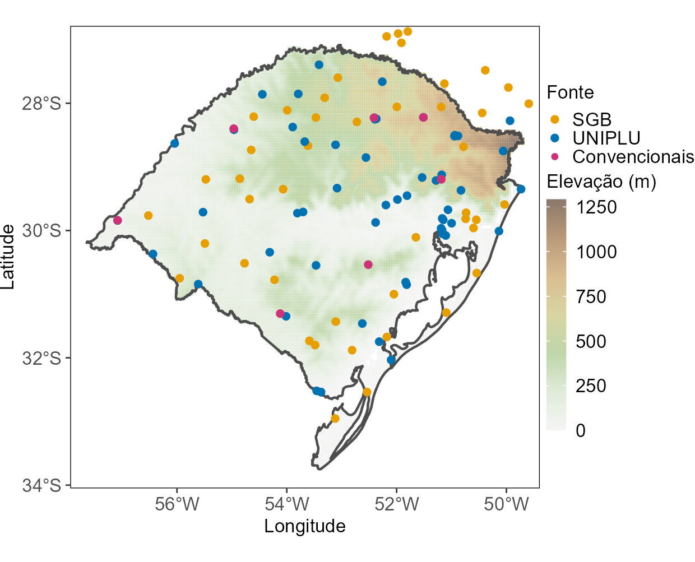
4.3.3.2 Formulação do modelo max-stable
A metodologia utilizada neste trabalho, assim como a sua formulação, está descrita em L. V. Duarte et al. (2025), e apresenta-se aqui um resumo do processo.
Utilizou-se a distribuição Generalizada de Valores Extremos para representar os máximos de precipitações anuais de cada estação, com as diferentes durações reunidas em uma mesma estrutura IDF, considerando válido o princípio da invariância de escala proposto por Koutsoyiannis et al. (1998), conforme descrito e analisado no item Seção 4.3 deste relatório. Assim, além dos parâmetros associados à distribuição GEV (posição, escala e forma), foram estimados o expoente de escala e o parâmetro de correção das durações.
O Modelo Hierárquico Bayesiano foi organizado em 3 níveis:
Nível de dados, que descreve os máximos anuais (block-maxima) e, nos modelos max-stable, sua dependência espacial.
Nível de processo, que descreve como os parâmetros variam no espaço, utilizando regressões e campos Gaussianos latentes.
Nível das distribuições a priori, que especifica a incerteza inicial dos parâmetros.
A dependência espacial aparece em dois níveis nessa estrutura. No nível dos dados, a dependência espacial é definida por um parâmetro 𝛼: quanto mais próximo 𝛼 é de zero, maior é o nível de dependência entre as realizações, e mais suaves são as superfícies geradas. Quando 𝛼 se aproxima de 1, os resultados se assemelham a um modelo latente, com independência condicional. Além do parâmetro 𝛼, nesse nível também é considerado o parâmetro τ, também chamado de logbw, que representa a largura da banda de kernel, e define o quanto cada ponto de dado afeta a área ao seu redor. É nessa camada que a probabilidade conjunta de se observar eventos extremos simultaneamente em várias estações é capturada (Davison et al. 2012). Em um segundo nível, a dependência espacial é representada nos processos, acomodando a variabilidade espacial nas distribuições marginais das precipitações extremas, através da espacialização dos parâmetros da distribuição GEV, de forma análoga à realizada no modelo latente (Stephenson et al. 2016). Nesse caso, são utilizados semivariogramas, que descrevem a dependência espacial através dos efeitos residuais associados aos parâmetros da IDF. Para cada parâmetro, é calculado um valor médio (ou feita uma regressão, no caso do uso de covariáveis) e o efeito residual espacial é modelado por um campo gaussiano, cuja correlação entre os locais depende da distância entre eles.
As estimativas dos parâmetros das curvas IDFs foram realizadas via cadeias MCMC, utilizando 65 mil iterações, das quais as primeiras 50 mil foram descartadas como burn-in. Para análise da convergência das cadeias, foram observados os aspectos visuais das distribuições a posteriori, através da análise dos traceplots.
A definição das informações iniciais utilizadas como entrada do modelo, entre elas os valores iniciais dos parâmetros da GEV, dos semivariogramas, e das diversas distribuições de referência foram baseadas na proposta de Stephenson et al. (2016). A partir dessa proposta inicial, foram testadas diversas combinações de valores, de forma a obter resultados mais estáveis, com a convergência dos parâmetros. As investigações envolveram variações nos valores de inicias dos parâmetros de dependência espacial 𝛼 e largura de banda (logbw), os desvios padrão das distribuições de referência para tais parâmetros, a distribuição a priori de logwb, e tamanho das células. Ao todo, foram realizados mais de 50 testes, da ordem de 6 a 8 horas de processamento para cada um deles. O conjunto de valores que gerou o resultado mais consistente foi então adotado como modelo “baseline” para incorporação do procedimento com as covariáveis. Os parâmetros utilizados são apresentados na Tabela 4.2.
| Parâmetro | Descrição |
|---|---|
Cell size = 0.25 |
Tamanho das células |
iters = 65000 |
Número de iterações |
alpha = 0.8 |
Valor inicial do parâmetro de dependência espacial |
logbw = 4 |
Valor inicial do logaritmo da largura de banda |
tau = c(rep(1,5)) |
Valor inicial do sill para cada parâmetro IDF |
lam = c(rep(1,5)) |
Valor inicial do range para cada parâmetro IDF |
MHlam = c(rep(0.1,5)) |
Desvios-padrão das distribuições de referência dos ranges |
MHalpha = 0.01 |
Desvio-padrão da distribuição de referência de \(\alpha\) |
MHlogbw = 0.05 |
Desvio-padrão da distribuição de referência da largura de banda |
pribeta = c(10,10,10,10,10) |
Parâmetros das distribuições a priori dos coeficientes de regressão |
prialpha = c(1,1) |
Parâmetros da distribuição a priori de \(\alpha\) |
prilogbw = c(1.609,0.01) |
Parâmetros da distribuição a priori de logbw |
pritaua = c(rep(0.1,5)) |
Parâmetros de forma das distribuições inversas-gama |
pritaub = c(rep(0.1,5)) |
Parâmetros de escala das distribuições inversas-gama |
prilama = c(rep(5,5)) |
Parâmetros de forma das distribuições gama |
prilamb = c(rep(0.4,5)) |
Parâmetros de escala das distribuições gama |
4.3.3.3 Incorporação de covariáveis espaciais
Considerando os padrões de precipitação observados no Rio Grande do Sul, que incorporam ao longo do ano chuvas convectivas e de larga escala, foram escolhidas como potenciais covariáveis fisiográficas a elevação e distância em relação à costa leste, de onde vem grande parte da umidade que chega ao estado. Além disso, foram testadas também informações obtidas de dados de satélite, a partir do produto de reanálise ERA5 disponibilizado pelo Copernicus Climate Change Service (C3S) por meio do Climate Data Store: precipitação total anual, precipitação convectiva anual e precipitação em larga escala anual (Copernicus Climate Change Service 2018). Para utilização dos dados do ERA5, foram calculadas as médias das chuvas observadas nos meses mais chuvosos – setembro, outubro e novembro – obtidos com base em todo o estado conjuntamente. Cada uma das 5 covariáveis foram testadas para estimativa dos parâmetros de escala, posição e expoente de escala (Figura 4.2).
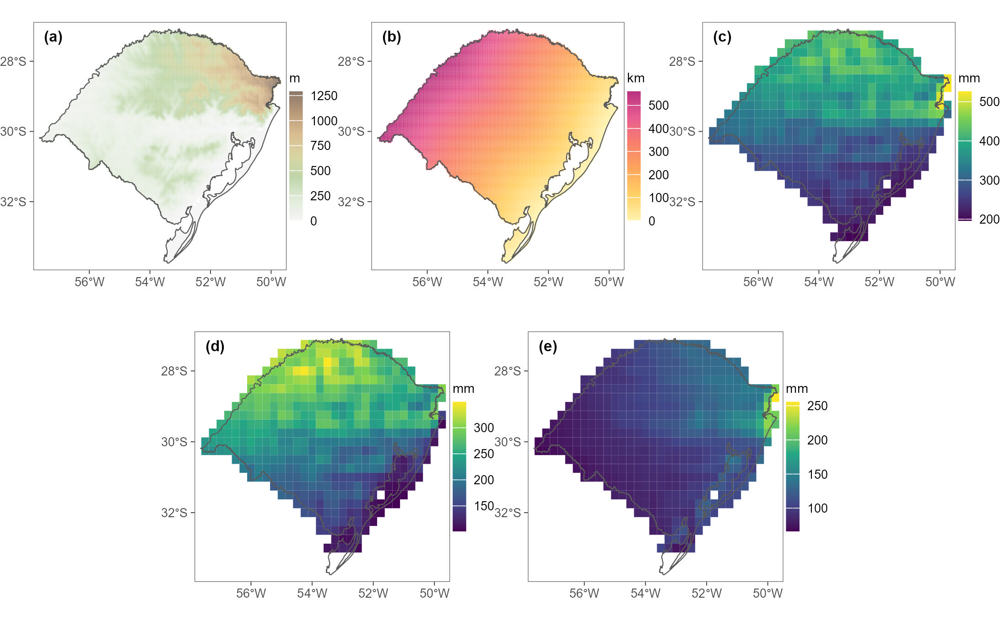
A metodologia para análise das covariáveis foi realizada com base no procedimento descrito a seguir (Figura 4.3). Na Fase 1, as 5 covariáveis foram testadas separadamente para cada parâmetro. A partir da observação dos coeficientes de regressão obtidos para cada par covariável-parâmetro, foram consideradas ‘importantes’ aquelas covariáveis cujos coeficientes apresentavam-se integralmente (2,5 a 97,5% dos seus valores) acima ou abaixo de zero, deixando claro o sinal da correlação. Na Fase 2, foi identificado um modelo para cada parâmetro, incluindo todas as covariáveis consideradas importantes na fase anterior. Na Fase 3, foram testadas juntas essas covariáveis, unindo os parâmetros de escala e posição e suas covariáveis, todos em um mesmo modelo. Na Fase 4, o modelo reuniu todas as covariáveis consideradas importantes nas fases anteriores, reunindo incorporando, além do parâmetro de escala e de posição, o expoente de escala. As covariáveis consideradas importantes nessa fase foram incorporadas a um modelo único final de covariáveis, chamado de MS-COV. Na avaliação, esse modelo foi comparado ao modelo original, chamado de MS.
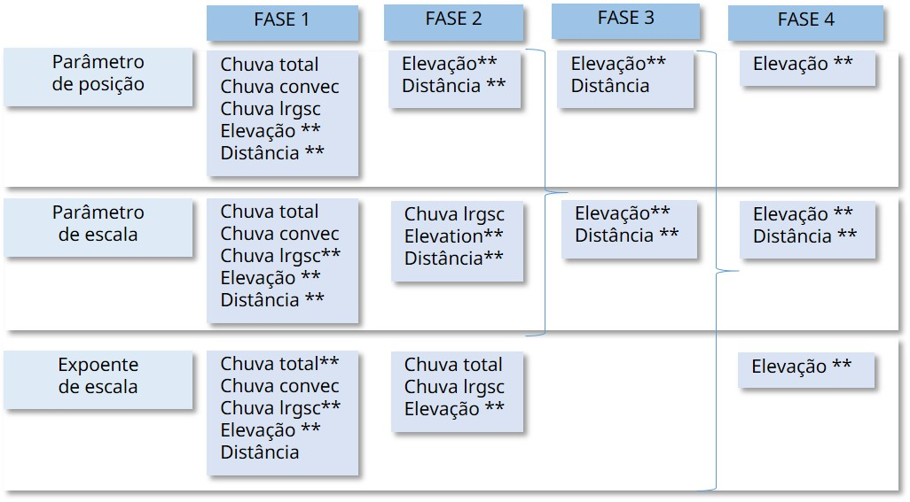
4.3.3.4 Estimativa dos parâmetros em locais não monitorados
A transferência das informações para locais onde não há monitoramento foi realizada por meio da derivação das distribuições condicionais dos erros de regressão de cada parâmetro da GEV para toda a área de estudo. Através dos semivariogramas, as covariâncias são utilizadas para estimar os efeitos residuais nos locais não monitorados, somando-se esses efeitos aos valores médios dos parâmetros, ou aos resultados das regressões, no caso dos modelos que utilizam covariáveis. De forma resumida, considera-se que o valor de determinado parâmetro em um ponto não monitorado é obtido através da soma do valor médio (ou do resultado da regressão), somado a um ajuste residual para aquele ponto Equação 4.41. Esse resíduo, por sua vez, é representado por uma distribuição normal Equação 4.42, com a média calculada pela Equação 4.43, e a variância calculada pela Equação 4.44.
\[ g_{\chi}\{\chi(\mathbf{s}_0)\} = X_{\chi}(\mathbf{s}_0)\boldsymbol{\beta}_{\chi} + \varepsilon_{\chi}(\mathbf{s}_0). \tag{4.41}\]
\[ p\left( \varepsilon_{\chi}(\hat{s}) \mid \varepsilon_{\chi}(s_1),\ldots,\varepsilon_{\chi}(s_m), \boldsymbol{y},\boldsymbol{x}_{\chi},\boldsymbol{\phi}_{\chi} \right) = \mathcal N\left( \mu_{\chi,\mathrm{conditional}}, \sigma_{\chi,\mathrm{conditional}}^{2} \right). \tag{4.42}\]
\[ \mu_{\chi,\mathrm{conditional}} = \Lambda_{\chi}\Sigma_{\chi}^{-1} \left( \varepsilon_{\chi}(s_1),\ldots, \varepsilon_{\chi}(s_m) \right)^{T}. \tag{4.43}\]
\[ \sigma_{\chi,\mathrm{conditional}}^{2} = \delta_{\chi}^{2} - \Lambda_{\chi}\Sigma_{\chi}^{-1}\Lambda_{\chi}^{T}. \tag{4.44}\]
Na Equação 4.41, Equação 4.42, Equação 4.43 e Equação 4.44, \(\chi\) representa o parâmetro da relação IDF a ser estimado, \(g_{\chi}\) sua função de ligação, \(\hat{s}\) o local não monitorado e \(s_j\) e \(s_h\) as localizações das estações observadas, com \(j,h=1,\ldots,m\), sendo \(m\) o número de estações. Os termos \(X_{\chi}(\hat{s})\) e \(\beta_{\chi}\) representam, respectivamente, o vetor de covariáveis no local de estimativa e seus coeficientes de regressão, enquanto \(\varepsilon_{\chi}(s)\) corresponde ao efeito residual espacial. Na distribuição condicional, \(\boldsymbol{y}\) representa os dados observados, \(\boldsymbol{x}_{\chi}\) as covariáveis consideradas e \(\boldsymbol{\phi}_{\chi}\) os parâmetros da estrutura espacial. Por sua vez, \(\mu_{\chi,\mathrm{conditional}}\) e \(\sigma_{\chi,\mathrm{conditional}}^{2}\) são a média e a variância condicionais, calculadas a partir da matriz de covariância entre estações \(\Sigma_{\chi}\), do vetor de covariâncias entre estas e o local não monitorado \(\Lambda_{\chi}\) e da variância marginal do campo residual \(\delta_{\chi}^{2}\). Os sobrescritos \(-1\) e \(T\) indicam, respectivamente, a inversa matricial e a transposição.
A Equação 4.43 descreve a média do efeito residual no local da estimativa, considerando que os pesos utilizados para combinar os resíduos variam em função dos valores de covariância entre cada estação de dados e o local não monitorado. A Equação 4.44 apresenta a variância do efeito residual no local não monitorado, que considera a diferença entre a variância marginal do campo residual (incerteza antes de considerar as estações) e a redução dessa variância proporcionada pelas estações disponíveis.
A avaliação dos modelos MS e MS-COV foi realizada a partir das estações reservadas para validação, comparando-se as intensidades de precipitação estimadas com os respectivos valores observados. Foram utilizadas as métricas de raiz do erro quadrático médio (RMSE), erro absoluto médio (MAE), viés percentual (PBIAS), coeficiente de correlação (\(r\)), eficiência de Nash–Sutcliffe (NSE) e eficiência de Kling–Gupta (KGE), conforme as formulações apresentadas anteriormente neste relatório.
4.4 Aplicação dos modelos — Rio Grande do Sul
4.4.1 Definição do ano hidrológico
4.4.1.1 Sazonalidade circular dos eventos extremos
A análise circular dos eventos extremos de precipitação revelou padrões espaciais distintos na época predominante de sua ocorrência ao longo do território brasileiro (Figura 4.4). A direção dos vetores representa a época típica dos extremos, enquanto seu comprimento é proporcional ao índice de concentração sazonal, \(\bar{r}\). Em grande parte do Brasil Central, Sudeste e interior do país, predominaram eventos associados aos meses de novembro a janeiro. No Nordeste setentrional e na faixa litorânea oriental, destacaram-se ocorrências entre março e maio, enquanto na porção norte do país foram identificadas direções médias associadas principalmente aos meses de março a junho. A Região Sul, por sua vez, apresentou maior heterogeneidade direcional, com menor definição de uma época predominante de ocorrência dos extremos.
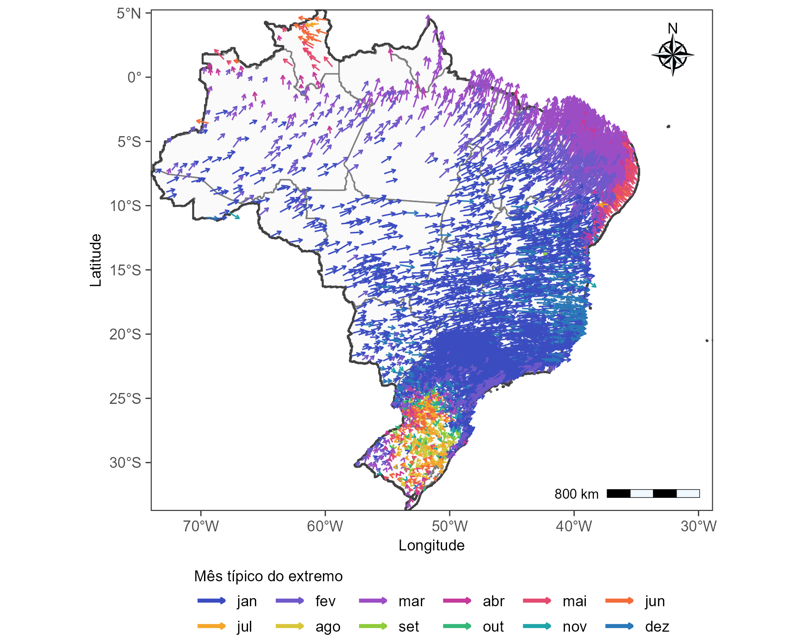
Essa diferenciação regional também foi evidenciada pela distribuição de \(\bar{r}\) (Figura 4.5). Nas estações situadas fora da Região Sul, os valores concentraram-se predominantemente entre 0,50 e 0,75, com frequência máxima próxima de 0,65, indicando maior concentração temporal dos eventos extremos. Em contraste, as estações do Rio Grande do Sul, Santa Catarina e Paraná apresentaram, em sua maioria, valores inferiores a 0,30, com maior frequência entre 0,05 e 0,15. Esse comportamento evidencia uma sazonalidade menos definida dos extremos na Região Sul, em comparação com grande parte do restante do território nacional.

4.4.1.2 Definição do mês inicial nas estações diárias
As diferenças identificadas na concentração sazonal fundamentaram a utilização de um procedimento híbrido para estabelecer o início do ano hidrológico. Nas estações com \(\bar{r}\geq0{,}30\), adotou-se a direção oposta à ocorrência média dos extremos (\(\bar{\phi}+\pi\)), enquanto nos demais casos o mês inicial foi definido a partir da climatologia mensal de precipitação. A distribuição espacial desses critérios (Figura 4.6) mostrou predominância da primeira abordagem nas regiões Norte, Nordeste, Centro-Oeste e Sudeste. Na Região Sul, especialmente no Rio Grande do Sul e em porções de Santa Catarina e Paraná, prevaleceu o critério baseado no último mês do maior período climatologicamente seco. A distribuição observada evidencia a necessidade de considerar diferentes características de sazonalidade na definição dos limites anuais das séries pluviométricas.

A aplicação do procedimento híbrido permitiu determinar o mês de início do ano hidrológico para 5.659 estações pluviométricas diárias (Figura 4.7). Em grande parte do Brasil Central e do interior do Sudeste, predominaram os meses de junho e julho, com ocorrência de agosto em áreas de transição. No Nordeste, observou-se maior diversidade espacial, com meses iniciais entre agosto e setembro em áreas interiores e entre setembro e novembro em porções do norte e do leste da região. Na Região Norte, os meses de início variaram espacialmente, com predomínio de junho a setembro em extensas áreas do território.
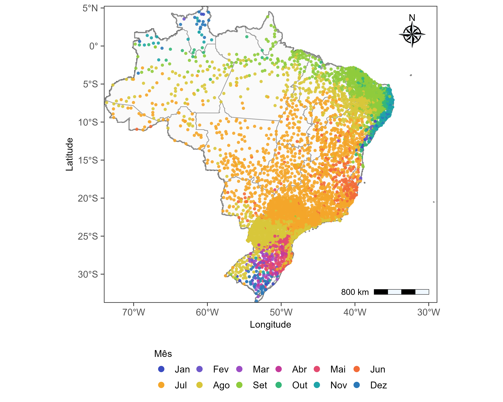
Na Região Sul, a distribuição dos meses iniciais apresentou maior heterogeneidade, com predominância de agosto em partes do Paraná e de Santa Catarina e ocorrência de meses entre março e julho em diferentes áreas do Rio Grande do Sul. Esse padrão reflete a maior participação do critério climatológico na definição do ano hidrológico nessa região. Em conjunto, os resultados permitiram estabelecer uma referência temporal espacialmente diferenciada para a organização das séries de máximos anuais, considerando tanto a época predominante dos eventos extremos quanto a sazonalidade dos totais mensais de precipitação.
4.4.1.3 Transferência do ano hidrológico às estações subdiárias
A partir dos meses de início determinados para as estações diárias de referência, realizou-se sua transferência espacial para as estações subdiárias da base UNIPLU. A aplicação do procedimento permitiu atribuir o mês inicial do ano hidrológico, preservando, em linhas gerais, os padrões regionais identificados na análise das séries diárias.
A classificação espacial indicou predominância de estações situadas em áreas de concordância local, denominadas manchas, que compreenderam 4.943 postos (93,8% do total). As demais 328 estações (6,2%) foram classificadas como áreas de transição, caracterizadas por menor concordância entre os meses de início das estações diárias vizinhas (Figura 4.8). A distribuição espacial dessas classes mostrou que as áreas de transição se concentraram principalmente na Região Sul, especialmente no Rio Grande do Sul, além de ocorrências localizadas no litoral oriental do Nordeste e em outras regiões do território nacional.
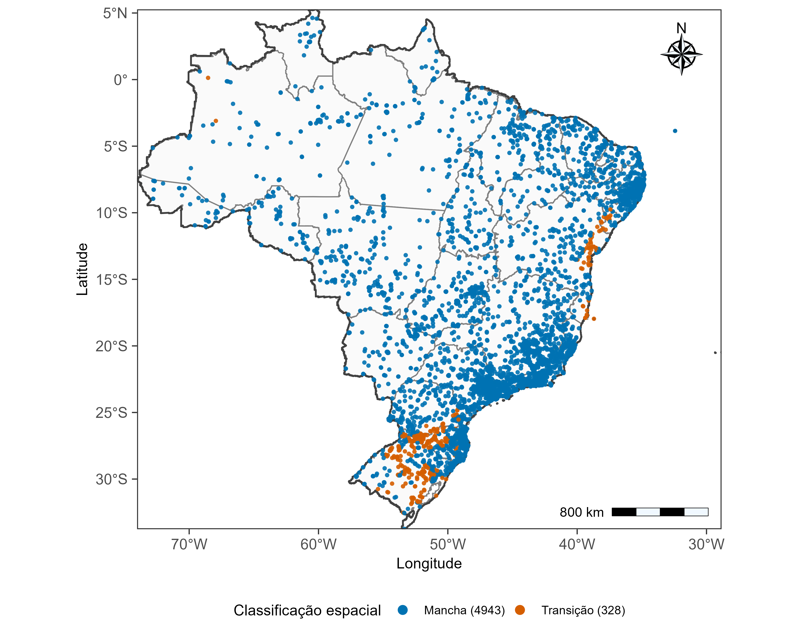
A maior concentração de áreas de transição no Sul é coerente com a heterogeneidade dos meses de início identificada anteriormente nas estações diárias, onde a menor concentração sazonal dos extremos favoreceu a utilização do critério climatológico. Nessas regiões, a existência de diferentes meses de início entre postos próximos reduz a predominância de uma única classe na vizinhança, justificando a aplicação da média circular ponderada. Em contrapartida, a predominância de manchas em grande parte do país indica maior concordância espacial dos meses atribuídos às estações diárias de referência.
A distribuição espacial dos meses de início transferidos às estações subdiárias apresentou padrões semelhantes aos observados na base diária (Figura 4.9). No Brasil Central e em extensas áreas do Sudeste, predominaram meses próximos de junho e julho, enquanto no Nordeste foram observados meses mais tardios, especialmente entre agosto e outubro, com variações nas áreas litorâneas. Na Região Sul, os meses atribuídos apresentaram maior heterogeneidade espacial, sobretudo no Rio Grande do Sul, onde foram identificadas diferentes épocas de início em localidades relativamente próximas.
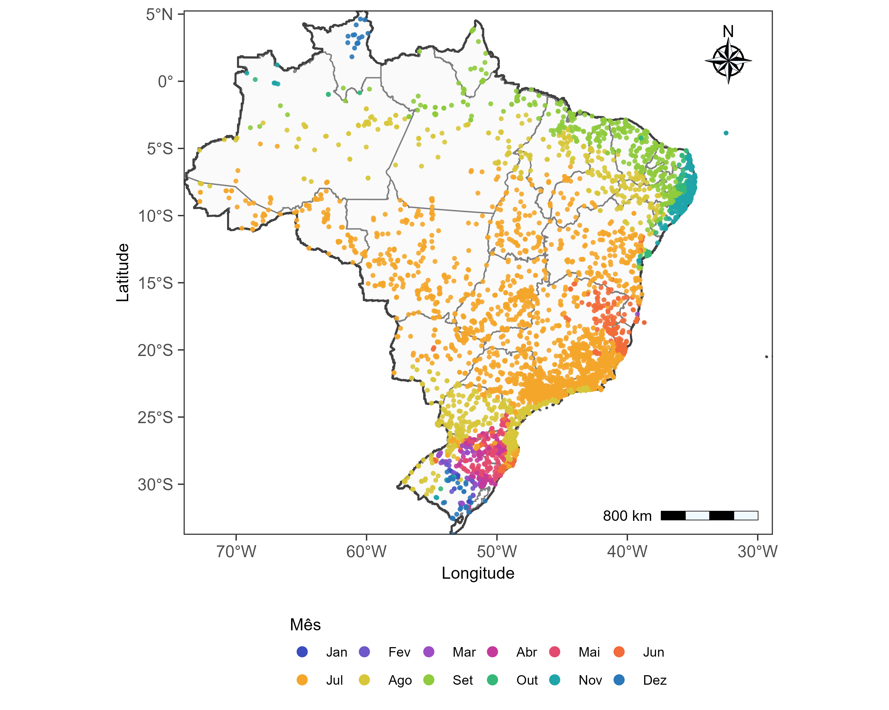
A correspondência entre os padrões observados nas bases diária e subdiária decorre da própria estrutura de transferência espacial adotada, não constituindo uma validação independente dos meses atribuídos. Entretanto, a predominância de áreas com concordância local indica que, para a maior parte das estações subdiárias, a atribuição do mês inicial foi baseada em informações espacialmente consistentes entre os postos diários vizinhos. Nas áreas de transição, o uso da média circular ponderada permitiu considerar simultaneamente diferentes referências sazonais, evitando a imposição de uma única classe modal em regiões com maior heterogeneidade. Os meses de início obtidos foram utilizados posteriormente na organização dos registros e na extração das séries de máximos anuais de precipitação para as diferentes durações subdiárias.
4.4.2 Controle de qualidade e seleção das séries subdiárias
O catálogo UNIPLU-BR reuniu 21.395 estações, das quais 8.687 foram identificadas como candidatas à análise subdiária. Desse conjunto, 694 apresentaram impedimentos relacionados à consistência dos metadados, incluindo 435 por alterações de resolução temporal, 248 por inconsistências cadasis, oito por resolução inválida e três por associação a mais de uma unidade federativa. Outras 14 estações não apresentaram registros temporais válidos, resultando em 7.979 estações com processamento concluído.
A análise de sensibilidade dos critérios de completude e extensão das séries evidenciou diferenças na quantidade de estações elegíveis (Figura 4.10). Com tolerância de 10% de falhas, o número de estações diminuiu de 1.687 para 1.302 ao aumentar a exigência de sete para oito anos válidos. Com tolerância de 20%, foram identificadas 1.978 estações com pelo menos sete anos e 1.973 com pelo menos oito anos. A combinação de no máximo 20% de falhas anuais e pelo menos oito anos válidos foi adotada para preservar a cobertura espacial sem flexibilizar excessivamente o critério de completude.
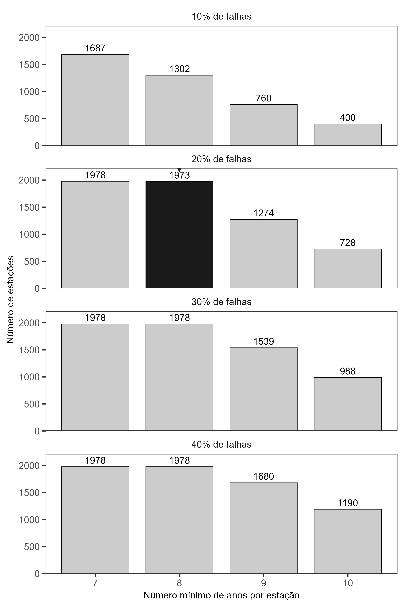
Após a aplicação dos critérios de controle de qualidade e seleção temporal, foram aprovadas 1.973 estações pluviométricas subdiárias, distribuídas entre as redes CEMADEN (1.076), Telemetria (461), INMET subdiário (421) e ICEA (15). A distribuição espacial das estações (Figura 4.11) mostrou maior concentração no Sul, Sudeste e em áreas do Nordeste, enquanto as regiões Norte e Centro-Oeste apresentaram uma rede mais dispersa. Observam-se também diferenças na distribuição das redes de monitoramento, com maior presença de estações CEMADEN em áreas próximas ao litoral e em regiões de maior concentração de postos, enquanto as estações de Telemetria e INMET subdiário apresentam distribuição mais ampla pelo território nacional.
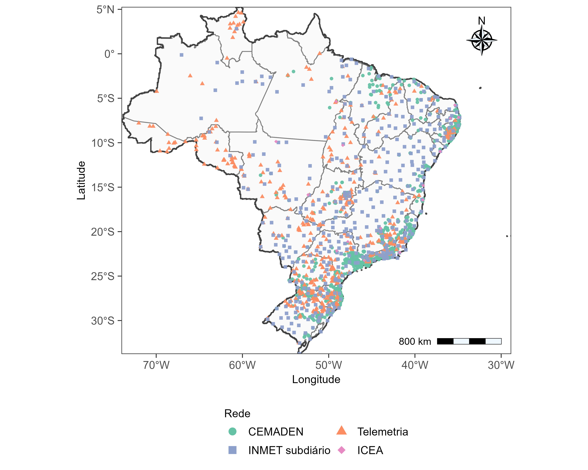
A distribuição por unidade federativa (Figura 4.12) evidenciou maior número de estações aprovadas em São Paulo (278), Minas Gerais (233), Santa Catarina (221), Rio Grande do Sul (158), Paraná (141) e Rio de Janeiro (135). Em contrapartida, estados como Amapá, Acre, Roraima e Amazonas apresentaram menor disponibilidade de estações que atenderam aos critérios estabelecidos. Essa desigualdade espacial reflete a distribuição das redes observacionais e a disponibilidade de séries com completude suficiente, constituindo uma limitação importante para a abrangência territorial das análises subsequentes.
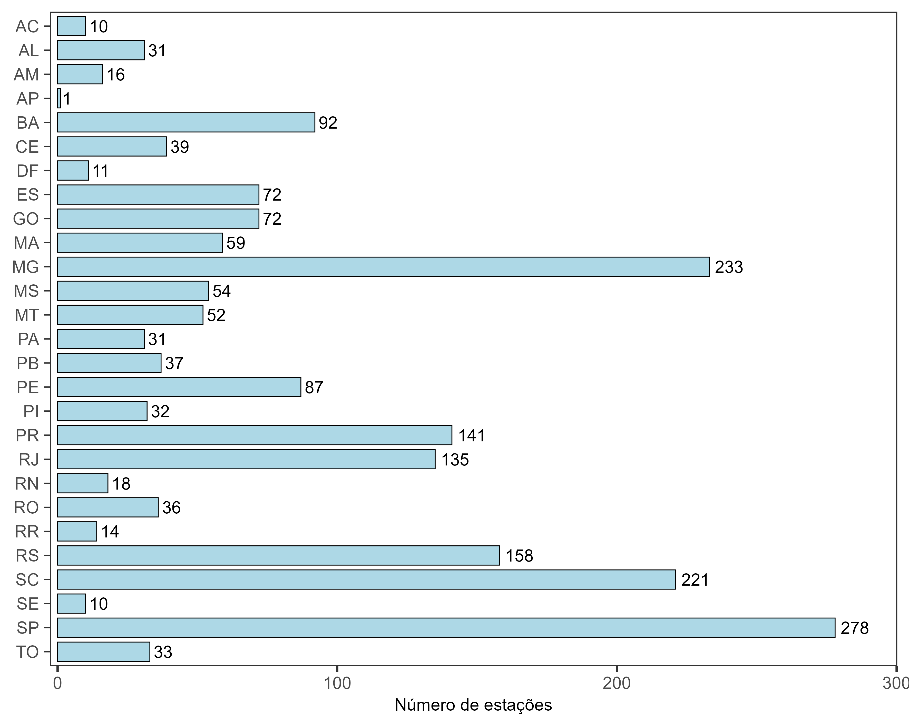
4.4.3 Verificação da invariância de escala
Da Figura 4.13 até a Figura 4.17 são apresentadas as retas de regressão ajustadas aos momentos não centrais até ordem 3, bem como os expoentes de escala \(H\) estimados para cada ordem e o coeficiente de determinação \(R^2\) para as estações mais longas de algumas Unidades Federativas. Os histogramas ao lado ilustram como a linearidade dos modelos ajustados às demais estações do estado. Grande parte das estações mais longas são operadas pelo INMET e pelo ICEA. Como consequência, a maioria das retas de regressão compreende somente as durações a partir de \(d=\) 1 h.
No geral, pela disposição dos momentos calculados e pelo \(R^2\), observa que há uma estrutura aproximadamente linear em diferentes durações. Pelos histogramas, é possível dizer que esta linearidade também existe para as demais estações no estado.
Postos como o A801 no Rio Grande do Sul Figura 4.13, com 24 anos, são exemplos dessa estrutura empiricamente bem definida. Avaliando o modelo ajustado, é possível notar a estrutura aproximadamente linear entre os momentos não centrais ao longo da durações na faixa 1–24 h. Nesse caso, nota-se não somente a estrutura de invariância, como também uma possível conformidade com a invariância de escala simples, visto que há pouca variabilidade entre os expoentes de escala \(H\approx 0.63\) ao longo das diferentes ordens \(q\).
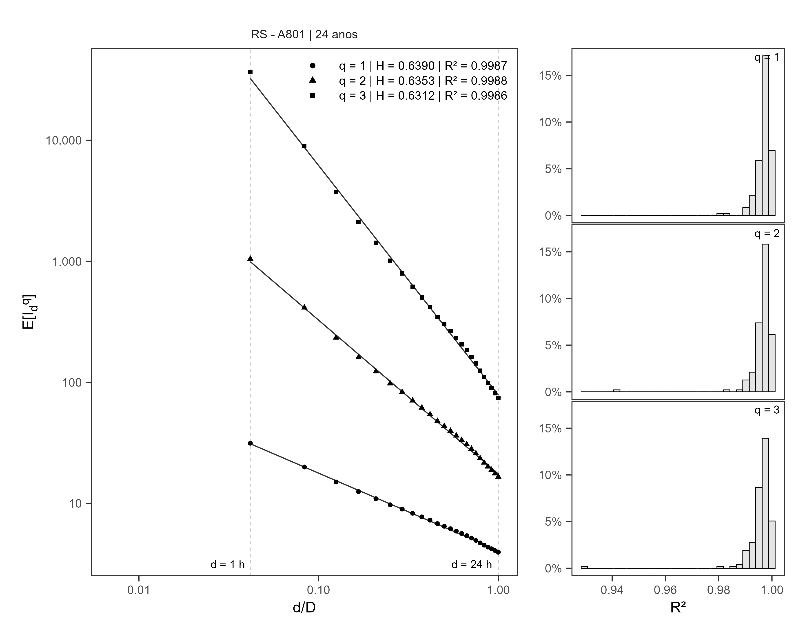
Essa proximidade entre \(H\)s também pode ser observada na Paraíba, no posto SBJP apresentado na Figura 4.14, com 34 anos.

Em outros locais, apesar da aparente linearidade entre os momentos, há uma certa distorção entre os momentos. Esse é o caso do posto SBCF, em Minas Gerais, ilustrado pela Figura 4.15. O modelo linear e os valores pontuais dos momentos apontam para uma boa conformidade com o regime de invariância. As estimativas de \(H\), entretanto, apresentam maior distinção entre si: \(H_{q=1} =\) 0,7909, \(H_{q=2}=\) 0,8131 e \(H_{q=3}=\) 0,8445; sugerindo que o regime de invariância simples poderia não representar a estrutura de invariância de forma adequada.

Outros padrões de divergência desse comportamento são observados. Notavelmente, muitos postos em diferentes regiões exibem aparentes “quebras de regime” próximas às extremidades do intervalo de durações considerado. O posto A305 Figura 4.16, no estado do Ceará, exibe uma estrutura comum a outros no conjunto caracterizada por um padrão convexo nos momentos empíricos: segmentos para \(d<1\) h com inclinação inferior à do modelo ajustado, mas inclinação superior ao se aproximar de \(d =24\) h. O mesmo padrão é observado na Figura 4.14, porém mais atenuado.

O posto SBSJ Figura 4.17, em São Paulo, exibe, por outro lado, um padrão contrário com inclinação inferior à do modelo ao se aproximar de durações diárias — sugerindo, novamente, um possível regime de escala alternativo. Por outro lado, as estimativas de \(H\) entre as diferentes ordens são similares.
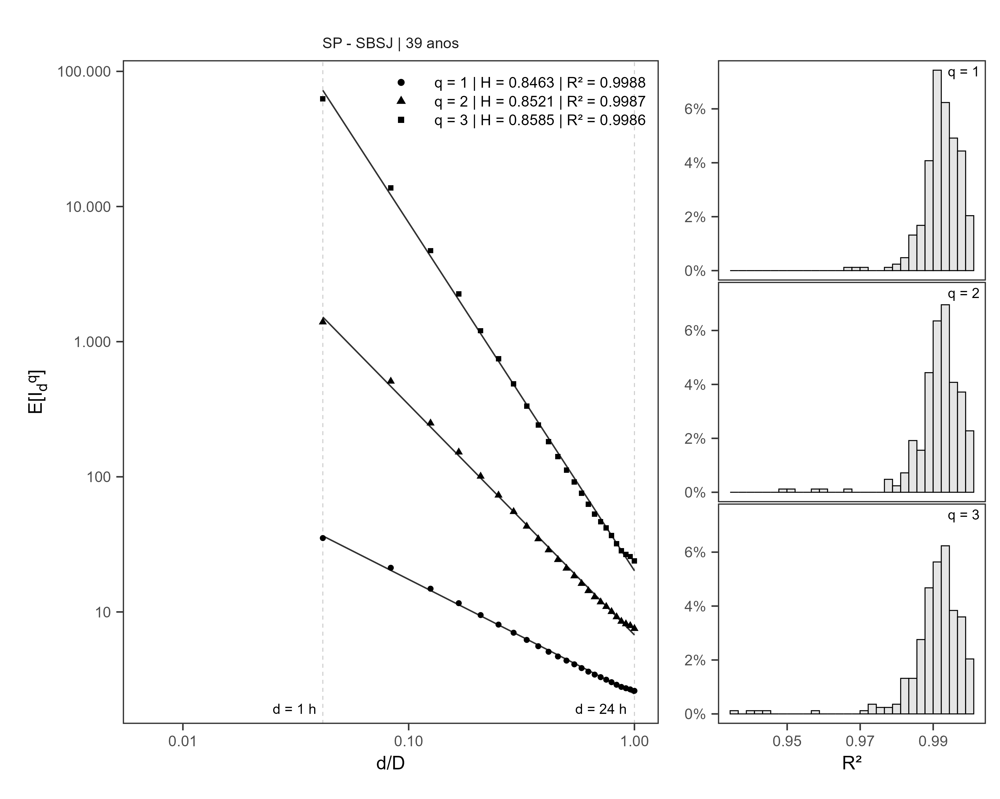
Grande parte das divergências — tanto entre estimativas de \(H\) para \(q=1,2\) e 3, como desvios do modelo linear — também está sujeita à variabilidade amostral. Ainda que alguns dos exemplos incluídos neste relatório disponham de séries com extensões superiores a 30 anos, essa não é a realidade do restante do conjunto de postos pluviográficos.
Finalmente, a Figura 4.18 apresenta o comportamento do expoente de escala \(H\) para os três primeiros momentos espacializado a partir das estimativas pontuais por meio de interpolação por ponderação pelo inverso da distância (IDW). Cinco classes foram utilizadas, buscando incluir quantidades equivalentes de postos em cada uma: com quebras em 0,326 (menor valor identificado); 0,658; 0,713; 0,752; 0,794; e 1 (o limite superior do suporte de \(H\)). Pontos espalhados na imagem representam os postos pluviográficos utilizados.
No geral, observa-se um padrão de estimativas de \(H\) menores, ou seja, até a segunda classe (até 0,713) ao sul e em estados no litoral brasileiro. Ao centro do brasil e em parte da região Norte, nota-se valores de \(H\) mais elevados. Em termos práticos, quanto maior o valor do expoente, mais próximas serão as intensidades ao longo do intervalo de durações utilizado, e vice-versa. Logo, os padrões identificados com a metodologia apresentada na Seção 4.2 mostram que as intensidades em diferentesd durações nas regiões próximas ao litoral e na região Sul se diferenciam a uma taxa menor qunado comparado ao centro e norte do país.

Mas também há de ser considerada a escassez espacial das estações na região Norte, bem como a extensão média das séries disponíveis, na interpretação da interpolação apresentada.
4.4.4 Incorporação de informações regionais nas relações IDF
4.4.4.1 Modelagem semi-bayesiana com informação a priori sobre o parâmetro de forma e invariância de escala
A abordagem semi-bayesiana à região piloto do Rio Grande do Sul, como explicado na Seção 4.3.1, consistiu na aplicação de um algoritmo de maximização da log-verossimilhança, porém incorporando informação a priori sobre o parâmetro de forma, por intermédio de uma distribuição a priori que reúne informações sobre o comportamento médio de \(\xi\) obtidas por meio de um modelo de regressão linear de mínimos quadrados generalizados. Os resultados da construção desse modelo são apresentados na Seção 4.4.4.1.1. A aplicação dessa informação, por sua vez, no ajuste do modelo d-GEV no estado é apresentada na Seção 4.4.4.1.2 e na Seção 4.4.4.1.3.
4.4.4.1.1 Modelo de regressão linear para o parâmetro de forma da distribuição GEV
A construção do modelo GLS se apoiou em um conjunto de séries de precipitação diária consolidadas reunidas para a produção de curvas IDF no estado do Rio Grande do Sul. O conjunto, originalmente disponibilizado no portal do Curvas IDF Rio Grande do Sul | GTA ANA 2024, foi posteriormente incrementado com anos disponíveis até 2024. Para essa aplicação foram empregados 182 postos pluviométricos contendo ao menos 30 anos.
Dos nove parâmetros avaliados, somente integram o conjunto final de modelos apresentado na Tabela 4.3 aqueles com significância estatística correspondentes às coveriáveis: aspecto do terreno; máxima anual média de 1 dia; máxima anual de 3 dias; além de uma variável binária \(Z_1\) a qual subdivide o estado em duas macrorregiões hidrográficas. A primeira coluna da Tabela 4.3 apresenta o parâmetro constante, somada ao modelo. Os modelos estão dispostos conforme o valor da variância média de predição para postos antigos (AVP) e quanto menor a variância, melhor o desempenho do modelo. A primeira linha apresenta o modelo de média regional, visto que não há variáveis preditoras nesse caso. Com um parâmetro \(\hat\beta_0=\) -0,0178, o modelo prevê que o parâmetro regional do parâmetro de forma é, simplesmente, \(\hat\mu_\xi =\) -0,0178. Ou seja, com informações a nível diário disponíveis em séries com mais de 30 anos, o Rio Grande do Sul apresentaria um comportamento de uma GEV de cauda limitada. Cabe ressaltar que este não é uma simples média aritmética, visto que integra a complexa estrutura de correlação cruzada entre as estimativas entre as estações. Já segundo modelo divide o estado em duas regiões: Quando \(Z_1\) = 0, o modelo prevê uma média de cauda pesada \(\hat\mu_\xi =\) 0,015 na região litorênea e Guaíba; enquanto que quando \(Z_1=1\) (região do da bacia do Rio Uruguai), uma média igual a \(\hat\mu_\xi =\) -0,0579⨯1 + 0,015 \(=\) -0,0429 de cauda limitada.
Seguindo essa linha, o modelo de melhor desempenho seria aquele que engloba o aspecto do terreno e a máxima anual média de 3 dias.
Entretanto, analisando os AVPs obtidos, percebe-se que seus valores são próximos (entre 0,00389 e 0,00359), de forma que a diferença entre os modelos, em termos de variância de predição, é apenas marginal. Dessa forma, optando pelo pragmatismo, decidiu-se adotar o modelo de uma única média regional, composto por uma média regional \(\hat\mu_\xi =\) -0,0178 e variância igual a \(\hat\sigma^2_\xi=\) 0,0627.
A Figura 4.19 abaixo apresenta a distribuiçãao a priori regional (em laranja), entitulada RGMLE, comparada à distribuição sugerida por Martins e Stedinger (2000) (em rosa), GMLE. Nota-se como a a priori regional é mais afunilada, com um pico maior, por ser mais informativa. Por outro lado, a distribuição a priori de Martins e Stedinger (2000) concentra boa parte de sua densidade em valores de \(\xi\) de uma GEV de cauda pesada; enquanto que, novamente, a a priori regional atribui um comportamento de cauda limitada — comportamento visto, em muitos casos, na literatura como incompatível com fenômenos hidroclimáticos Papalexiou e Koutsoyiannis (2013). Este é um ponto que deverá ser aprofundado em investigações futuras.

4.4.4.1.2 Parâmetros do modelo d-GEV
O modelo d-GEV foi ajustado a um conjunto de 54 estações subdiárias no estado do Rio Grande do Sul — considerando ao menos 8 anos válidos (com no máximo 20% de falhas anuais). O ajuste foi individual, por estação, ou seja, não houve compartilhamento de informações entre os postos durante a maximização da função de log-verossimilhança Equação 4.16, a não ser pela distribuição a priori regional. Os resultados do ajuste do modelo d-GEV são apresentados na Figura 4.20 somente para o parâmetro de forma da distribuição \(\xi_j\), para o expoente de escala \(H_j\) e para o parâmetro de deslocamento \(\theta_j\). Esse modelo considera, novamente, informação regional adicional sobre o parâmetro de forma da GEV por meio do modelo regional GLS apresentado na seção anterior.
No modelo em questão, os parâmetros são obtidos conjuntamente para a faixa de 1–24 h, por estação. O parâmetro de forma \(\xi_j\) apresenta grande variabilidade espacial. A variabilidade amostral, em razão da média regional proveniente do modelo GLS próxima a zero, é atenuada. As estimativas obtidas variam de -0,24 (cauda limitada) até 0,25 (cauda pesada) e uma parcela significativa da região (interpolada) é composta por valores estimados entre -0,05 e 0,05. Apesar disso, nota-se uma concentração superior de valores positivos na porção sudeste do estado, enquanto estimativas negativas surgem a norte e a oeste — cabendo destaque, ainda, à incerteza existente nessas estimativas.
O parâmetro de escala \(H_j\), por sua vez, exibe padrões espaciais mais claros. O parâmetro varia ao longo do conjunto entre 0,643 e 0,827. São observadas estimativas mais elevadas na porção sudoeste do estado (entre 0,739 e 0,827), aumentando gradualmente em direção à porção noroeste (entre 0,643 e 0,695). O parâmetro de deslocamento \(\theta_j\) apresenta um comportamento semelhante. A literatura aponta que há correlação entre \(\theta\) e \(H\) (Lima et al. 2018), o que é notável analisando a Figura 4.20, com estações onde foi ajustado um valor elevado de \(H\) também foi ajustado um \(\theta\) elevado, possivelmente para atenuar a inclinação das curvas de intensidade e duração para durações menores.
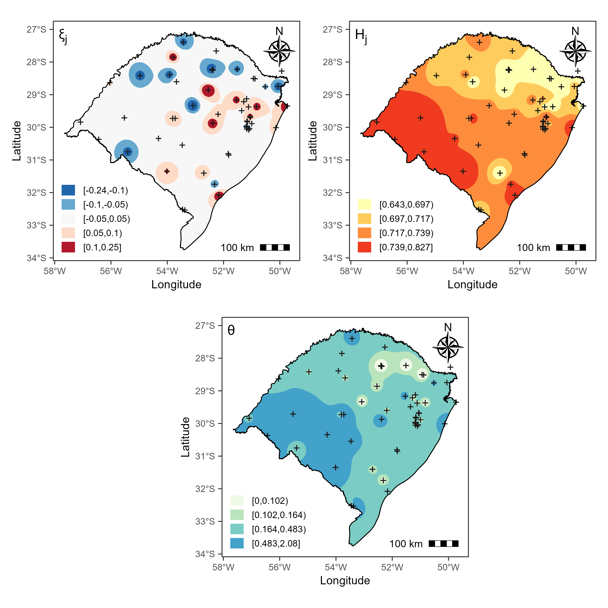
4.4.4.1.3 Curvas intensidade-duração-frequência
Com um ajuste simultâneo para todas as durações até 24 h, as curvas para a relação intensidade-duração-frequência são obtidas simplesmente pela expressão quantílica da d-GEV Equação 4.17. A incerteza nas estimativas é representada por meio de intervalos de confiança de 95% estimados com verossimilhança perfilada. A Figura 4.21 e a Figura 4.22 apresentam as curvas IDF estimadas pelo modelo para os períodos de retorno de 2, 10, 50 e 100 anos (na primeira) e 5, 25 e 200 anos (na segunda). Três estações pluviográficas foram escolhidas para representar o comportamento das curvas: A801, com a série mais extensa do conjunto; 430120601A, com comportamento de cauda limitada; e A837, com comportamento de cauda pesada.
Como esperado, distribuições de cauda limitada apresentam quantis (curvas) mais próximos para diferentes períodos de retorno. Destaca-se a estação 430120601A, com \(\xi =\) -0,197, cujas curvas para perídos de retorno elevados estão quase sobrepostas. Essas estações possuem também intervalos de confiança estreitos, para 2, 5 e 10 anos e durações próximas a 24 h, são quase imperceptíveis. O comportamento é oposto para a estação A837. Com um parâmetro de forma estimado em 0,242, as curvas são mais espaçadas e essa distância é superior para períodos de retorno mais elevados. Quantis mais extremos elevam também a incerteza e, como consequência, a largura dos intervalos de confiança também aumenta — perceptível nos quantis de 50 e 100 anos na Figura 4.21 e no quantil de 200 anos na Figura 4.22.
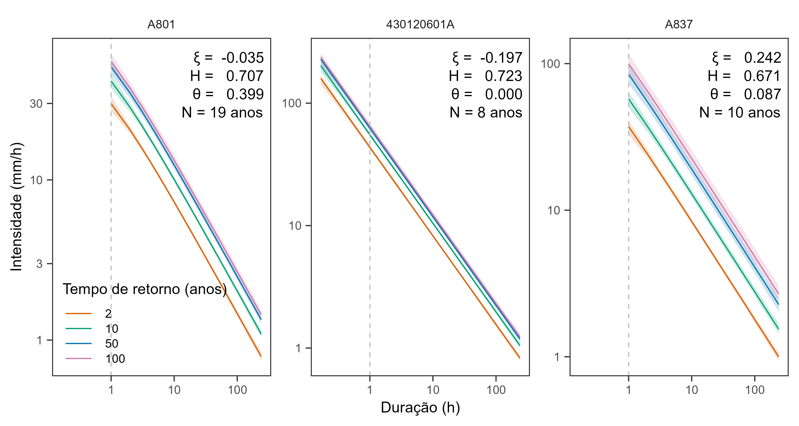
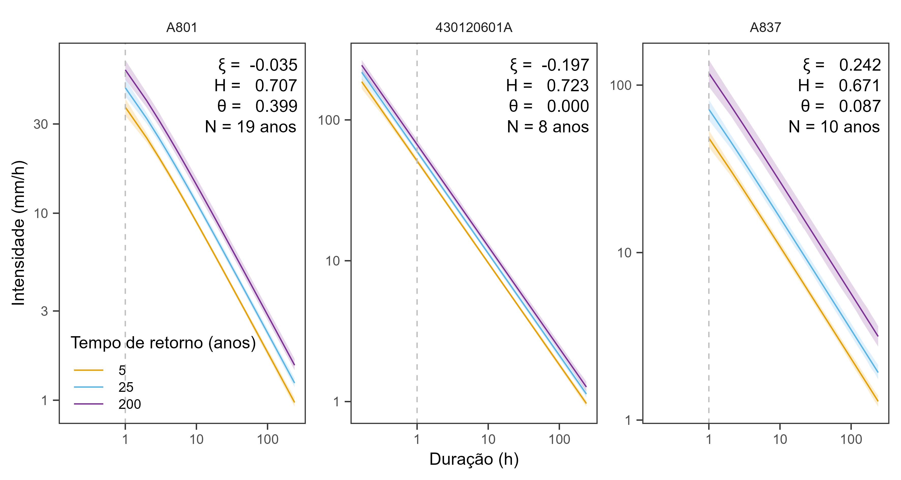
4.4.4.2 Modelos hierárquicos bayesianos (BHM)
4.4.4.2.1 Diagnósticos e comparação preditiva dos modelos
Os diagnósticos de amostragem indicaram comportamento geral satisfatório dos cinco modelos bayesianos ajustados às 52 estações do Rio Grande do Sul. Os valores máximos de \(\widehat{R}\) variaram entre 1,014 e 1,019, permanecendo inferiores ao limite de 1,05 adotado na avaliação. Quanto às divergências, os modelos com \(\xi\) comum, específico por duração e por estação–duração não apresentaram ocorrências, enquanto o modelo com \(\xi\) específico por estação registrou duas divergências e o modelo local (non-pooled), 31 distribuídas em 14 estações.
Na avaliação do PSIS-LOO, os modelos regionais apresentaram proporções reduzidas de observações com valores de Pareto-\(k\) superiores a 0,7, entre 0,008% e 0,073%. O modelo local (non-pooled) apresentou maior frequência de valores elevados, com 118 observações (0,96%) acima desse limite, incluindo três com Pareto-\(k>1\). Esses resultados indicam maior necessidade de cautela na interpretação das estimativas preditivas desse modelo, particularmente para as observações mais influentes.
A comparação preditiva dos cinco modelos bayesianos foi realizada por meio do critério PSIS-LOO, considerando as 12.288 observações utilizadas nos ajustes. O modelo com parâmetro de forma específico por estação (\(\xi_j\)) apresentou o melhor desempenho, com ELPD-LOO de −26.365,1 (Tabela 4.4). Em relação a esse modelo, as demais estruturas apresentaram diferenças de ELPD-LOO entre −320,1 e −402,5, indicando menor capacidade preditiva sob o critério adotado.
| Modelo | ELPD-LOO | \(\Delta\)ELPD (± EP) |
|---|---|---|
| \(\xi_j\) — Por estação | −26.365,1 | 0,0 |
| \(\xi_d\) — Por duração | −26.685,2 | −320,1 ± 22,2 |
| \(\xi\) — Comum | −26.687,1 | −322,0 ± 21,0 |
| \(\xi_{j,d}\) — Estação–duração | −26.687,1 | −322,0 ± 20,7 |
| Local (non-pooled) | −26.767,5 | −402,5 ± 12,1 |
Os resultados favoreceram a representação de \(\xi\) variável entre estações, mas constante entre durações dentro de cada estação, com compartilhamento hierárquico regional. A maior flexibilidade do parâmetro de forma entre durações não proporcionou melhoria preditiva, enquanto o modelo local (non-pooled) apresentou o desempenho menos favorável. Esses resultados referem-se às séries de máximos anuais organizadas segundo o ano civil e à avaliação preditiva pontual adotada.
4.4.4.2.2 Parâmetros estruturais e parâmetros da distribuição GEV
A análise dos parâmetros estruturais revelou comportamento relativamente semelhante do expoente de escala \(H\) entre os cinco modelos bayesianos. As medianas espaciais variaram de 0,711, no modelo com parâmetro de forma específico por estação (\(\xi_j\)), a 0,735, no modelo com parâmetro de forma específico por duração (\(\xi_d\)). As amplitudes interquartílicas permaneceram entre 0,059 e 0,068, indicando dispersões espaciais comparáveis entre as diferentes especificações. Para o modelo \(\xi_j\), que apresentou o melhor desempenho preditivo, a mediana espacial de \(H\) foi de 0,711, com valores entre 0,610 e 0,909 nas estações analisadas.
A distribuição das medianas posteriores de \(H\) nas estações apresentou comportamento semelhante entre os cinco modelos (Figura 4.23), com maior concentração de valores entre aproximadamente 0,68 e 0,77. Embora o modelo com \(\xi_j\) específico por estação tenha apresentado mediana espacial ligeiramente inferior, as distribuições mostraram ampla sobreposição.
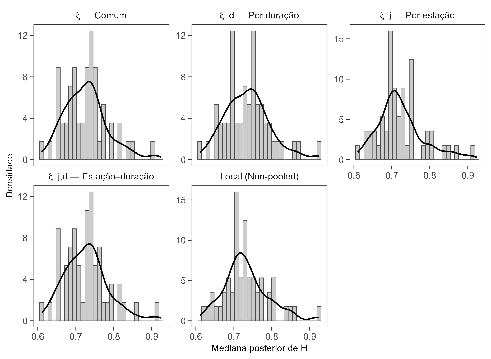
A distribuição espacial de \(H\) também apresentou padrões semelhantes entre os modelos (Figura 4.24). Os maiores valores concentraram-se principalmente nas porções oeste e noroeste do estado, enquanto estimativas relativamente menores foram observadas em áreas centrais e orientais. Como valores mais elevados de \(H\) representam maior redução das intensidades estimadas com o aumento da duração, os resultados indicam diferenças regionais na intensidade dessa relação de escala, ainda que os padrões espaciais se mantenham relativamente estáveis entre os modelos.
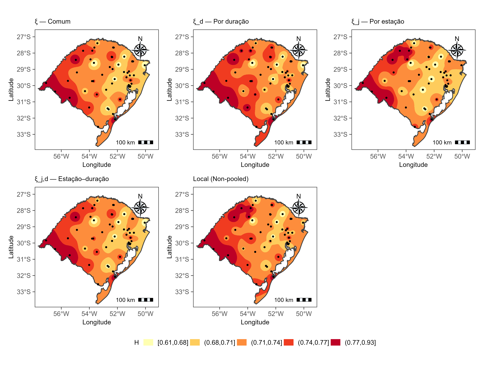
O parâmetro de deslocamento temporal \(\theta\) apresentou maior variabilidade relativa entre estações, com medianas espaciais entre 0,360 e 0,521 h, dependendo do modelo. No modelo \(\xi_j\), a mediana foi de 0,360 h, com amplitude interquartílica de 0,315 h e valores entre 0,031 e 1,76 h. Os mapas de \(\theta\) (Figura 4.25) mostraram predominância de valores relativamente elevados na porção ocidental do Rio Grande do Sul, especialmente no oeste e sudoeste, enquanto estimativas menores ocorreram com maior frequência em setores centrais, orientais e do nordeste do estado. Considerando que \(\theta\) atua na curvatura da relação entre os parâmetros GEV e a duração, essa variabilidade espacial sugere que o ajuste necessário para representar o comportamento das intensidades nas menores durações não é uniforme entre as estações analisadas.

Os parâmetros de localização (\(\mu\)) e escala (\(\sigma\)) da distribuição GEV também apresentaram resultados próximos entre as especificações avaliadas. Para a duração de 24 horas, as medianas espaciais de \(\mu\) variaram entre 4,13 e 4,25 mm/h, enquanto as de \(\sigma\) permaneceram entre 0,939 e 0,970 mm/h. No modelo \(\xi_j\), foram obtidas medianas de 4,17 mm/h para \(\mu\) e 0,939 mm/h para \(\sigma\), evidenciando diferenças relativamente pequenas em relação às demais estruturas.
Em contrapartida, o parâmetro de forma \(\xi\) apresentou diferenças mais expressivas entre os modelos, refletindo as restrições de compartilhamento adotadas. Para a duração de 24 horas, o modelo com \(\xi\) globalmente comum estimou um valor de 0,024, enquanto o modelo com \(\xi\) compartilhado por duração apresentou 0,040. O modelo regional com parâmetro específico por estação–duração apresentou mediana espacial de 0,026, com valores concentrados em um intervalo relativamente estreito. Já os modelos \(\xi_j\) e local (non-pooled) apresentaram maior heterogeneidade espacial, com medianas de 0,004 e 0,058, respectivamente.
A distribuição espacial das estimativas de \(\xi\) para 24 horas evidencia essas diferenças (Figura 4.26). Os modelos com parâmetro de forma comum e específico por duração não apresentam variação entre estações, conforme suas respectivas restrições. O modelo regional com \(\xi_{j,d}\) apresenta variação espacial bastante reduzida, enquanto os modelos \(\xi_j\) e local (non-pooled) revelam maior heterogeneidade, com alternância entre estimativas positivas e negativas. Nesses dois últimos modelos, observam-se valores predominantemente negativos em setores do norte e noroeste do estado, enquanto estimativas positivas aparecem de maneira mais localizada nas porções central, oriental e meridional. A semelhança geral entre esses padrões indica que parte da heterogeneidade espacial é preservada mesmo com a regularização regional do parâmetro de forma.
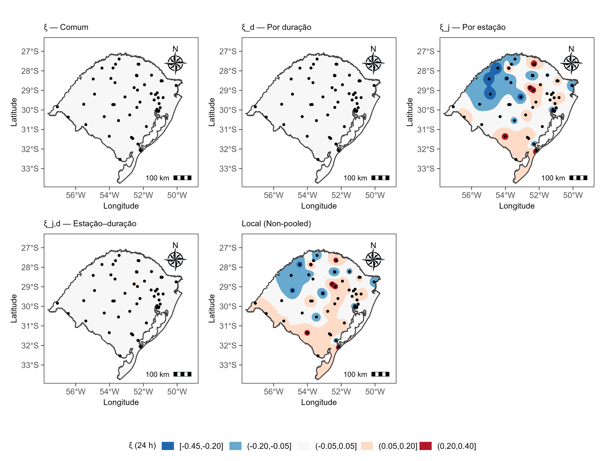
No modelo \(\xi_j\), as estimativas de forma foram negativas em 26 estações e positivas nas outras 26, variando de −0,412 a 0,390. Os percentis espaciais de 5% e 95% foram, respectivamente, −0,339 e 0,331. Essa distribuição evidencia a presença de diferentes comportamentos estimados para as caudas da GEV, que não podem ser representados por modelos que impõem um único parâmetro de forma a todas as estações. O modelo local (non-pooled) também apresentou alternância de sinais, com valores de \(\xi\) para 24 horas entre −0,306 e 0,338. Entretanto, a estrutura regional \(\xi_j\) permitiu representar essa heterogeneidade entre estações com regularização hierárquica compartilhada, tendo apresentado o desempenho preditivo mais favorável.
As diferenças entre os modelos também foram observadas na estação A801, utilizada para exemplificar o comportamento de \(\xi\) ao longo das durações (Figura 4.27). Nos modelos com parâmetro de forma constante entre durações, as estimativas permaneceram invariáveis, com valores próximos de 0,024 para o modelo global e −0,119 para o modelo \(\xi_j\). O modelo regional \(\xi_{j,d}\) apresentou valores positivos próximos de zero, com pequenas oscilações ao longo das durações. Em contrapartida, o modelo \(\xi_d\) apresentou maior variação nas menores durações, com estimativa positiva em 1 hora, redução até valores negativos entre aproximadamente 3 e 6 horas e posterior recuperação gradual em direção a valores próximos de zero. O modelo local (non-pooled) manteve estimativas predominantemente negativas, com variações relativamente pequenas entre as durações e valores mais próximos de zero nas durações intermediárias.

Apesar das diferenças nas estimativas centrais, os intervalos de credibilidade apresentaram sobreposições expressivas entre várias das especificações, especialmente nas estruturas que permitem variação de \(\xi\) entre durações. Na estação A801, os intervalos associados aos modelos \(\xi_d\), \(\xi_{j,d}\) e local (non-pooled) também abrangem valores próximos de zero em diversas durações. Assim, as oscilações das medianas posteriores não constituem, isoladamente, evidência conclusiva de mudanças sistemáticas no comportamento da cauda. Considerando conjuntamente a incerteza posterior e o desempenho preditivo, os resultados favorecem a estrutura regional com parâmetro de forma específico por estação, sem necessidade de impor sua variação entre durações.
4.4.4.2.3 Curvas intensidade–duração–frequência (IDF)
As curvas intensidade–duração–frequência (IDF) estimadas pelos cinco modelos bayesianos foram analisadas para três estações do Rio Grande do Sul: A801, 430120601A e A828. Em todas as especificações, as intensidades diminuíram com o aumento da duração e aumentaram com o período de retorno, preservando o comportamento esperado das relações IDF. Entretanto, observaram-se diferenças entre os modelos na magnitude das intensidades e, em alguns casos, na forma das curvas. Na estação 430120601A, as estimativas permaneceram relativamente próximas entre as especificações, indicando menor sensibilidade à estrutura adotada para o parâmetro de forma. Na estação A801, o modelo com \(\xi_d\) específico por duração apresentou mudanças de inclinação mais evidentes, sobretudo entre aproximadamente 3 e 6 horas, em concordância com a variação de \(\xi\) observada anteriormente. Já na estação A828, os modelos com \(\xi_j\) específico por estação e local (non-pooled) produziram intensidades mais elevadas, principalmente para os maiores períodos de retorno, evidenciando maior sensibilidade das estimativas IDF à parametrização das caudas.
A análise dos intervalos de credibilidade pontuais de 95% para os períodos de retorno de 10, 50 e 100 anos (Figura 4.28) mostrou faixas relativamente estreitas nas estruturas com parâmetro de forma comum, por duração e por estação–duração. Nas estações A801 e 430120601A, as estimativas apresentaram maior proximidade entre os modelos, embora o modelo local tenha produzido intervalos relativamente mais amplos. Na estação A828, destacaram-se as intensidades superiores estimadas pelo modelo \(\xi_j\), especialmente para o período de retorno de 100 anos, acompanhadas de maior amplitude dos intervalos de credibilidade. Comportamento semelhante foi observado no modelo local (non-pooled), indicando maior sensibilidade das estimativas à heterogeneidade do parâmetro de forma nessa estação.

Para os períodos de retorno de 5, 25 e 200 anos (Figura 4.29), as diferenças entre as especificações tornaram-se particularmente evidentes nas estimativas associadas a 200 anos. Na estação A828, os modelos com \(\xi_j\) específico por estação e local (non-pooled) produziram intensidades substancialmente superiores às obtidas pelas estruturas com parâmetro de forma comum, por duração ou por estação–duração. Os intervalos de credibilidade dessas duas especificações também apresentaram maior amplitude, refletindo a incerteza associada à extrapolação dos quantis extremos. Nas estações A801 e 430120601A, as diferenças entre os modelos foram menos expressivas, embora o modelo local (non-pooled) tenha apresentado faixas de incerteza relativamente mais amplas, sobretudo para o período de retorno de 200 anos.

Em conjunto, os resultados mostram que diferentes hipóteses de compartilhamento do parâmetro de forma podem produzir estimativas IDF semelhantes em determinadas estações, mas diferenças expressivas em outras, especialmente para períodos de retorno elevados. A maior sensibilidade observada na estação A828 evidencia a influência da parametrização de \(\xi\) sobre os quantis extremos, enquanto os resultados da estação 430120601A indicam que essa influência não é uniforme entre os postos analisados. Essas diferenças complementam a comparação preditiva, que favoreceu o modelo regional com \(\xi_j\) específico por estação, mas também demonstram a importância de considerar a incerteza posterior na interpretação das estimativas extrapoladas.
4.4.4.3 Modelos espaciais max-stable
A hipótese da invariância de escala dos dados utilizados foi analisada e validada conforme apresentado na Seção 4.4.3 desse relatório. Após as 4 fases de análises dos coeficientes de regressão das covariáveis, isoladamente e em conjunto, para cada um dos parâmetros, os resultados indicaram como importantes as covariáveis elevação para parâmetro de posição, elevação e distância para parâmetro de escala, e elevação para expoente de escala. Para todos os pares citados, todo o intervalo de credibilidade de 95% dos coeficientes apresentou-se acima de zero ou abaixo de zero (Tabela 4.5). Para estimativa do parâmetro de posição, a incorporação de informações sobre elevação apresentou um coeficiente de regressão positivo (loc.b1, Tabela 4.5), o que indica que, neste modelo, estações de maior altitude tendem a apresentar valores maiores desse parâmetro. Assim, analisando-se exclusivamente o parâmetro de posição, seria possível inferir que, para estações de maior altitude mais elevadas, seriam observadas maiores estimativas de chuvas extremas, e curvas IDF com maiores intensidades. No entanto, ressalta-se que, como os parâmetros são avaliados conjuntamente, esses resultados podem ser ‘compensados’ pelas variações dos outros parâmetros. Comparando-se os conjuntos de parâmetros obtidos para cada um dos modelos, com e sem covariáveis, observa-se que a o modelo MS-COV apresenta uma mediana do parâmetro de posição ligeiramente maior do que a observada em MS (μMS = 3.34 e μMS-COV = 3.43), com valores ligeiramente mais dispersos entre as 80 estações analisadas (Figura 4.2). Em linhas gerais, isso poderia se traduzir em um conjunto de estimativas maiores de chuva extrema e em curvas IDF de maiores intensidades, no conjunto total das estações da modelo com covariáveis. No entanto, ressalta-se que os parâmetros se relacionam entre si, e que variações em um determinado parâmetro podem induzir alterações nos outros.
| Parâmetro | MS: 2,5% | MS: 50% | MS: 97,5% | MS-COV: 2,5% | MS-COV: 50% | MS-COV: 97,5% |
|---|---|---|---|---|---|---|
loc.b0 |
3,191 | 3,344 | 3,510 | 2,844 | 3,206 | 3,561 |
loc.b1 |
— | — | — | 0,412 | 0,826 | 1,281 |
loc.tau |
3,192 | 4,936 | 7,580 | 3,086 | 5,215 | 9,048 |
loc.lam |
5,068 | 11,071 | 21,912 | 4,735 | 11,564 | 25,048 |
lscale.b0 |
2,473 | 2,547 | 2,614 | 2,368 | 2,511 | 2,654 |
lscale.b1 |
— | — | — | -0,718 | -0,525 | -0,349 |
lscale.b2 |
— | — | — | 0,227 | 0,328 | 0,437 |
lscale.tau |
24,575 | 38,391 | 59,445 | 29,282 | 54,434 | 89,370 |
lscale.lam |
10,301 | 26,741 | 47,246 | 6,219 | 16,865 | 36,762 |
shape.b0 |
0,167 | 0,214 | 0,262 | 0,155 | 0,203 | 0,254 |
shape.tau |
24,769 | 38,086 | 58,297 | 26,202 | 39,530 | 60,812 |
shape.lam |
3,267 | 8,626 | 19,331 | 3,359 | 9,248 | 18,566 |
lkap.b0 |
-1,739 | -1,517 | -1,309 | -1,787 | -1,547 | -1,327 |
lkap.tau |
0,898 | 1,318 | 1,882 | 0,718 | 1,031 | 1,444 |
lkap.lam |
1,641 | 4,345 | 8,434 | 1,922 | 4,004 | 8,211 |
lteta.b0 |
0,996 | 1,053 | 1,123 | 1,013 | 1,154 | 1,303 |
lteta.b1 |
— | — | — | -0,547 | -0,396 | -0,260 |
lteta.tau |
19,975 | 30,627 | 47,108 | 19,430 | 31,826 | 49,686 |
lteta.lam |
8,406 | 22,839 | 43,281 | 5,301 | 12,936 | 27,636 |
alpha |
0,510 | 0,527 | 0,549 | 0,515 | 0,539 | 0,557 |
logbw |
1,590 | 1,609 | 1,628 | 1,590 | 1,609 | 1,628 |
logpost |
-26923,9 | -26864,8 | -26813,4 | -26923,1 | -26862,0 | -26807,8 |
Legenda: loc: parâmetro de posição, lscale: log parâmetro de escala, shape: parâmetro de forma, lkpa: log de kappa, lteta: logit do expoente de escala, alpha: coef. de dependência espacial, logbw: largura da banda, logpost: logaritmo da distribuição posterior conjunta de todos os parâmetros do modelo
Para o parâmetro de escala, as evidências indicaram associações negativas para elevação (lscale.b1) e positivas para distância em relação à costa (lscale.b2) Tabela 4.2. Ou seja, quanto menor a altitude de uma estação e quanto maior a sua distância em relação à costa leste do país, maior o parâmetro de escala. Analisando apenas tais relações, observa-se que as curvas de IDF dessas estações, mais a oeste e de menor altitude, poderiam apresentar uma maior dispersão dos máximos de chuva, em relação à sua mediana, com caimento menos abrupto, indicando uma probabilidade maior de ocorrência de valores mais distantes da mediana. Ressalta-se, no entanto, as possíveis correlações com os outros parâmetros da GEV que podem constrastar esses efeitos.
Quando analisadas todas as estações conjuntamente, comparando-se o modelo com e sem a inclusão de covariáveis, observa-se que o conjunto total de valores obtidos para o parâmetro de escala é aproximadamente semelhante para ambos os modelos, em termos medianos, com o pico de valores do modelo MS-COV apresentando-se ligeiramente mais à esquerda (σMS = 12.86 e σMS-COV = 12.53) (Figura 4.2).
Para os parâmetros de forma, não foi testada a inclusão de covariáveis. No entanto, como a modelagem conjunta da estrutura de dependência espacial afeta as estimativas locais dos parâmetros da GEV, observa-se que o modelo MS-COV apresentou uma distribuição de valores ligeiramente menor do que a observada para MS (medianas ξ MS = 0,200 e ξ MS-COV = 0,211). Como a diferença é pequena, considera-se que, em ambos os modelos, o comportamento assintótico da cauda da distribuição dos eventos extremos seja semelhante. Como ambos apresentaram valores positivos, associados a caudas pesadas, os resultados indicam distribuições com maior probabilidade de eventos mais severos.
Para o expoente de escala, a covariável obtida como importante para sua estimativa foi a elevação, para a qual o coeficiente de regressão apresentou-se negativo (lteta.b1) (Tabela 4.2), o que indica que estações localizadas em maiores altitudes tendem a apresentar uma redução proporcional mais lenta da intensidade da chuva à medida que a duração aumenta, obtendo-se curvas IDF menos inclinadas, caso o efeito do expoente seja considerado isoladamente. Assim, para um mesmo período de retorno, seria observado nessas estações mais elevadas um menor contraste proporcional entre intensidades de curta e longa duração.
Comparando-se o conjunto total de dados gerados para a modelagem completa com e sem covariáveis, o expoente de escala apresentou-se praticamente idêntico entre os modelos MS e MS-COV, indicando um padrão semelhante em seu comportamento geral (medianas η MS = 0,737 e η MS-COV = 0,738) (Figura 4.30).
Para o coeficiente de dependência espacial 𝛼 cabe ressaltar que esse é um parâmetro único para cada modelo, não sendo especializado como os demais apresentados. Os resultados do coeficiente 𝛼 apresentaram valores medianos α MS = 0,52 e α MS-COV = 0,54 (Figura 4.30). Tais valores indicam um grau de dependência espacial intermediário na camada de dados de ambos os modelos. Embora a diferença entre as medianas seja relativamente pequena, a observação das distribuições empíricas das amostras indica uma clara separação entre os conjuntos de dados, indicando valores de menor magnitude de \(\alpha\) – o que representa maior grau de dependência espacial – no modelo que inclui covariáveis.
O resultado indica a possibilidade de que, no modelo MS-COV, a dependência espacial esteja sendo explicada em partes pelos outros parâmetros, que se relacionam aos fatores físicos que foram considerados - como elevação e distância para a costa. Embora as covariáveis não tenham sido testadas especificamente para esse parâmetro, já que no método aplicado \(\alpha\) é um valor único, as interações que ocorrem durante os procedimentos da modelagem podem ser suficientes para resultar em conjuntos diferentes de valores de \(\alpha\), o que, de certa forma, dificulta a interpretabilidade dos modelos. Resultados análogos, em que a inclusão de covariáveis para estimativa dos parâmetros da IDF resultou uma redução discreta nos valores de 𝛼 encontrados foram observadas por (L. V. Duarte et al. 2025).
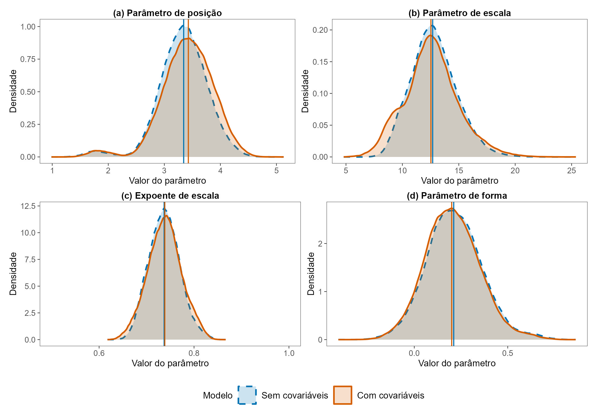
A Figura 4.31 apresenta os resultados da aplicação das métricas para os modelos MS e MS-COV. O primeiro ponto a ser observado é o bom desempenho de ambos os modelos em relação às métricas analisadas, apresentando valores muitos próximos a 1 para NSE, r e KGE, e próximos a 0 para MAE, RMSE e PBIAS. Observa-se também a semelhança entre os resultados obtidos para ambos os modelos, não sendo evidente, em nenhuma das métricas, e para nenhuma das durações analisadas, algum tipo de superioridade de um modelo em relação ou outro. As poucas indicações de outliers, e a estreita faixa dos box-plots, indicam uma boa consistência entre as estimativas e os dados das estações de monitoramento. Por último, fica evidente a pequena variação nos resultados da métricas ao longo das durações analisadas, já que em apenas algumas delas (MAE, RMSE e KGE) é possível observar uma pequena diferença das medianas dos resultados, sendo as menores durações as que apresentam ligeiramente menor grau de desempenho.

A Figura 4.32 apresenta as curvas IDF geradas para estações de monitoramento diário (24h) que apresentaram mais de 30 anos de dados. É possível observar que as curvas geradas por ambos os modelos são semelhantes, tanto em sua mediana, quanto nos intervalos de credibilidade, sendo visível uma pequena tendência a apresentação de maiores intensidades por parte do modelo MS-COV. Em todas as estações, observa-se uma tendência das curvas a superestimarem os dados observados, por ambos os modelos.
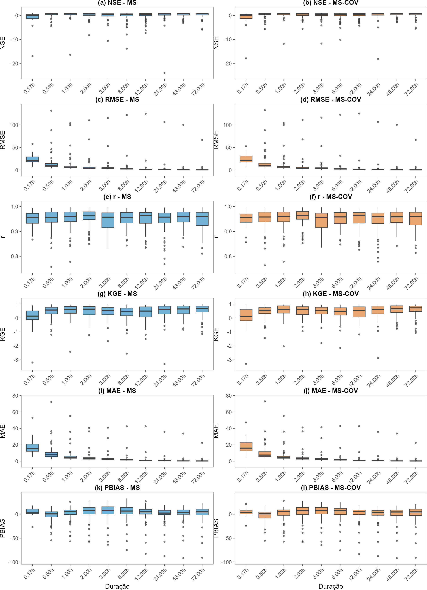
A Figura 4.33 apresenta a diferença proporcional observada entre a intensidade mediana calculado para o modelo MS-COV em relação ao modelo MS, para diferentes períodos de retorno (colunas) e diferentes durações (linhas).
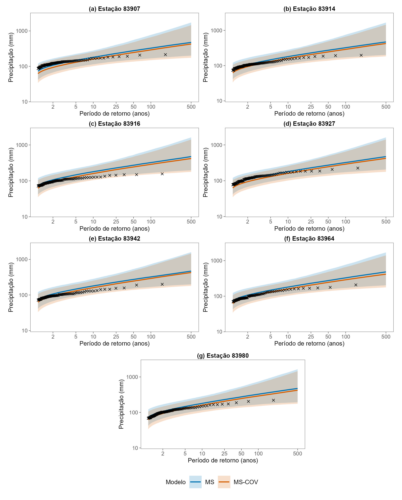
Considerando-se as medianas dos valores de intensidade, o modelo MS-COV resultou em intensidades menores na região leste do estado, e maiores na parte oeste, quando comparado ao modelo MS, apresentando uma variação norte-sul que reflete as superfícies observadas no mapa de elevações. Esse padrão é observado para todas as durações e TRs definidos. No entanto, a magnitude das diferenças é maior para os maiores TRs e menores durações: as maiores diferenças entre os modelos são observadas para o TR 100 anos, e para 1h. Na região mais a leste do estado, as intensidades calculadas com MS-COV chegam a ser 20% maiores do que as calculadas com MS. Para o TR de 10 anos e duração de 24h essas variações são mais suaves.
Nos mapas apresentados, a diferença entre as medianas de intensidade de ambos os modelos apresenta um padrão semelhante ao observado na relação entre o parâmetro de escala e as covariáveis analisadas: quanto menor a elevação e maior a distância à costa leste, maior o valor do parâmetro de escala. Tais resultados devem ser analisados considerando-se que existe um importante grau de interação e compensação entre os parâmetros da GEV durante a modelagem. Quando analisado isoladamente, por exemplo, o parâmetro de posição indicou correlação positiva com a elevação, o que poderia levar à uma inferência pontual de que em estações de maior altitude, seriam observadas maiores intensidades de precipitação, se todas as outras condições fossem constantes. No entanto, conforme já analisado em outros trabalhos, os parâmetros de posição e escala podem apresentar alto grau de correlação entre si. (Gardini 2023) encontraram uma alta correlação entre os parâmetros de escala e posição estimados em sua modelagem, e diversos estudos inclusive usam uma adaptação da formulação da GEV, calculando a taxa μ/σ (Dell’Aira et al. 2026; Prosdocimi e Kjeldsen 2021). Como o sinal de correlação entre cada um desses parâmetros e a elevação foram opostos (positiva para posição e negativa para escala) existe a possibilidade de que o aumento em um parâmetro esteja compensando a redução do outro, o que dificulta a interpretabilidade da inclusão de covariáveis nesse tipo de modelagem.
Entre as vantagens dos modelos Bayesianos em comparação às análises frequentistas está a obtenção de uma distribuição de probabilidades para a variável em estudo, e não apenas um valor único. A Figura 4.33 apresenta um exemplo desse tipo de resultado, em que a intensidade calculada, considerado um período de retorno e uma duração específica, apresenta um valor mediano, em torno do qual os valores mais prováveis de ocorrer estão concentrados (coluna intermediária). Além disso, são apresentados limiares de maior e menor probabilidade estimadas dessas intensidades. As figuras à esquerda representam as intensidades associadas ao quantil 2,5%, e à direita ao quantil de 97,5%, para ambos os modelos. Ou seja, existe uma probabilidade 95% de que a intensidade de chuvas de 1h associada a um período de retorno de 100 anos esteja contida no intervalo formado pelos limites das intensidades apresentadas nas figuras.

A utilização de processos max-stable na elaboração de curvas IDF representa um avanço na modelagem estatística de extremos de precipitação, uma vez que permite considerar explicitamente a dependência espacial entre eventos extremos observados em diferentes locais. Assim, essa abordagem fornece uma representação estatística mais coerente com o caráter espacial dos fenômenos meteorológicos extremos. Quando inserida em uma estrutura hierárquica bayesiana, permite representar conjuntamente a dependência espacial dos extremos e a variabilidade espacial dos parâmetros das distribuições marginais. A inclusão de covariáveis capazes de explicar parte dessa variabilidade acrescenta informações relevantes sobre os controles espaciais dos extremos de precipitação e, particularmente, contribui para a inferência dos parâmetros e das curvas IDF em locais não monitorados.
Por outro lado, o desenvolvimento do presente estudo evidencia algumas limitações associadas à aplicação de modelos dessa complexidade. Entre elas, destaca-se a indisponibilidade de séries observadas suficientemente longas e representativas para a avaliação dos eventos mais extremos estimados. Outros pontos a serem aprimorados incluem a consideração de parâmetros que, na prática, deveriam variar em função da duração das precipitações, como o coeficiente de dependência espacial, que no modelo utilizado é considerado um valor único para toda a região e para todas as durações.
Em que pese as necessidades de aprimoramento, a capacidade do modelo max-stable associados a estruturas hierárquicas bayesianas de representar explicitamente a dependência espacial entre extremos constitui importante justificativa para a continuidade dos estudos envolvendo tais processos em outras regiões. No caso específico do Rio Grande do Sul, os resultados obtidos evidenciaram relações importantes entre os parâmetros utilizados na construção das curvas IDF e características fisiográficas do terreno, particularmente a elevação e a distância em relação à costa leste. A incorporação dessas covariáveis permite representar parte da variabilidade espacial dos parâmetros e fornece subsídios para investigar como características fisiográficas associadas aos padrões regionais de precipitação se refletem na distribuição espacial dos extremos. Nesse sentido, a abordagem contribui tanto para a regionalização das estimativas em locais não monitorados quanto para uma melhor compreensão das relações entre os padrões espaciais observados nos extremos de precipitação e sua representação por modelos estatísticos.
4.5 Aplicação do modelo semi-Bayesiano às séries diárias
Nessa aplicação, as intensidades de precipitação máxima anuais em escala diária foram ajustadas com o modelo d-GEV considerando a distribuição a priori de Martins e Stedinger (2000), uma distribuição Beta com média 0,100 e variância 0,122².
Conforme estabelecido na Meta 5, oito durações de precipitação foram selecionadas: 1, 2, 3, 4, 5, 6, 7 e 10 dias (24, 48, 72, 96, 120, 144, 168 e 240 horas, respectivamente). Somente séries com pelo menos 30 anos válidos de observações foram utilizadas, totalizando 5.258 estações. Os máximos anuais foram selecionados conforme o ano hidrológico definido estimados para cada estação individualmente.
4.5.1 Parâmetros do modelo d-GEV
Novamente, o modelo d-GEV considera simultaneamente todas as durações em um ajuste único, totalizando 5 parâmetros estimados. O parâmetro de deslocamento \(\theta\) foi mantido na otimização, porém seu efeito para intensidades diárias é negligenciável. Portanto, os resultados espacializados apresentados adiantes concernem somente às estimativas de \(\xi\) e \(H\).
A distribuição espacial de \(\xi\) Figura 4.35 apresentou uma larga variabilidade espacial. Distribuições de cauda pesada, de cauda limitada e de cauda aproximadamente leve (\(\hat\xi \approx 0\)) foram observadas em diferentes regiões do Brasil. Caudas pesadas surgem com maior frequência nas regiões Sul, Sudeste (com estimativas entre 0,05 e 0,46); enquanto um comportamento de cauda limitada é visto a norte da região Nordeste e na região Norte (entre -0,05 e -0,37). Ainda assim, a vasta maioria é composta por estimativas \(\hat\xi \in\) [-0,05; 0,05] — possivelmente atenuada ainda pela interpolação.
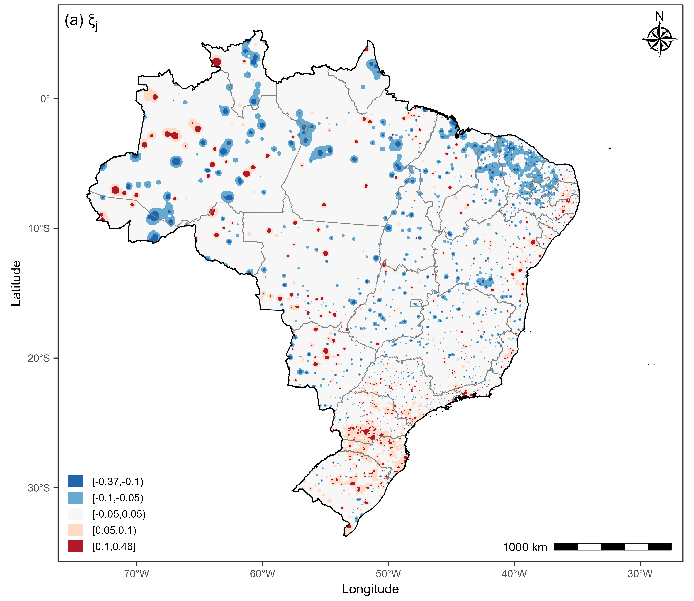
Assim como observado no estado do Rio Grande do Sul, a interpolação espacial do expoente de escala \(H\) exibem padrões mais claros. A região Nordeste e a região Sul apresentaram valores superiores a 0,66, enquanto valores menores estão presentes na região Centro-Oeste e em partes da região Norte. No geral, percebe-se que uma faixa extensa do território está no intervalo de 0,58–0,66 para intensidades de duração diária.
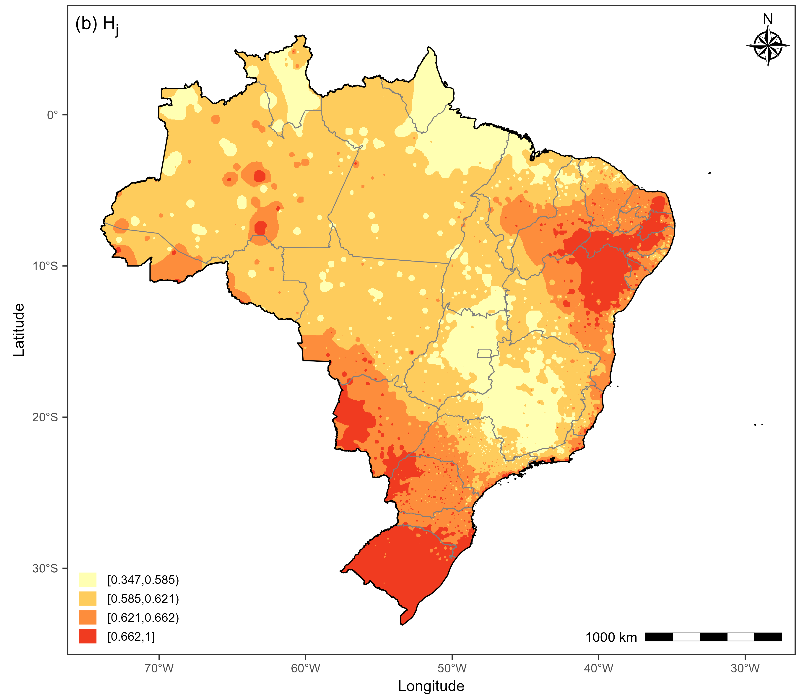
4.5.2 Curvas intensidade-duração-frequência
As curvas estimadas pelo modelo semi-Bayesiano foram examiandas em seis estações pluviométricas distintas, apresentadas na Figura 4.37 e na Figura 4.38 para os tempos de retorno de 2, 10, 50 e 100 anos (primeira figura) e 5, 25 e 200 anos (segunda figura). As estações foram escolhidas buscando ilustrar diferentes comportamentos do parâmetro de forma da GEV: Ceará (739006), Minas Gerais (1842004), Pernambuco (735041), Paraná (2549006), Rio Grande do Norte (535011) e Santa Catarina (2849002). Essas estações apresentaram distribuições ajustadas de cauda limitadas (CE e MG), caudas pesadas (PE, RN e SC) e caudas com decaimento próximo a exponencial (leve, PR).
A influência do parâmetro de forma ajustado se assemelha aos resultados apresentados na Seção 4.4.4.1. Estimativas pontuais de distribuições de cauda pesada geral curvas com quantis extremos mais espaçados entre si (para uma menor frequência, mais extrema será a intensidade média da chuva estimada). Nesses casos, aumenta também a larguda dos intervalos de confiança de 95% estimados com verossimilhança perfilada. Já estimativas de caudas limitadas (nos quadros da primeira fileira das Figuras 4.37 e 4.38), exibem curvas estimadas próximas já a partir de 50 anos. Outro ponto observado é a presença majoritária de curvas aproximadamente lineares no espaço logarítmico, característica conferida pela ausência quase total de estimativas de \(\theta>\) 0.
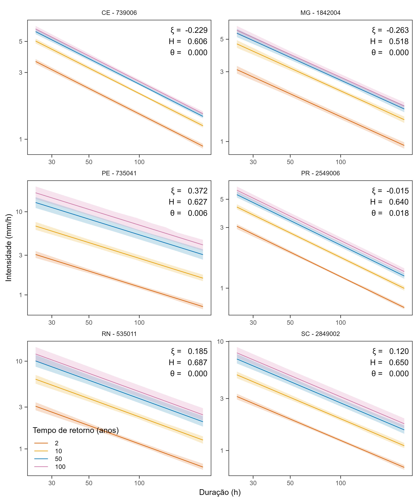
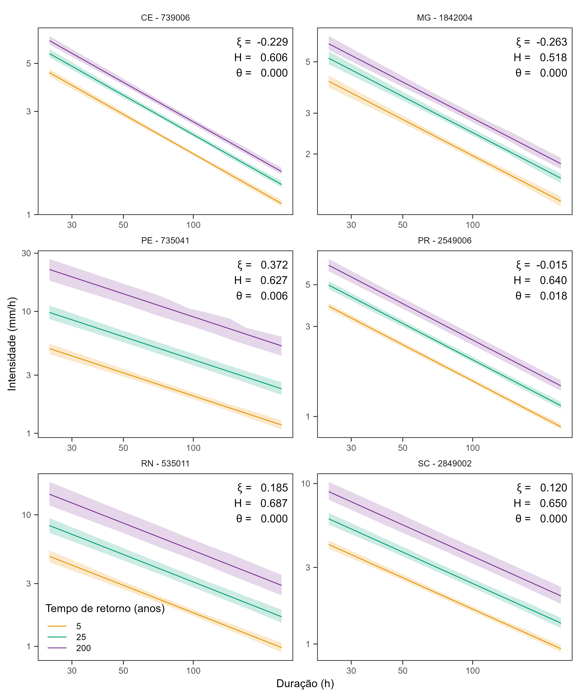
4.6 Aplicação do modelo bayesiano às séries diárias
A análise das precipitações extremas em escala diária foi realizada por meio do modelo hierárquico bayesiano local (non-pooled), cuja formulação probabilística, relações de invariância de escala e distribuições a priori foram apresentadas anteriormente na análise subdiária do Rio Grande do Sul. Nesta etapa, a mesma estrutura foi aplicada individualmente às estações pluviométricas distribuídas pelo território brasileiro, mantendo o compartilhamento hierárquico de informações entre durações de uma mesma estação, sem compartilhamento espacial dos parâmetros.
Foram consideradas oito durações de precipitação: 1, 2, 3, 4, 5, 6, 7 e 10 dias, correspondentes a 24, 48, 72, 96, 120, 144, 168 e 240 horas, respectivamente. Foram incluídas apenas estações com pelo menos 30 anos válidos de observações, considerando as séries de máximos anuais organizadas segundo o mês inicial do ano hidrológico definido individualmente para cada estação.
Diferentemente da análise comparativa realizada no Rio Grande do Sul, na qual os máximos anuais foram delimitados pelo ano civil, a presente aplicação utilizou anos hidrológicos específicos por estação. Essa organização buscou considerar as diferenças regionais na sazonalidade das precipitações extremas, evitando a adoção de um mesmo limite anual para todo o território nacional.
Os parâmetros de localização (\(\mu\)), escala (\(\sigma\)) e forma (\(\xi\)) da distribuição GEV foram estimados para cada duração. A estrutura de invariância de escala manteve a duração de referência \(d_0=24\) h, com os parâmetros estruturais \(\alpha\), \(\beta\), \(H\) e \(\theta\) estimados individualmente para cada estação. O parâmetro de forma também foi mantido específico por duração, com regularização hierárquica em torno de um parâmetro central local, \(\bar{\xi}\).
A inferência foi realizada por amostragem MCMC utilizando Stan, com cinco cadeias independentes de 20.000 iterações, das quais 10.000 foram destinadas ao aquecimento. Foi aplicado um fator de espaçamento (thinning) de 50, resultando em 1.000 amostras posteriores retidas por estação. Os parâmetros de controle do amostrador foram definidos como adapt_delta = 0.999 e max_treedepth = 17.
As distribuições posteriores dos parâmetros GEV foram utilizadas para estimar os quantis associados aos períodos de retorno analisados, conforme as equações apresentadas anteriormente.
4.6.1 Resultados da aplicação nacional
4.6.1.1 Diagnósticos de convergência
Foram realizados 5.258 ajustes individuais do modelo bayesiano, correspondentes às estações pluviométricas selecionadas para a análise diária. Nenhuma estação apresentou valor máximo de \(\widehat{R}\) superior a 1,05. Entretanto, foram identificadas divergências na amostragem de 333 estações (6,33% do total), enquanto as demais 4.925 estações (93,67%) não apresentaram divergências.
A distribuição espacial desses diagnósticos (Figura 4.39) mostrou que as estações com divergências se encontram distribuídas por diferentes regiões do território brasileiro, sem concentração exclusiva em uma região específica. Embora os valores de \(\widehat{R}\) não tenham ultrapassado o limite adotado, as divergências indicam a necessidade de cautela na interpretação dos resultados das estações afetadas.
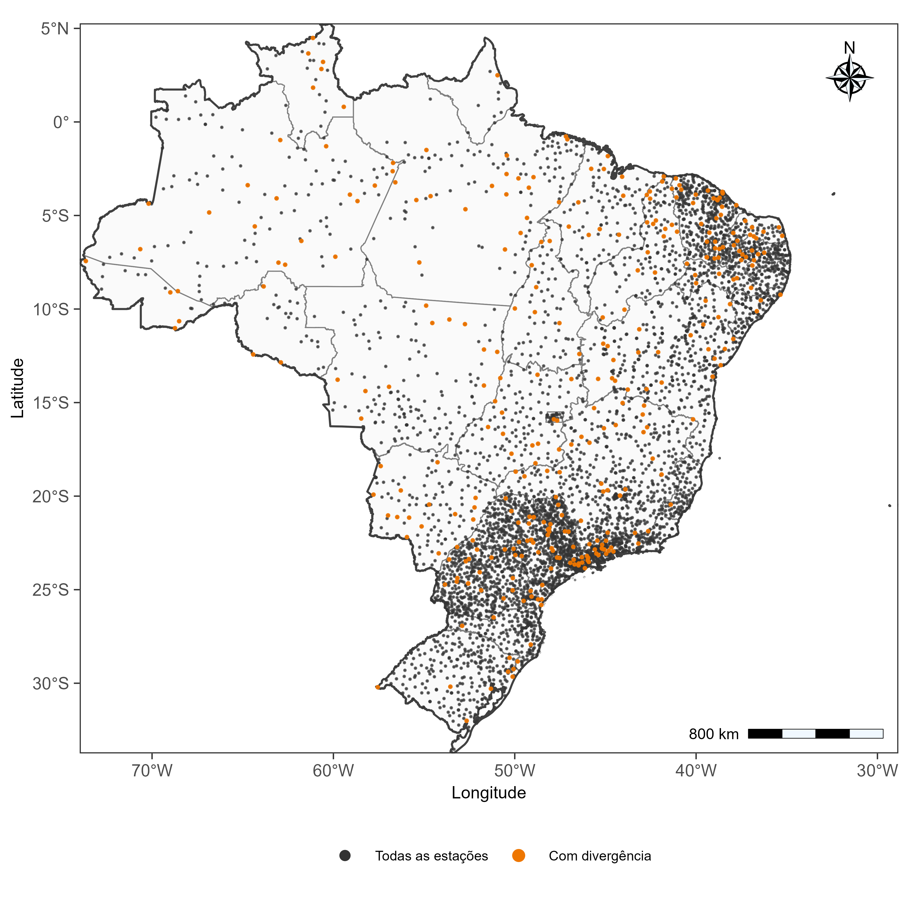
4.6.1.2 Parâmetros estruturais do modelo
A análise dos parâmetros estruturais considerou as medianas das distribuições posteriores estimadas individualmente nas 5.258 estações. A síntese nacional foi realizada a partir da distribuição dessas medianas entre estações, permitindo caracterizar a variabilidade espacial dos parâmetros sem pressupor uma distribuição posterior nacional conjunta.
O expoente de escala \(H\) apresentou mediana nacional de 0,656, com intervalo interquartil entre 0,618 e 0,694. Os percentis de 5% e 95% corresponderam a 0,564 e 0,752, respectivamente, enquanto os valores extremos variaram de 0,372 a 0,962. A concentração das estimativas em torno de 0,65 indica relativa regularidade na relação de escala entre a duração e os parâmetros de localização e escala da distribuição GEV (Figura 4.40). Valores mais elevados de \(H\) correspondem a reduções proporcionais mais acentuadas desses parâmetros com o aumento da duração, mantidos constantes os demais componentes do modelo.
O parâmetro central de forma, \(\bar{\xi}\), apresentou maior dispersão entre estações, com mediana nacional de 0,017 e intervalo interquartil entre −0,050 e 0,084. Os percentis de 5% e 95% foram −0,144 e 0,190, respectivamente. A coexistência de estimativas positivas e negativas indica heterogeneidade no comportamento central das caudas das distribuições GEV entre as estações brasileiras. Valores positivos estão associados a caudas superiores pesadas, enquanto valores negativos correspondem a distribuições com limite superior finito.
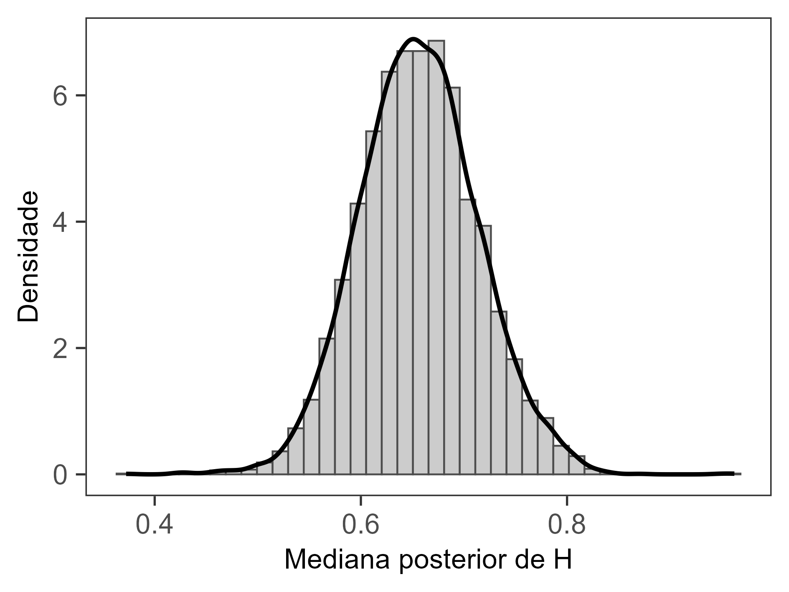
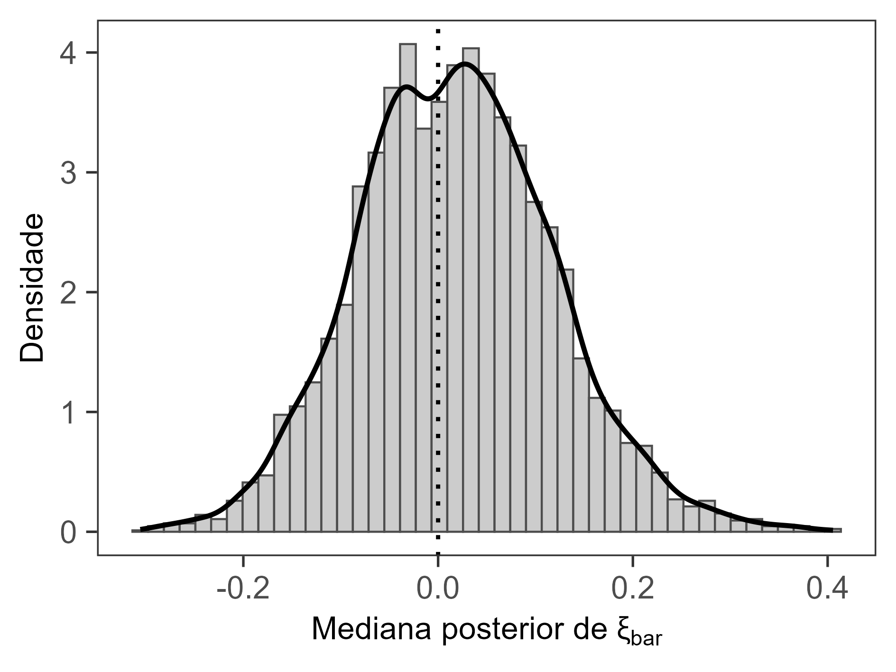
A distribuição espacial de \(H\) (Figura 4.41) apresentou diferenças regionais, com valores interpolados superiores a 0,72 em áreas do extremo Sul do Brasil. Estimativas intermediárias, sobretudo entre 0,60 e 0,68, abrangeram extensas áreas do território nacional, indicando variações espaciais na taxa de redução dos parâmetros GEV com a duração.
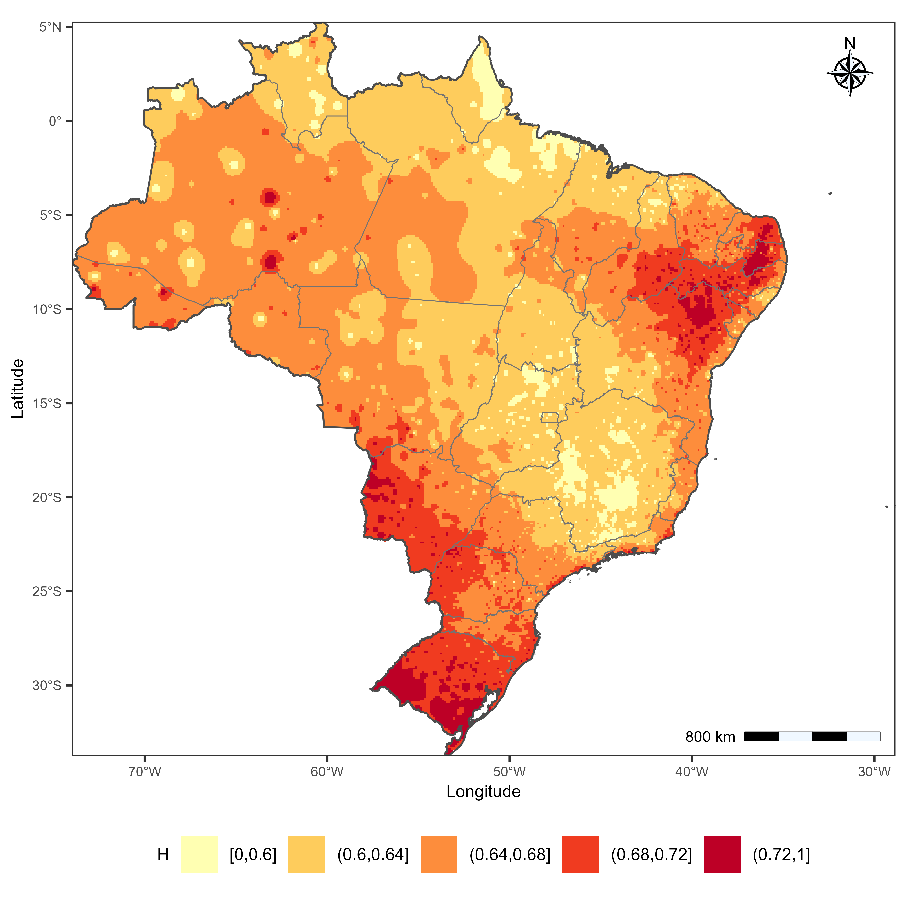
O parâmetro central de forma \(\bar{\xi}\) também apresentou heterogeneidade espacial (Figura 4.42), com estimativas positivas, negativas e próximas de zero distribuídas por diferentes regiões do país. Valores positivos entre aproximadamente 0,05 e 0,15 foram identificados em porções do Sul, Sudeste e Nordeste, enquanto estimativas negativas ocorreram de maneira descontínua no território nacional.
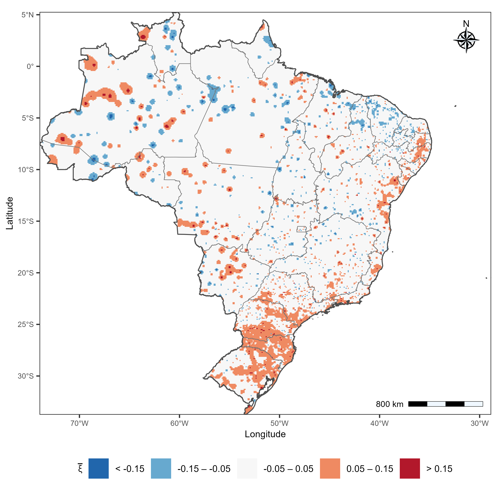
Os padrões espaciais apresentados foram obtidos por interpolação das medianas posteriores individuais, utilizando ponderação pelo inverso da distância (IDW). Portanto, constituem representações exploratórias da variabilidade espacial dos parâmetros, sem incorporar explicitamente a incerteza posterior ou a dependência espacial entre as estações.
Os demais parâmetros estruturais apresentaram medianas nacionais de 1,06 para \(\alpha\) e −0,199 para \(\beta\). As variâncias hierárquicas tiveram medianas de 0,00553 para \(\tau_{\mu}^{2}\), 0,00978 para \(\tau_{\sigma}^{2}\) e 0,00924 para \(\tau_{\xi}^{2}\), caracterizando a dispersão dos parâmetros específicos das diferentes durações em torno das relações hierárquicas estabelecidas.
4.6.1.3 Parâmetros da distribuição GEV
Os parâmetros da distribuição GEV foram analisados para as oito durações consideradas, a partir das medianas posteriores estimadas nas 5.258 estações. A Figura 4.43 apresenta a variação dos parâmetros de localização (\(\mu\)), escala (\(\sigma\)) e forma (\(\xi\)) com a duração, incluindo medidas da dispersão espacial entre estações.
O parâmetro de localização \(\mu\) apresentou redução sistemática com o aumento da duração. Sua mediana nacional diminuiu de 2,94 mm/h em 1 dia para 1,94 mm/h em 2 dias, 1,51 mm/h em 3 dias e 0,734 mm/h em 10 dias. O intervalo interquartil também apresentou redução em termos absolutos, passando de 2,66–3,24 mm/h para 0,655–0,822 mm/h entre as durações de 1 e 10 dias.
Comportamento semelhante foi observado para o parâmetro de escala \(\sigma\), cuja mediana nacional diminuiu de 0,831 mm/h em 1 dia para 0,546 mm/h em 2 dias e 0,202 mm/h em 10 dias. O intervalo interquartil passou de 0,737–0,950 mm/h para 0,179–0,233 mm/h entre as durações extremas. A redução simultânea de \(\mu\) e \(\sigma\) é coerente com a estrutura de invariância de escala adotada, indicando menores intensidades características e menor escala de dispersão dos máximos anuais nas durações mais longas.
Em contraste, o parâmetro de forma \(\xi\) apresentou variações relativamente pequenas em sua tendência central ao longo das durações. As medianas nacionais permaneceram próximas de zero, variando de 0,0218 em 1 dia a 0,00496 em 10 dias. Entretanto, os intervalos interquartis abrangeram valores positivos e negativos em todas as durações, sendo de −0,0487 a 0,0930 para 1 dia, evidenciando heterogeneidade entre estações.
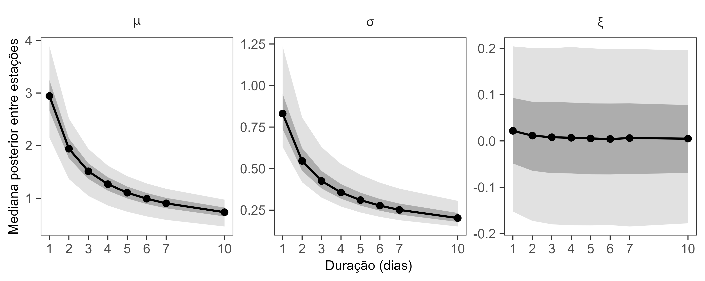
A relativa estabilidade das medianas nacionais de \(\xi\) merece destaque, pois a formulação local (non-pooled) permite que o parâmetro de forma varie entre durações. Esse comportamento é compatível com a hipótese de invariância aproximada de \(\xi\), examinada anteriormente na comparação dos modelos do Rio Grande do Sul, na qual a estrutura com parâmetro de forma específico por estação apresentou o melhor desempenho preditivo.
Entretanto, a estabilidade observada na síntese nacional não demonstra necessariamente a constância de \(\xi\) em cada estação, uma vez que a regularização hierárquica também contribui para aproximar as estimativas entre durações. Além disso, os intervalos apresentados representam a dispersão espacial das medianas posteriores, e não intervalos de credibilidade das diferenças entre parâmetros de uma mesma estação. Assim, os resultados fornecem uma indicação descritiva favorável à investigação dessa hipótese, sem constituir sua confirmação estatística.
4.6.2 Curvas intensidade–duração–frequência (IDF)
As curvas intensidade–duração–frequência (IDF) estimadas pelo modelo bayesiano local (non-pooled) foram examinadas para as mesmas seis estações pluviométricas selecionadas para a avaliação dos resultados do modelo semi-Bayesiano: Ceará (739006), Minas Gerais (1842004), Pernambuco (735041), Paraná (2549006), Rio Grande do Norte (535011) e Santa Catarina (2849002). As estações apresentam séries de máximos anuais com comprimentos entre 77 e 124 anos, incluindo registros relativamente longos e diferentes características das caudas estimadas. A seleção contempla estações com parâmetros de forma predominantemente negativos (CE e MG), positivos (PE, RN e SC) e próximos de zero (PR), permitindo examinar comportamentos distintos das relações IDF sem pressupor representatividade estatística do conjunto nacional de estações.
As relações obtidas apresentaram redução das intensidades com o aumento da duração, entre 1 e 10 dias, e elevação dos quantis com o período de retorno. As diferenças entre as curvas foram particularmente evidentes nas estações de Pernambuco e Rio Grande do Norte, cujas medianas das estimativas de \(\xi_d\) entre durações foram de 0,369 e 0,180, respectivamente. Nessas estações, os quantis associados aos maiores períodos de retorno apresentaram maior afastamento, compatível com a influência de parâmetros de forma positivos sobre a cauda superior da distribuição GEV. Em contrapartida, Ceará e Minas Gerais, com medianas de \(\xi_d\) de −0,230 e −0,252, apresentaram menor separação relativa entre as curvas. No Paraná, as estimativas permaneceram próximas de zero, enquanto Santa Catarina apresentou valores positivos moderados.
Embora tenham sido observadas diferenças expressivas de \(\xi_d\) entre as estações, suas estimativas apresentaram relativa estabilidade ao longo das durações analisadas. Em cinco dos seis postos, as medianas posteriores mantiveram o mesmo sinal, enquanto no Paraná oscilaram próximas de zero. Esse comportamento é compatível com a regularização hierárquica adotada, embora não constitua, isoladamente, evidência de constância do parâmetro de forma entre durações.
A análise da incerteza posterior para os períodos de retorno de 2, 10, 50 e 200 anos (Figura 4.44) evidenciou, de modo geral, maior amplitude absoluta dos intervalos de credibilidade pontuais de 95% nos períodos de retorno mais elevados. Esse comportamento foi particularmente evidente nas estações de Pernambuco e Rio Grande do Norte, caracterizadas por estimativas positivas do parâmetro de forma, nas quais os quantis de 200 anos apresentaram maior afastamento entre as estimativas centrais e faixas de incerteza mais amplas. Em contraste, Ceará e Minas Gerais, com parâmetros de forma negativos, apresentaram menor separação entre os quantis de retorno elevados e intervalos de credibilidade relativamente mais estreitos em termos absolutos.
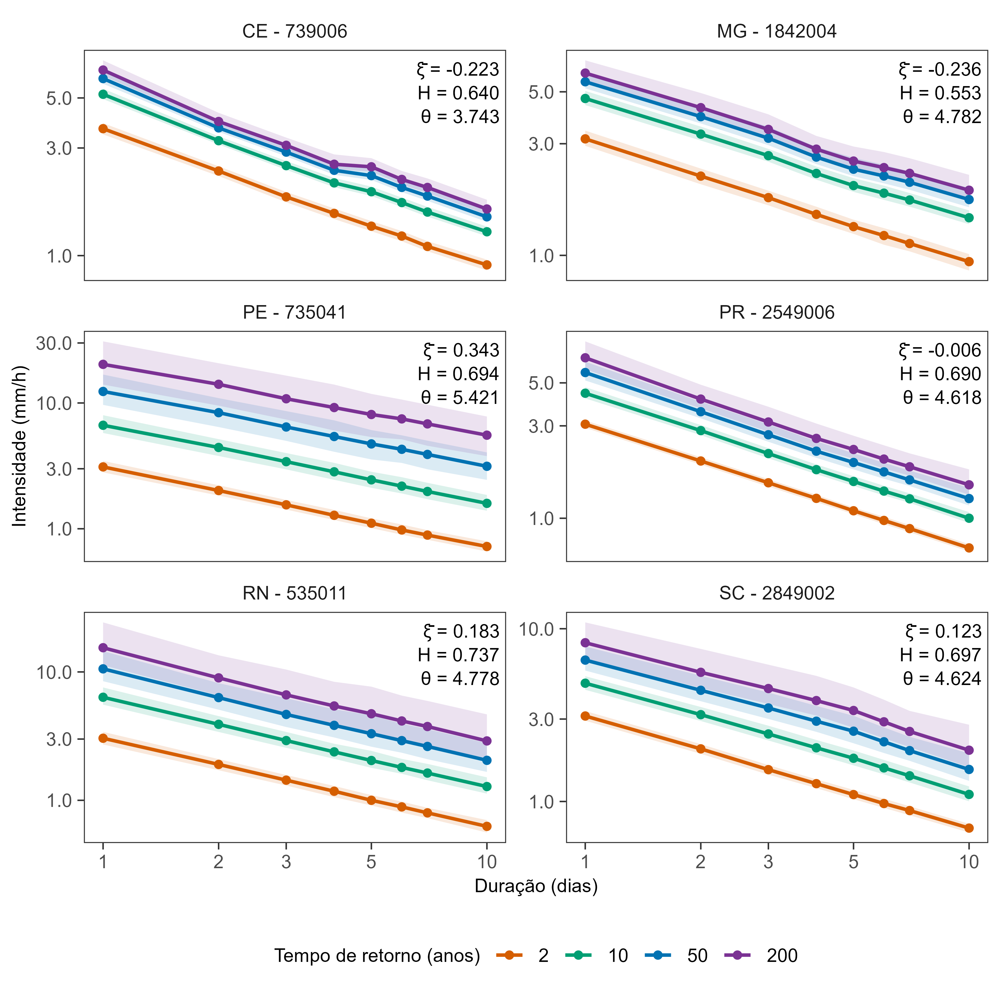
Comportamento semelhante foi observado para os períodos de retorno de 5, 25 e 100 anos (Figura 4.45). As estimativas centrais mantiveram a redução das intensidades com o aumento da duração, enquanto os intervalos de credibilidade evidenciaram diferenças entre as estações. Pernambuco apresentou a maior separação entre as curvas e faixas de incerteza mais amplas, seguida por Rio Grande do Norte e Santa Catarina em diferentes durações. Por outro lado, Ceará, Minas Gerais e Paraná apresentaram menor afastamento entre os quantis estimados e faixas de credibilidade mais contidas. Esses resultados são compatíveis com a influência do parâmetro de forma sobre as estimativas de eventos raros, embora a incerteza posterior dependa conjuntamente dos parâmetros da distribuição GEV.
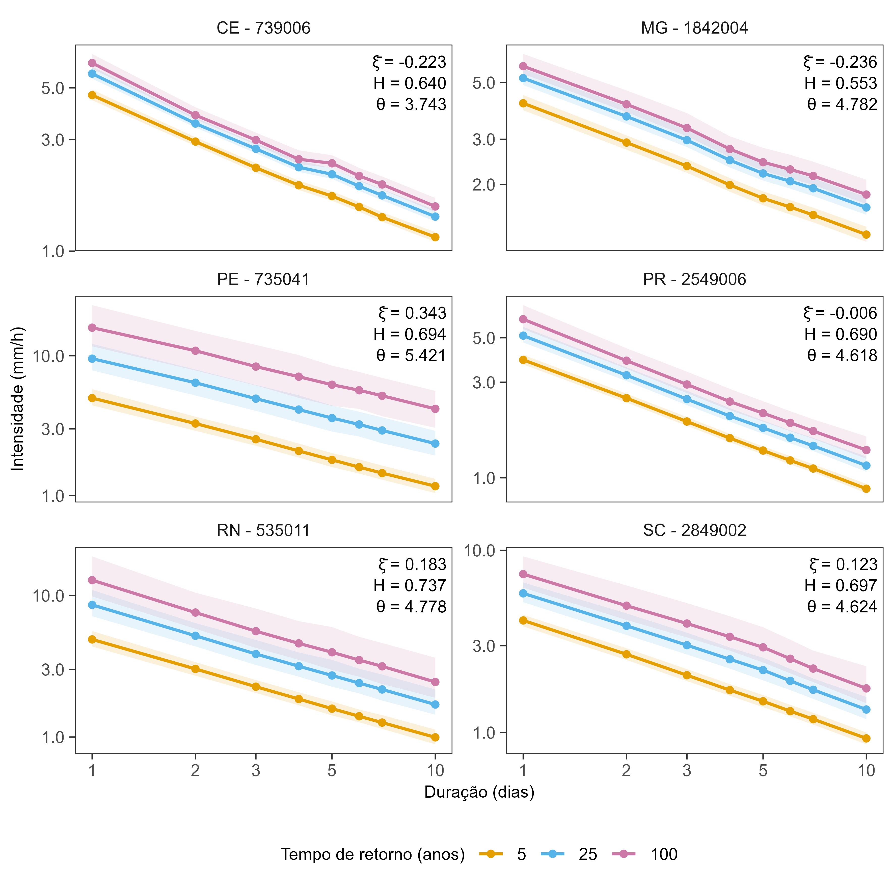
Em conjunto, os resultados demonstram que o modelo bayesiano local (non-pooled) permitiu representar diferentes comportamentos das relações IDF entre as estações analisadas, incluindo diferenças na intensidade dos extremos e na sensibilidade dos quantis aos períodos de retorno. A variabilidade das estimativas está associada às características locais dos parâmetros GEV, particularmente ao parâmetro de forma, cuja influência se torna mais relevante para períodos de retorno elevados. Contudo, as estimativas de eventos raros, especialmente para 200 anos, devem ser interpretadas com cautela, uma vez que envolvem extrapolações consideráveis em relação à extensão das séries observacionais.
4.7 Aplicação do modelo semi-bayesiano às séries subdiárias
Nessa abordagem semi-bayesiana, as intensidades de precipitação máxima anuais, agora em escala subdiária, foram ajustadas com o modelo d-GEV, novamente considerando a distribuição a priori de Martins e Stedinger (2000). O conjunto, obtido após um tratamento de qualidade (8 anos e 20% de falhas anuais) aplicado à base UNIPLU-BR, reúne 1.973 postos pluviográficos distribuídos ao longo do território nacional.
Conforme estabelecido na Meta 7, pelo menos 24 durações de precipitação foram selecionadas: de 10 minutos até 24 h. Essa faixa completa, porém, não está presente em todos os postos, visto que a duração “base” de registro das estações difere. As lâminas de registro disponíveis são de 10, 15, 30 e 60 minutos, portanto os totais agregados são função desses valores. Porém, a partir de 1 h, todas as estações possuem a mesma quantidade de durações agregadas. Os máximos anuais foram selecionados, novamente, conforme o ano hidrológico definido estimados para cada estação individualmente.
4.7.1 Parâmetros do modelo d-GEV
O ajuste se dá da mesma maneira como nas aplicações anteriores da abordagem semi-bayesiana com o modelo d-GEV. As Figuras 4.46, 4.47 e 4.48 apresentam os resultados espacializados a partir das estimativas locais de \(\xi\), \(H\) e \(\theta\).
O parâmetro de forma Figura 4.46, assim como nos resultados anteriores, apresenta elevada variabilidade espacial — entre -0,46 e 0,49. Nota-se essa presença de valores próximos, mas não superiores que os limites plausíveis -0,50 e 0,50 para o parâmetro de forma. Visualmente, há uma presença superior de regiões em que caudas pesadas foram ajustadas. Em comparação com a Figura 4.35, partes da região Norte, Nordeste e Centro-Oeste indicam chuvas com comportamento de cauda pesada. Ainda assim, o comportamento de cauda limitada segue presente nos resultados; assim como um comportamento aproximado de cauda leve (em cinza). Novamente, é importante reforçar que o comprimento mínimo exigido para as séries históricas de 8 anos (dominante no conjunto) é insuficiente para obter estimativas confiáveis do parâmetro de forma baseado unicamente em dados observacionais. A distribuição a priori de Martins e Stedinger (2000) atribui conhecimento prévio de que o comportamento médio deverá ser de cauda pesada, porém esse não elimina a ocorrência de caudas limitadas.
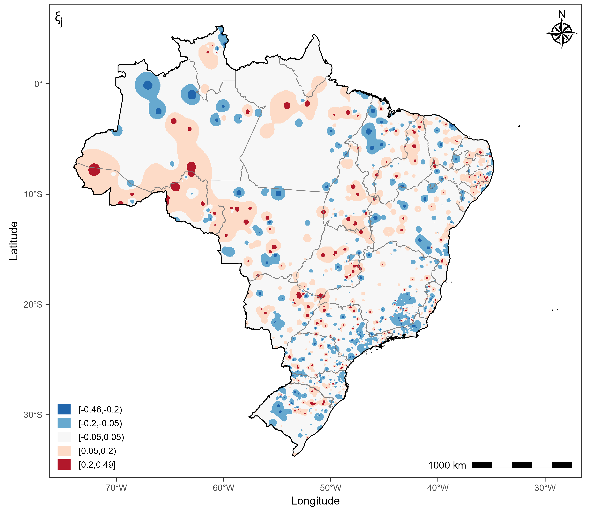
Pela formulação do modelo d-GEV na Equação 4.15, o expoente de escala \(H\) é único para a faixa de durações \(d<\) 24 h. O comportamento da estrutura de invariância de escala, apresentado na (seq-res-inv-escala?), aponta para uma possível divergência nos regimes de invariância quando \(d<\) 1 h. Pela predominância de durações entre 1–24 h, o espera-se que o comportamento de \(\hat H\) se assemelhe ao dessa faixa. A aplicação bayesiana completa adiante apresenta um procedimento em que foi feita uma quebra, e estimativas distintas de \(H\) e \(\theta\) foram obtidas para \(d\le\) 1 h e para \(d\ge\) 1 h. No geral, valores entre 0,4 e 0,75 se concentram na face leste do país e na região Sul; enquanto valores superiores, se aproximando a \(H \approx 1\) estão presentes na região Sudeste, Centro-Oeste, Norte e parte da região Nordeste.
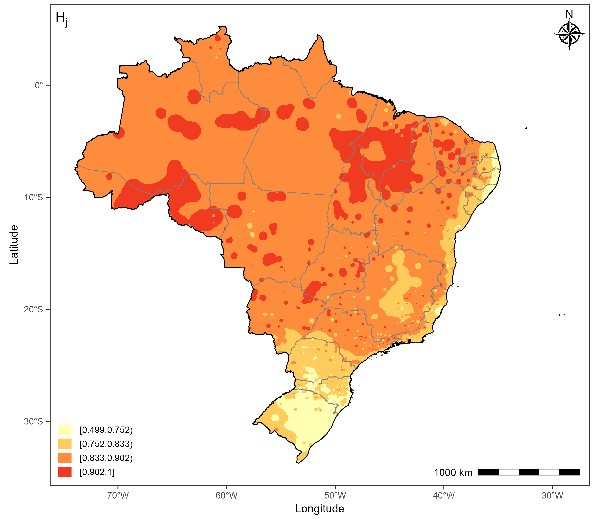
Apesar da possível deficiência na representação de durações sub-horárias, a quebra de inclinação é, por sua vez, balanceada pelo ajuste do parâmetro de deslocamento \(\theta\). Os valores estimados aparentam, novamente, estar correlacionados às estimativas de \(H\), inferiores na região Sul e em parte do Nordeste.
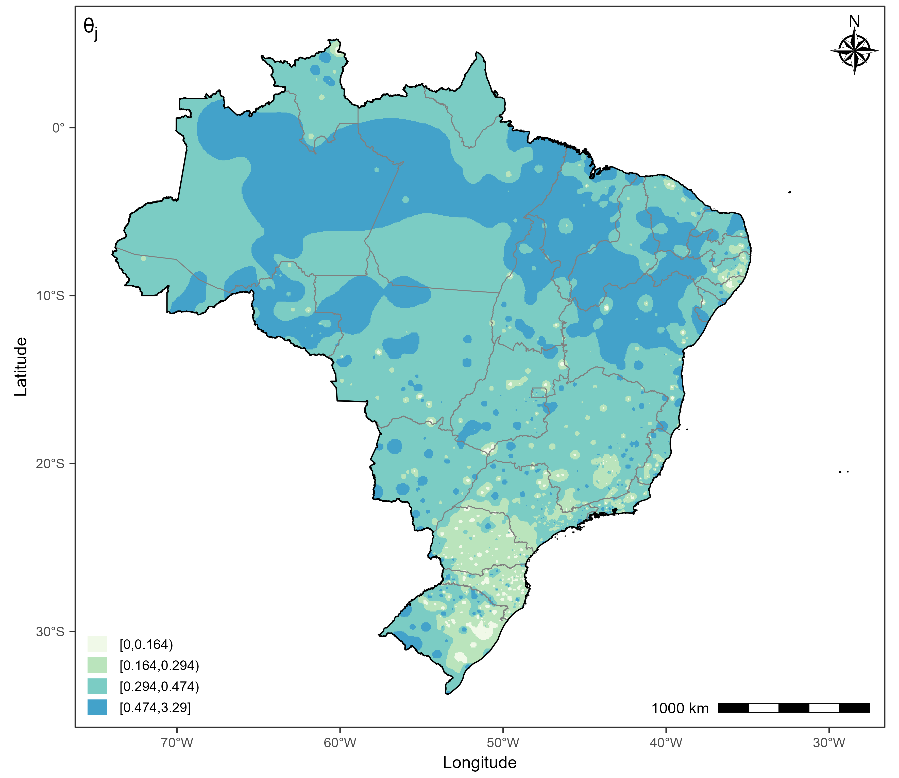
4.7.2 Curvas intensidade-duração-frequência (IDF)
Para avaliação dos quantis estimados, foram selecionados seis pluviógrafos: SBAR (SE), SBCF (MG), SBRP (SP), 420800501A (SC), 293330704A (BA) e 314610703A (MG). Assim como na avaliação das curvas para durações diárias, essas estações representam diferentes comportamentos da cauda superior das distribuições ajustadas e apresentam séries de comprimentos entre 11 e 42 anos.
São apresentadas nas Figuras 4.49 e 4.50 as curvas para os mesmos tempos de retorno definidos nas seções anteriores: de 2 a 200 anos. Os mesmos padrões são observados com relação ao efeito do valor de \(\hat\xi\): caudas pesadas resultam em incertezas mais elevadas e curvas mais espaçadas para tempos de retorno maiores;, enquanto caudas limitadas exibem um comportamento contrário. Nesse último caso, as estações de SP e BA chamam a atenção pelo fato de que as curvas referentes às estimativas pontuais estarem praticamente sobrepostas para os tempos de retorno de 50 e 100 anos Figura 4.49 — apontando para o risco em estimativas de cauda limitada. Mesmo em séries com 37 anos de dados e com informação a priori atribuindo um comportamento médio de cauda pesada, caudas limitadas ainda podem ser obtidas com o procedimento semi-bayesiano sem que seja limitado \(\xi\ge0\).
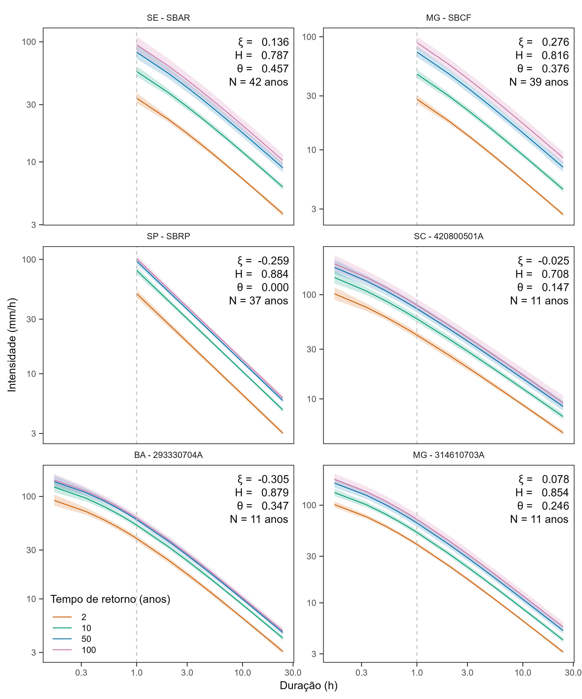
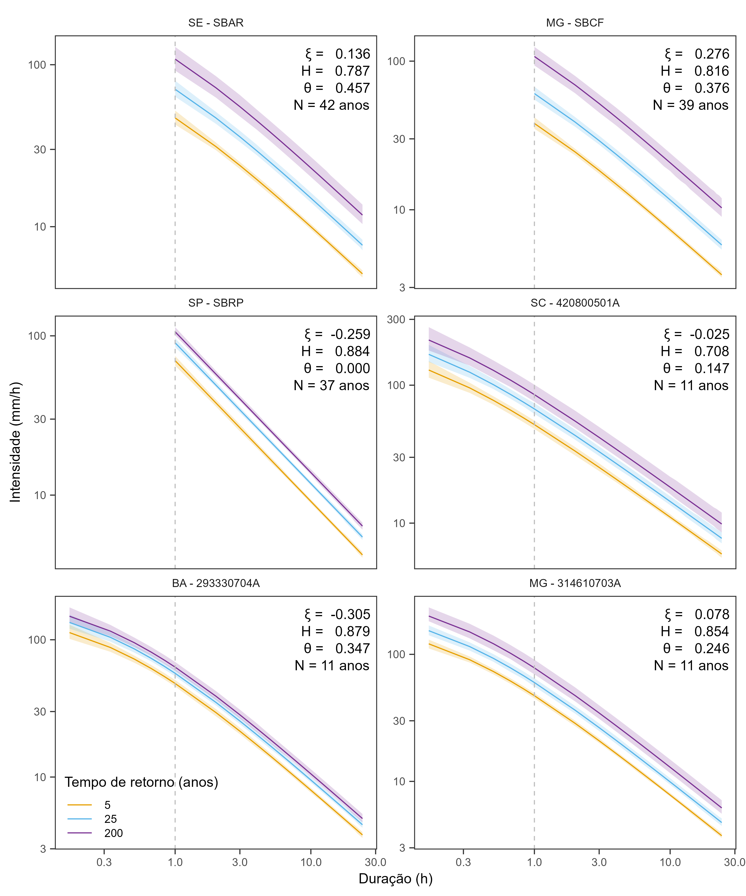
4.7.3 Aplicação nacional do modelo bayesiano às séries subdiárias
A modelagem das precipitações extremas em escala subdiária foi realizada por meio da abordagem hierárquica bayesiana local (non-pooled), apresentada anteriormente no estudo de caso do Rio Grande do Sul. A formulação manteve a distribuição GEV, as distribuições a priori e a regularização hierárquica dos parâmetros entre durações de uma mesma estação, sem compartilhamento espacial de informações. Nesta etapa, entretanto, a relação de invariância de escala foi adaptada para representar separadamente o comportamento das precipitações em durações sub-horárias e horárias.
Foram utilizadas as séries de máximos anuais provenientes da base UNIPLU, após os procedimentos de controle de qualidade e definição do ano hidrológico descritos nas seções anteriores. A seleção considerou estações com pelo menos oito anos válidos em todas as 24 durações horárias, de 1 a 24 horas, e em pelo menos duas durações sub-horárias entre 10, 15, 20, 30, 40, 45 e 50 minutos.
Para representar as diferenças entre as escalas temporais, foi adotada uma relação de invariância de escala por partes, estabelecendo-se uma duração de transição de 1 hora (\(d_b=1\) h) e mantendo-se a duração de referência de 24 horas (\(d_0=24\) h). A função de escala foi definida conforme a Equação 4.45:
\[ \eta_j(d)= \begin{cases} -H_{L,j}\log\left(\dfrac{d+\theta_{L,j}}{d_0+\theta_{L,j}}\right), & d\geq d_b,\\[10pt] \eta_j(d_b)-H_{C,j}\log\left(\dfrac{d+\theta_{C,j}}{d_b+\theta_{C,j}}\right), & d<d_b, \end{cases} \tag{4.45}\]
em que \(j\) identifica a estação pluviométrica e \(d\) representa a duração da precipitação. Os parâmetros \(H_{L,j}\) e \(\theta_{L,j}\) correspondem, respectivamente, ao expoente de escala e ao deslocamento temporal das durações iguais ou superiores a 1 hora, enquanto \(H_{C,j}\) e \(\theta_{C,j}\) representam os parâmetros das durações sub-horárias. O termo \(\eta_j(d_b)\) é calculado a partir do ramo horário, assegurando a continuidade da função no ponto de transição. Todas as durações e os parâmetros de deslocamento temporal foram expressos em horas.
As médias das distribuições hierárquicas dos logaritmos dos parâmetros de localização e escala da GEV passaram a ser definidas por \(\alpha_j+\eta_j(d)\) e \(\beta_j+\eta_j(d)\), respectivamente, preservando as variâncias hierárquicas \(\tau_{\mu,j}^{2}\) e \(\tau_{\sigma,j}^{2}\). Assim, ambos os parâmetros permanecem relacionados à duração por uma função comum, mas com flexibilidade para apresentar diferentes taxas de variação nos intervalos sub-horário e horário.
Os novos parâmetros estruturais receberam as mesmas famílias de distribuições a priori utilizadas anteriormente, com \(H_{L,j},H_{C,j}\sim\operatorname{Beta}(1,1)\) e \(\theta_{L,j},\theta_{C,j}\sim\operatorname{Uniforme}(0,10)\). O parâmetro de forma \(\xi_{j,d}\) permaneceu específico por duração, com suporte entre −0,5 e 0,5 e regularização em torno de um parâmetro central \(\bar{\xi}_j\), mantendo-se as demais distribuições a priori e hiperpriori da formulação original.
A inferência foi realizada individualmente por estação, utilizando o algoritmo NUTS implementado em Stan. Foram executadas cinco cadeias de 20.000 iterações, com 10.000 destinadas ao aquecimento e fator de espaçamento (thinning) de 50, totalizando nominalmente 1.000 amostras posteriores retidas por estação. Os parâmetros de controle do amostrador foram definidos como adapt_delta = 0.999 e max_treedepth = 17.
A formulação por partes preservou a estrutura probabilística utilizada nas análises anteriores, introduzindo maior flexibilidade na representação da relação entre intensidade e duração. Essa adaptação permitiu considerar diferentes comportamentos de escala abaixo e acima de 1 hora, mantendo a continuidade da função e a estimação conjunta dos parâmetros GEV para todas as durações disponíveis em cada estação.
4.7.3.1 Aplicação nacional do modelo bayesiano às séries subdiárias
4.7.3.1.1 Diagnósticos de convergência
A aplicação nacional do modelo hierárquico bayesiano às séries subdiárias compreendeu 1.973 estações pluviométricas. Os diagnósticos de convergência apresentaram valores satisfatórios de \(\widehat R\), com mediana de 1,01, percentil de 95% também de 1,01 e valor máximo de 1,02. Nenhuma estação apresentou \(\widehat R_{\max}>1{,}05\).
Quanto às transições divergentes durante a amostragem MCMC, 1.586 estações (80,4%) não apresentaram ocorrências, enquanto 387 (19,6%) registraram pelo menos uma divergência. A distribuição espacial desses resultados (Figura 4.51) mostrou ocorrências em diferentes regiões do território brasileiro, com maior concentração de estações com divergências nas regiões Sul e Sudeste, especialmente em áreas com maior densidade de postos de monitoramento.
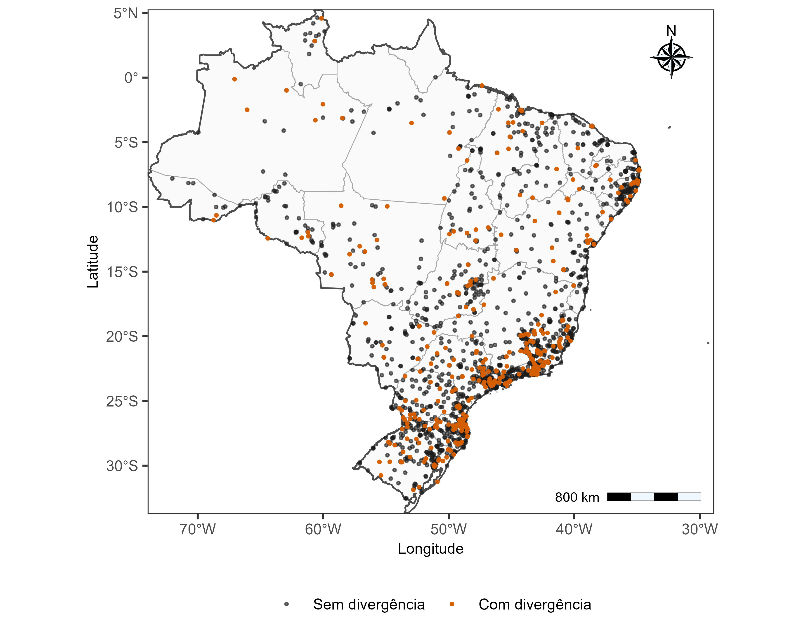
Embora os valores de \(\widehat R\) indiquem concordância entre as cadeias, a presença de divergências em 19,6% das estações aponta possíveis dificuldades na exploração de determinadas regiões das distribuições posteriores.
4.7.3.1.2 Parâmetros estruturais e comportamento da invariância de escala
A aplicação nacional do modelo hierárquico bayesiano permitiu estimar os parâmetros estruturais das relações de escala considerando separadamente as durações sub-horárias (\(d<1\) h) e as durações iguais ou superiores a 1 hora (\(d\geq1\) h). Os parâmetros do intervalo horário foram estimados em 1.973 estações, enquanto os parâmetros sub-horários estavam disponíveis para 1.294 estações. A distribuição das medianas posteriores dos expoentes de escala \(H\) evidenciou diferenças entre os dois intervalos temporais (Figura 4.52). Para as durações horárias, \(H_L\) apresentou mediana de 0,857, enquanto nas durações sub-horárias \(H_C\) apresentou mediana de 0,818.
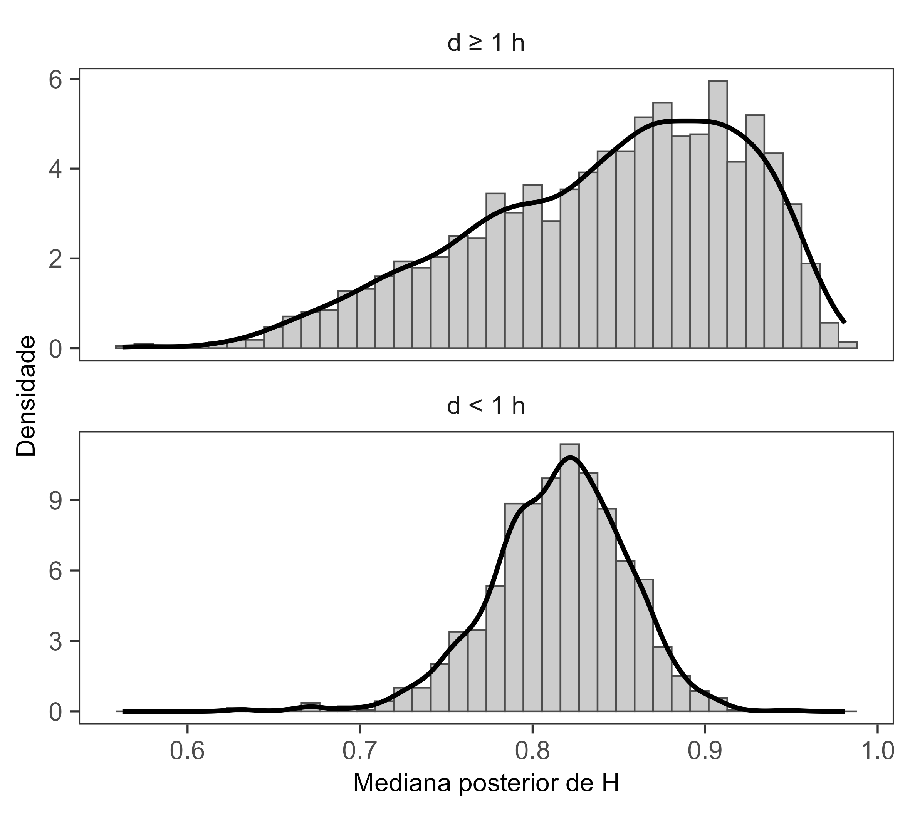
As distribuições indicaram maior dispersão das estimativas de \(H_L\) entre estações, enquanto os valores de \(H_C\) apresentaram maior concentração em torno da mediana. Esse comportamento sugere maior heterogeneidade dos expoentes de escala no intervalo horário. Entretanto, como os conjuntos apresentam diferentes números de estações, a comparação das distribuições nacionais deve ser interpretada com cautela, pois parte das diferenças pode estar associada à composição das amostras.
O parâmetro de deslocamento temporal \(\theta\) também apresentou diferenças entre os intervalos temporais (Figura 4.53). Para as durações horárias, \(\theta_L\) apresentou mediana de 0,367 h, enquanto nas durações sub-horárias \(\theta_C\) apresentou mediana de 0,296 h. As distribuições mostraram maior dispersão dos valores de \(\theta_L\), incluindo uma cauda superior mais extensa, enquanto as estimativas de \(\theta_C\) permaneceram relativamente mais concentradas. Em conjunto, as distribuições de \(H\) e \(\theta\) evidenciaram diferenças no comportamento dos parâmetros estruturais entre os dois intervalos temporais.
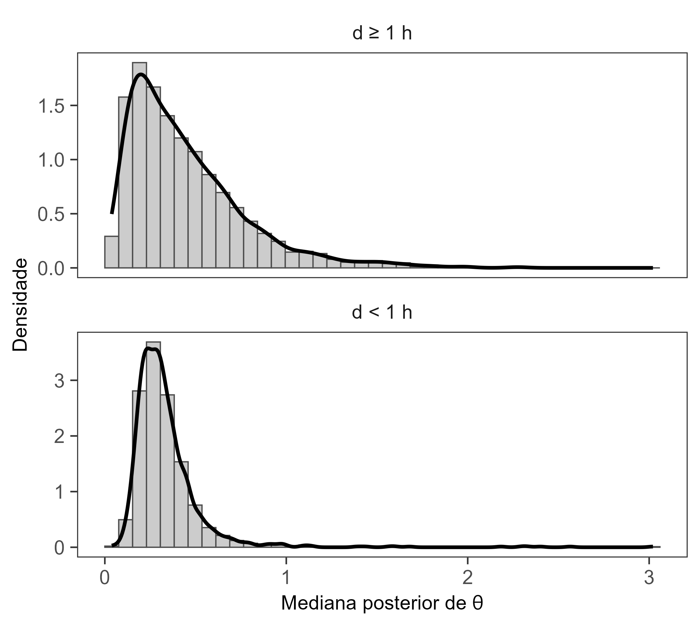
4.7.3.1.3 Distribuição espacial dos parâmetros estruturais
A distribuição espacial das medianas posteriores dos expoentes de escala apresentou diferenças entre os dois intervalos temporais (Figura 4.54 e Figura 4.55). Para as durações sub-horárias, predominaram valores de \(H\) entre aproximadamente 0,75 e 0,86 em grande parte do território nacional. Estimativas relativamente mais elevadas concentraram-se na Região Sul e em áreas localizadas do Sudeste, enquanto valores menores foram identificados em porções da Região Norte e em alguns setores do Nordeste e do Centro-Oeste.
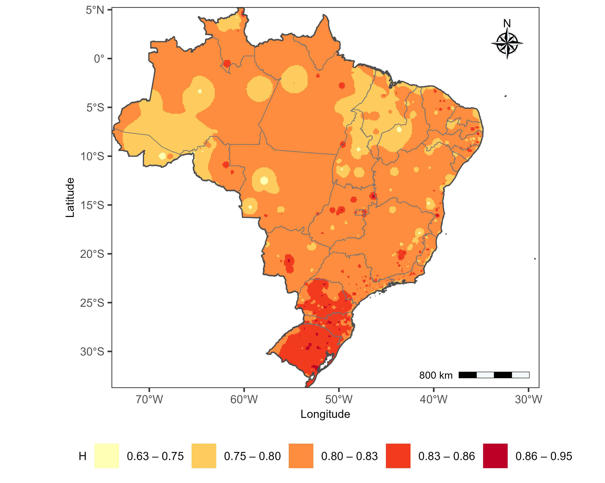
Para as durações iguais ou superiores a 1 hora, os valores de \(H\) apresentaram distribuição espacial distinta (Figura 4.55), com estimativas relativamente elevadas em extensas áreas das regiões Norte e Centro-Oeste e em setores do Nordeste. Em contrapartida, valores menores ocorreram em grande parte da Região Sul, além de áreas do Sudeste e do litoral oriental do país. Dessa forma, a diferença mais evidente entre os mapas está na mudança da configuração espacial dos expoentes estimados, especialmente nas regiões meridionais, que apresentaram valores relativamente elevados no intervalo sub-horário e menores no intervalo horário.
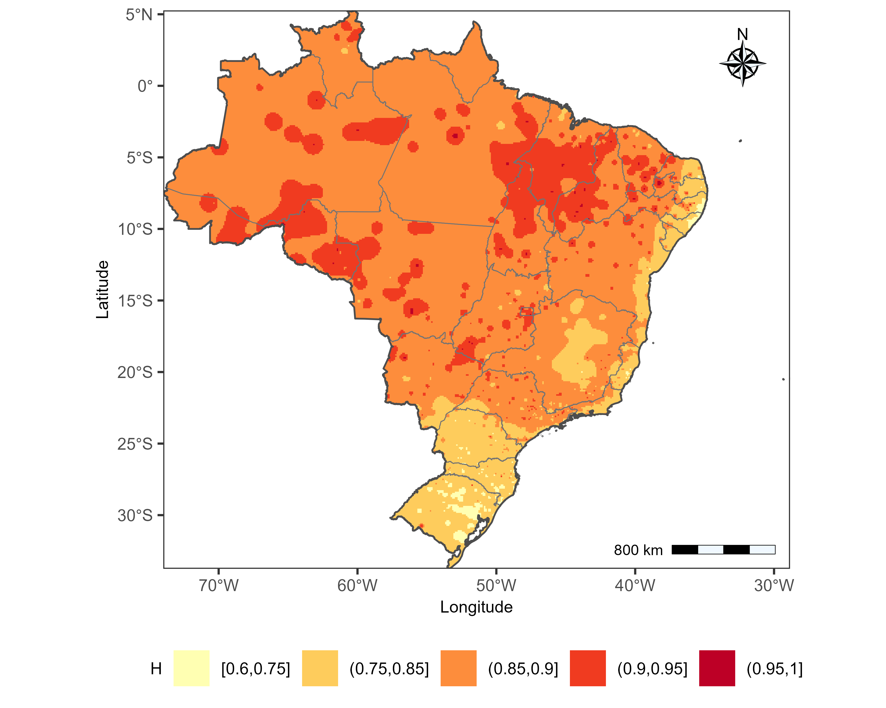
Essas diferenças indicam que a relação entre os parâmetros GEV e a duração não apresenta necessariamente o mesmo comportamento nos intervalos sub-horário e horário em todas as regiões brasileiras. Entretanto, os mapas representam uma interpolação exploratória das medianas posteriores estimadas nas estações, não incorporando diretamente a incerteza dessas estimativas nem uma estrutura de dependência espacial probabilística. Assim, os padrões identificados são uma caracterização regional das estimativas obtidas.
A distribuição espacial do parâmetro de deslocamento temporal \(\theta\) também apresentou heterogeneidade regional (Figura 4.56 e Figura 4.57). Para as durações sub-horárias, predominaram valores intermediários em grande parte do país, com estimativas relativamente mais elevadas em setores das regiões Norte e Centro-Oeste. Valores menores foram observados em áreas da Região Sul, do Sudeste e em porções do Nordeste, embora tenham ocorrido variações locais.
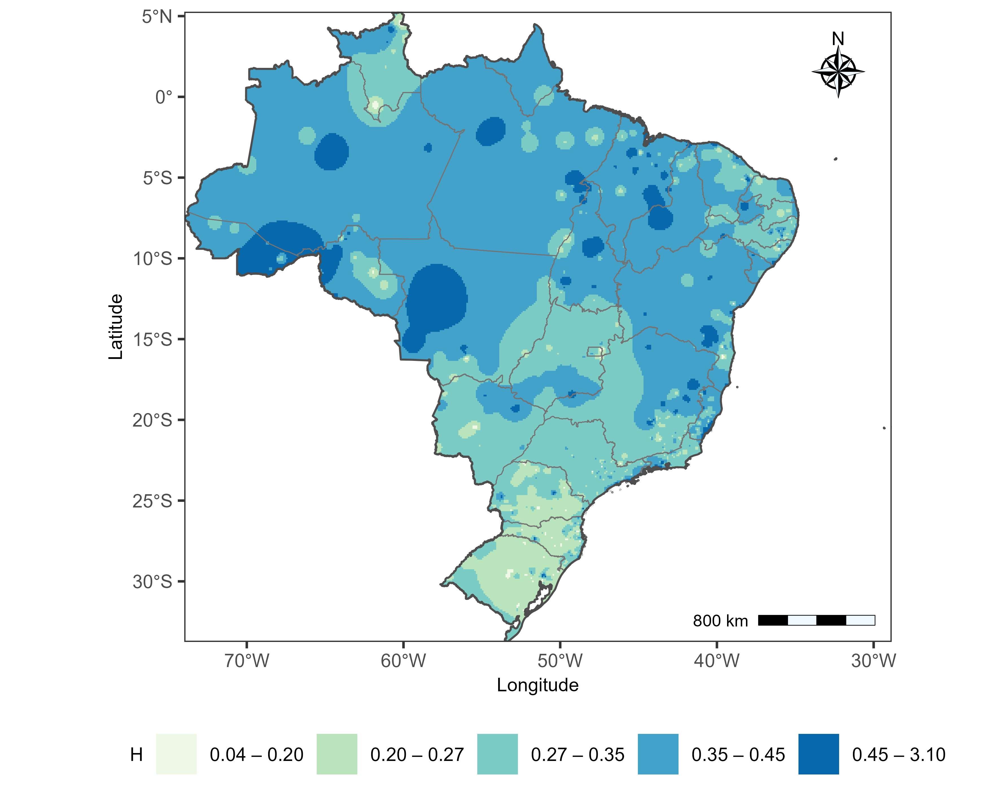
Nas durações iguais ou superiores a 1 hora, a distribuição de \(\theta\) apresentou maior heterogeneidade espacial, com áreas de valores relativamente elevados nas regiões Norte e Nordeste e em setores localizados do Centro-Oeste e do Sul (Figura 4.57). Em comparação com o intervalo sub-horário, observou-se maior alternância entre classes de valores, especialmente em áreas com elevada variabilidade local das estimativas. Esse comportamento é compatível com a maior dispersão identificada na distribuição nacional das medianas posteriores de \(\theta\) para o intervalo horário.
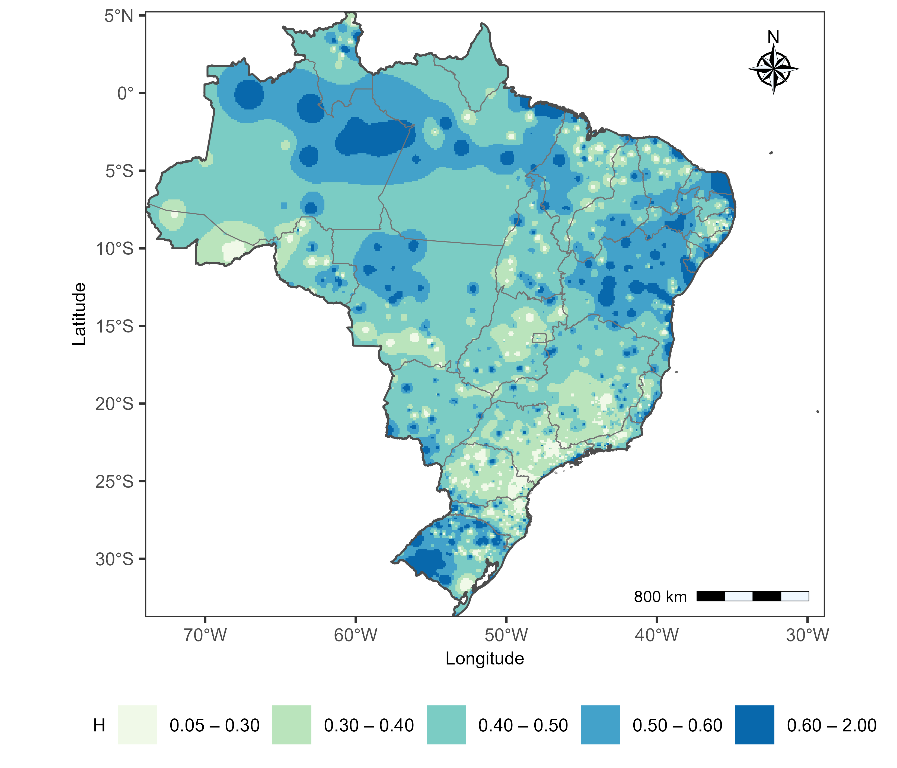
4.7.3.2 Parâmetro de forma da distribuição GEV
A distribuição das medianas posteriores do parâmetro central de forma \(\bar{\xi}\) apresentou estimativas positivas e negativas, com concentração predominante em torno de zero (Figura 4.58). Entre as 1.973 estações analisadas, 788 (39,9%) apresentaram medianas inferiores a −0,05, 828 (42,0%) superiores a 0,05 e 357 (18,1%) foram classificadas como próximas de zero, considerando o intervalo de −0,05 a 0,05. As distribuições dos conjuntos identificados como 10 min–24 h e 1–24 h apresentaram ampla dispersão, evidenciando heterogeneidade nas estimativas do parâmetro central de forma entre as estações.
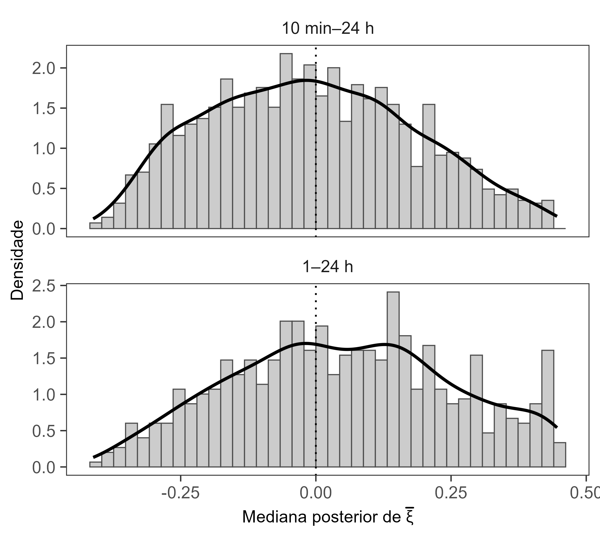
A análise dos intervalos de credibilidade de 95% reforçou essa heterogeneidade. Em 1.190 estações (60,3%), os intervalos não incluíram zero, sendo inteiramente negativos em 568 postos (28,8%) e inteiramente positivos em 622 (31,5%). Nas demais 783 estações (39,7%), os intervalos abrangeram zero, indicando maior incerteza quanto ao sinal do parâmetro central de forma. Esses resultados mostram que a alternância entre estimativas positivas e negativas não decorre exclusivamente de pequenas oscilações das medianas em torno de zero, uma vez que uma parcela expressiva das distribuições posteriores apresentou intervalos de credibilidade inteiramente situados em um dos lados desse valor.
A distribuição espacial das estimativas de \(\bar{\xi}\) também evidenciou heterogeneidade regional (Figura 4.59). Valores próximos de zero predominaram em extensas áreas do território brasileiro, enquanto estimativas positivas e negativas ocorreram de maneira descontínua. Valores positivos relativamente elevados foram identificados em setores da Região Norte e em localidades dispersas das regiões Nordeste e Centro-Oeste, ao passo que estimativas negativas foram observadas em diferentes porções do país. Diferentemente dos padrões mais amplos identificados para os parâmetros estruturais, a distribuição de \(\bar{\xi}\) apresentou maior fragmentação espacial, com alternância de sinais entre localidades relativamente próximas.

A heterogeneidade de \(\bar{\xi}\) é relevante para a estimação dos quantis associados a períodos de retorno elevados, uma vez que o parâmetro de forma influencia o comportamento da cauda superior da distribuição GEV. Entretanto, \(\bar{\xi}\) representa o parâmetro central da regularização hierárquica, enquanto os quantis de retorno são calculados a partir dos parâmetros específicos de cada duração, \(\xi_{j,d}\). Além disso, os padrões espaciais apresentados resultam da interpolação das medianas posteriores, sem incorporar explicitamente suas incertezas ou a dependência espacial entre estações. Dessa forma, os resultados evidenciam heterogeneidade nas estimativas do comportamento das caudas, mas não demonstram, isoladamente, diferenças estatisticamente sustentadas entre regiões.
4.7.3.2.1 Comportamento dos parâmetros GEV em estações selecionadas
A variação dos parâmetros de localização (\(\mu\)), escala (\(\sigma\)) e forma (\(\xi\)) da distribuição GEV em função da duração foi examinada em seis estações das regiões Nordeste, Sudeste e Sul do Brasil: SBAR (SE), SBCF (MG), SBRP (SP), 420800501A (SC), 293330704A (BA) e 314610703A (MG). Em todas as estações, os parâmetros \(\mu\) e \(\sigma\) apresentaram redução com o aumento da duração, com valores mais elevados nas menores durações e diminuição progressiva em direção a 24 horas (Figura 4.60). As magnitudes e as taxas de redução variaram entre os postos, destacando-se valores relativamente elevados na estação de Santa Catarina e diferenças na intensidade da redução entre as demais estações.
O parâmetro de forma \(\xi\) apresentou comportamentos distintos entre as estações. Na estação SBCF (MG), as medianas posteriores permaneceram positivas e apresentaram aumento discreto com a duração, enquanto na estação SBAR (SE) também predominaram valores positivos, com pequenas oscilações. Em contrapartida, as estações SBRP (SP) e 293330704A (BA) apresentaram estimativas negativas, com redução mais acentuada de \(\xi\) nas durações iniciais e aproximação de valores menos negativos nas durações mais longas, especialmente na estação da Bahia. Na estação 420800501A (SC), as estimativas permaneceram próximas de zero ao longo das durações, enquanto na estação 314610703A (MG) predominaram valores positivos, com aumento nas durações mais elevadas.
Os intervalos de credibilidade de 95% também evidenciaram diferenças entre os postos. Nas estações SBCF (MG) e SBRP (SP), os intervalos permaneceram, respectivamente, acima e abaixo de zero, indicando maior sustentação posterior para os sinais estimados do parâmetro de forma. Nas estações SBAR (SE), 420800501A (SC) e 314610703A (MG), os intervalos abrangeram zero em diferentes durações, evidenciando maior incerteza quanto ao sinal de \(\xi\). Assim, embora a regularização hierárquica tenha permitido relacionar as estimativas entre durações de uma mesma estação, os resultados mostram que o comportamento do parâmetro de forma não foi uniforme entre os postos, tanto em suas estimativas centrais quanto na incerteza posterior associada.
4.7.3.2.2 Curvas intensidade–duração–frequência (IDF)
As curvas intensidade–duração–frequência (IDF) estimadas pelo modelo hierárquico bayesiano nacional foram examinadas em seis estações brasileiras: SBAR (SE), SBCF (MG), SBRP (SP), 420800501A (SC), 293330704A (BA) e 314610703A (MG). As estações apresentam séries de máximos anuais com comprimentos entre 11 e 42 anos e diferentes características dos parâmetros estruturais e de forma da distribuição GEV. Nas estações SBAR (SE), SBCF (MG) e SBRP (SP), as curvas apresentadas compreendem durações de 1 a 24 horas, enquanto nas demais incluem durações sub-horárias, permitindo observar a transição entre as duas relações de escala adotadas na modelagem.
A análise das curvas para os períodos de retorno de 2, 10, 50 e 200 anos (Figura 4.61) mostrou redução das intensidades estimadas com o aumento da duração e elevação dos quantis com o período de retorno, conforme o comportamento esperado das relações IDF. Nas estações com registros sub-horários, as curvas apresentaram continuidade na duração de transição de 1 hora, embora com diferenças de inclinação entre os dois intervalos temporais. Essas diferenças foram particularmente evidentes nas estações 420800501A (SC) e 314610703A (MG), nas quais os expoentes de escala estimados para durações sub-horárias foram superiores aos correspondentes ao intervalo horário. Em contrapartida, na estação 293330704A (BA), o expoente horário foi ligeiramente superior ao sub-horário.
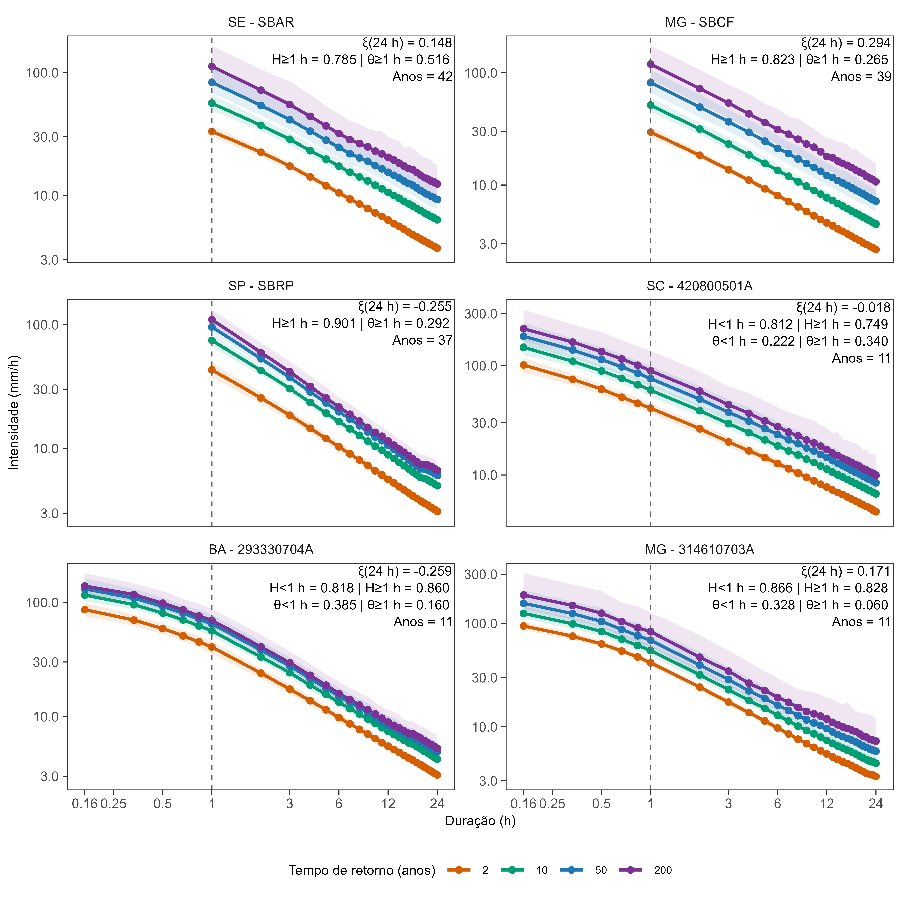
As magnitudes das intensidades apresentaram diferenças entre as estações, com valores relativamente elevados nas menores durações das estações 420800501A (SC) e 314610703A (MG). A separação entre as curvas associadas aos diferentes períodos de retorno também variou entre os postos. Nas estações SBAR (SE), SBCF (MG) e 314610703A (MG), com estimativas positivas de \(\xi\) para 24 horas, observou-se maior afastamento entre os quantis dos períodos de retorno elevados. Em contrapartida, na estação SBRP (SP), caracterizada por estimativa negativa de \(\xi\), as curvas apresentaram menor separação relativa nas durações mais longas, compatível com o comportamento de uma cauda superior limitada na distribuição GEV. Nas estações 420800501A (SC) e 293330704A (BA), as estimativas de \(\xi\) para 24 horas foram, respectivamente, próximas de zero e negativas, acompanhadas de diferenças menos acentuadas entre os quantis elevados.
Os intervalos de credibilidade de 95% evidenciaram diferenças na incerteza posterior entre as estações. As faixas apresentaram maior amplitude absoluta para os períodos de retorno mais elevados, especialmente nas menores durações. Nas estações com apenas 11 anos válidos, observaram-se faixas relativamente amplas em algumas combinações de duração e período de retorno, particularmente na estação 420800501A (SC). Entretanto, a incerteza não apresentou comportamento uniforme entre os postos, indicando que sua magnitude está associada não apenas ao comprimento das séries, mas também às características das distribuições posteriores dos parâmetros GEV.
Para os períodos de retorno de 5, 25 e 100 anos (Figura 4.62), observou-se comportamento semelhante, com redução das intensidades ao longo das durações e maior separação entre as curvas nas estações com estimativas positivas do parâmetro de forma. Nas estações SBAR (SE) e SBCF (MG), as relações apresentaram redução contínua das intensidades entre 1 e 24 horas, enquanto nas estações com durações sub-horárias foi possível observar a mudança de inclinação em torno de 1 hora, sem descontinuidade aparente nos quantis estimados.
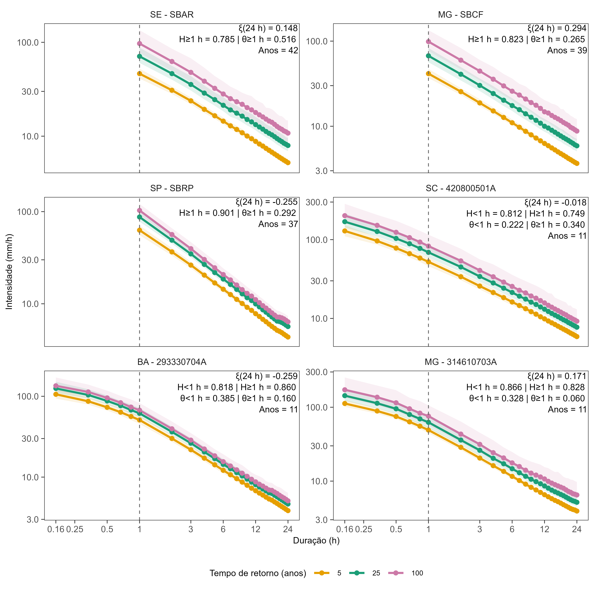
A comparação entre as estações também evidencia a importância do comprimento das séries na interpretação das estimativas de eventos raros. Enquanto SBAR (SE), SBCF (MG) e SBRP (SP) apresentaram, respectivamente, 42, 39 e 37 anos válidos, as estações 420800501A (SC), 293330704A (BA) e 314610703A (MG) contaram com apenas 11 anos. Dessa forma, os quantis associados a períodos de retorno de 100 e 200 anos envolvem extrapolações consideravelmente superiores à extensão das séries observacionais, sobretudo nas estações mais curtas. Embora os intervalos de credibilidade representem a incerteza posterior dos quantis sob o modelo ajustado, eles não eliminam as limitações associadas à extrapolação nem contemplam necessariamente a incerteza decorrente da escolha da estrutura probabilística.
Em conjunto, os resultados mostram que a formulação bayesiana por partes permitiu representar relações IDF contínuas entre durações sub-horárias e horárias nas estações com ambas as escalas disponíveis, preservando diferenças locais nos expoentes de escala e nos parâmetros da distribuição GEV. A heterogeneidade observada na separação entre as curvas e na amplitude de seus intervalos de credibilidade evidencia a influência conjunta das características das séries e da parametrização das caudas sobre as estimativas de precipitações extremas. Esses resultados reforçam a importância de considerar a incerteza posterior e o comprimento das séries na interpretação dos quantis associados a períodos de retorno elevados, especialmente em aplicações hidrológicas que dependem da extrapolação para eventos raros.